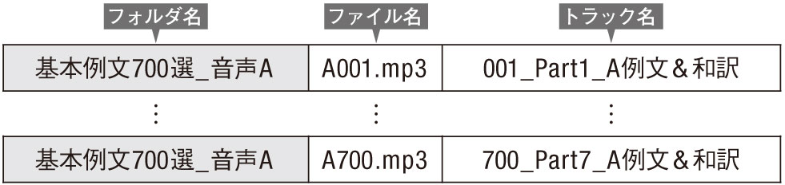
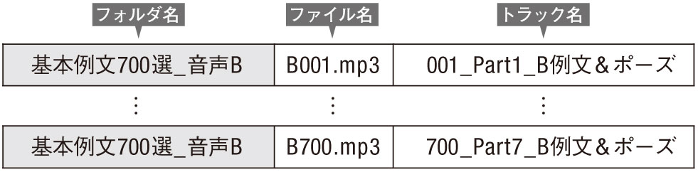
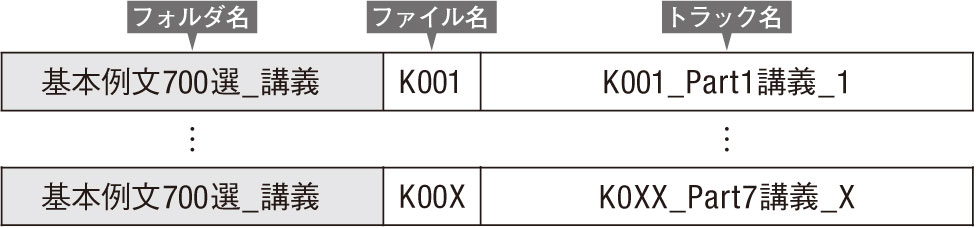
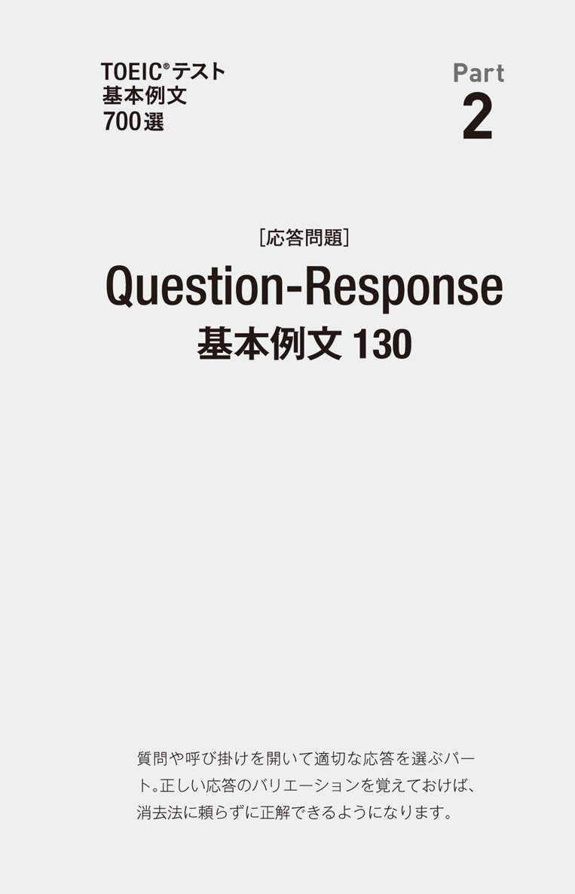
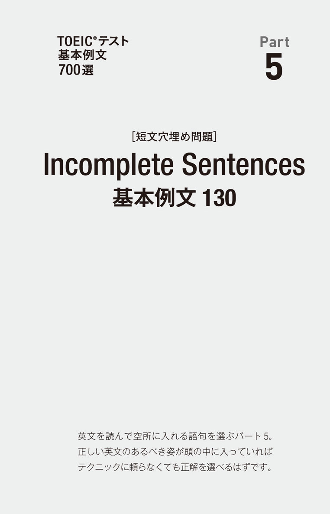
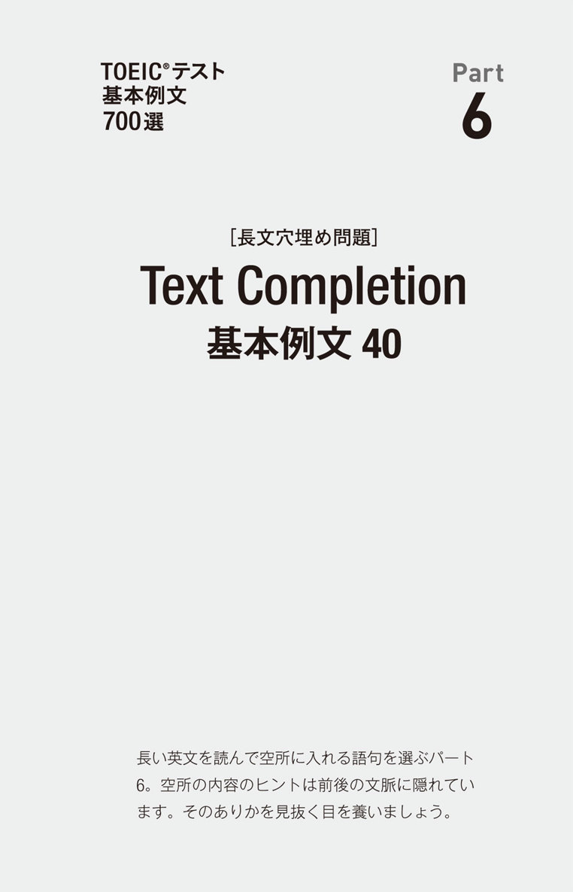
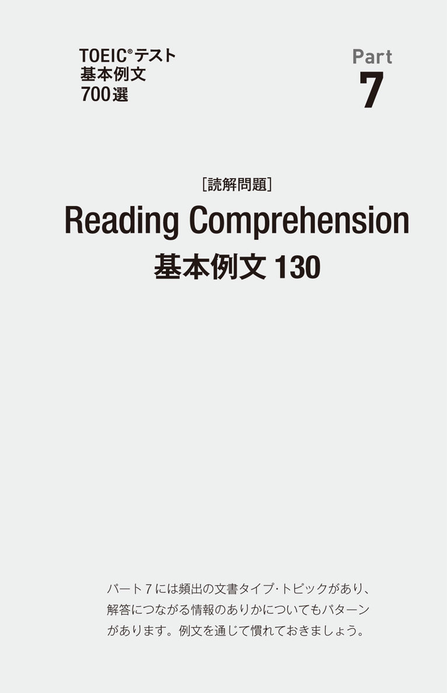
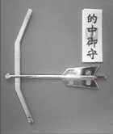

| [新形式問題対応／音声DL付] TOEIC(R)テスト 基本例文700選 TTTスーパー講師シリーズ | |
| 基本例文700選 制作委員会 | |
| (2013) | |
参照項目から元の箇所に戻るには、お使いのビューワーの仕様に従ってください。または一旦目次を表示し、戻りたい箇所の近くの見出しをタップして戻ってください。
は じ め に
2012年の6月でした。
企業や大学でTOEICを教えている、「TOEIC®テストスコアアップ指導者養成講座」（TTT）の卒業生15人が渋谷にある会議室に集まりました。教材について議論するためです。講師は効果的な授業を行うために、常日頃から良い教材を探していて、コンテンツや使い方に関して意見や悩みを持っています。そこでその日は、「クラスで使いたくなる教材」について徹底的に話し合ってもらったのです。企業や大学では、模擬試験や全パートをカバーする問題集が教材として使われることが多いのですが、TOEIC慣れしていない生徒さんにとっては、そのような実践的な教材はレベルが高すぎて手も足も出ず、試験本番は当然、機関銃に竹やりで立ち向かうようなもので、惨敗してしまうそうです。この話が出たとき、ある講師がつぶやきました。「基本例文集があればいいのに」と。
例文＋記憶のトリガー
TOEICに出る単語やフレーズが盛り込まれている例文集に事前に何度も目を通して、そこに登場する英語になじんでおけば、試験本番がかなり楽になります。ただし、単に読むだけでは、なかなか記憶に定着しにくいのも事実でしょう。そこで、議論を重ねた結果、2つの「記憶のトリガー」を盛り込むことにしました。1つ目は「コメント」です。例文ごとに、執筆者によるヒトコトが掲載されています。名前入りで、口語体になっていますので、近くにいる先生が語っているような印象を受けるでしょう。もう1つは「音声」です。例文の朗読だけでなく、執筆陣が単語やフレーズについてディスカッションしている様子を録音した音声が無料で提供されています。これら2つの工夫により、本書に収録されているコンテンツが、あなたの記憶にベタっとへばりつきます。
経験値＝923回
そうやって、この本が誕生しました。「メンバー略歴」（こちら）に掲載されているように、本書の企画には38人もの人が携わっています。全員がTTTの卒業生（ボクは講師ですが）、受験回数の合計は923回。適切な形容詞が見つからない、前代未聞の企画になりました。執筆陣は非常に熱心に例文を書きましたが、700例文しか掲載できないので、多くがボツになりました。つまり、それだけ厳選された、濃いコンテンツになっているということです。ぜひ、この本と音声を徹底的に使ってください。そうすれば、次に受験するとき、かつて受験したときに見たのとは違う景色が目の前に広がるはずです。
第183回TOEIC公開テストを受験した日に
ヒロ前田
TTTスーパー講師シリーズ
TOEIC界のベスト＆ロングセラー、『新TOEIC®テスト 直前の技術』（アルク）を生み出したヒロ前田とロバート・ヒルキがトレーナーを務めるアルクの「TOEIC®テストスコアアップ指導者養成講座」(Teacher Training for the TOEIC® Test=TTT)。2005年の開講以来参加者は250人を超え、企業研修・大学・高校・専門学校で活躍するTOEIC講師や教材執筆者を多数輩出しています。"TTTスーパー講師シリーズ"は、TOEICテストに関する深い知識と卓越した指導力を誇るTTT卒業生が、単独／チームで執筆する教材シリーズです。
TOEIC®テスト
基本例文
700選
CONTENTS
Part1
Part2
Part3
Part4
Part5
Part6
Part7
本 書 の 構 成 と 使 い 方
TOEIC公開テスト受験回数のべ900回を超え、テスト問題のパターンに精通した講師34人が、各パートの問題文に頻繁に登場している単語・表現・文法・トピックを使い、計700の例文を執筆しました。
リスニング、音読、リピーティング、暗唱など、例文の使い方は自由自在。正しい英文の形、必ず出る展開パターンになじんで、自然に正解が選べる「TOEIC脳」を作り上げてください。
各 パ ー ト の 構 成
DOWNLOAD
001～009.mp3
【ファイル名
この右上に掲載された例文の音声（mp3）のファイルの名前を示しています。】
オフィスで働く人
パート1では、屋内で事務作業などをしている人々の写真が頻出します。場面を思い浮かべながら音読しましょう。
□ 001
【例文番号例文の音声（mp3）のファイル名もこの数字に対応しています。】
A man iswriting something on anotepad.
【例文重要なポイントが太字あるいは下線付きになっています。】
男性がノートに何かを書いている。
【例文の訳人名・組織名・一部の地名は欧文のまま表記されています。】
▶ パート1に頻出の人物動作。writing somethingの他にtaking a memo、taking some notes、jotting down some notesなども出ます。（浅場）
【解説例文について「押さえるべきポイント」「出題パターン」などを解説しています。】
各 パ ー ト の 例 文 内 容
Part1 写真描写問題 70文
選択肢に頻出する英文を、頻出の写真の場面ごとに掲載しました。写真の中の物の名前や、人の行動などを表す単語・表現に慣れることができます。
Part2 応答問題 130文
質問（または呼び掛け文）と、その質問に対し正しい応答となる英文を、質問文の種類ごとに掲載しました。応答は、1つの質問に対して3つの例を紹介しています。ストレートな応答、ひねりのある応答など、さまざまなパターンに慣れることができます。
Part3 会話問題 100文
頻出トピックをテーマにした会話文を1〜数文単位で掲載しました。設問例も付いています。話し手の意思や会話の転換点を示し、設問を解くカギとなる「サイン表現」に慣れることができます。
Part4 説明文問題 100文
頻出トピックをテーマにした説明文を1〜数文単位で掲載しました。設問例も付いています。トピックごとに複数の展開を含むものもあります。「サイン表現」のほか、トピックごとの頻出単語・表現に慣れることができます。
Part5 単文穴埋め問題 130文
文法・語法・語彙など、実際のテストで問われやすい（空所になりやすい）ポイントを複数含む問題文を、トピックごとに掲載しました。正しい英文の形に慣れることで、正解を選びやすくなります。
Part6 長文穴埋め問題 40文
パート6の問題の中でも、前後の文脈から空所に入る語句を判断する「文脈依存型問題」を2〜3文で作り、文法項目ごとに掲載しました。解答に必要な情報を文中でどのように探せばよいか、主なパターンを知ることができます。
Part7 読解問題 130文
頻出トピックをテーマにした文書を、数文単位に掲載しました。設問例も付いています。文書のタイプとトピックごとに、設問を解くヒントになりやすい単語・表現に慣れることができます。
ダウンロード音声について
本書に対応する音声ファイル（mp3）は3種類あります。
アルクのウェブサイト内「ダウンロードセンター」からダウンロードできます。音声の内容とフォルダ（アルバム）名、ファイル名、トラック名は下記の通りです。
音声A
英語の例文音声＋例文の和訳音声
● パート1から7まで計700セットの例文があります。
● 英文音声*の後に日本語訳が読み上げられるので、本なしで聞いても意味を確認できます。
*音声A、Bともにパートによって構成が違います。各パートの説明ページをご覧ください。
*英文の発音は北米発音です。

音声B
英語の例文音声＋リピートポーズ
● パート1から7まで計700セットの例文があります。
● 英文音声の後にポーズが入っているので、リピーティング（聞こえてきた英文をまねして言う練習）などに活用できます。

音声C
講師によるパート別音声講義
● 執筆講師陣による、ディスカッション形式のパート攻略法講義です。
おしゃべりを楽しみながら、頻出語彙・表現の知識、解答のコツを学びましょう。

無料音声ダウンロード
本書に対応する音声は、すべて無料でダウンロードしていただけます。下記リンクにアクセスし『TOEIC®テスト 基本例文700選』を選択、フォームに必要事項をご記入の上送信いただくと、ダウンロードページURLのご案内メールが届きます。
ALC Download Center
ダウンロードセンター
http://www.alc.co.jp/dl/
Part１
写真描写問題
収録例文について
パート1「写真描写問題」は、問題冊子に印刷されている写真を描写する文として最も適切なものを聞こえてくる4つの選択肢から選ぶ問題です。出題される写真にはパターンがあり、同じようなシーン（場面）の写真が繰り返し出題されています。そこで本書のこのパートでは、そのような常連のシーン別に例文を70文掲載しました。各シーンの選択肢に頻出する語句・表現を覚え、聞いた瞬間に意味がとれるようになりましょう。
シーン一覧
オフィスで働く人／オフィスの様子／街中・屋外で働く人／道路・交通／街中の人・風景／店舗・レストラン／遠景・水辺の風景
注目ポイント
上位語
写真に写っているモノの名前が、選択肢では抽象的なグループ名に言い換えされることがよくあります。例えばmicroscope（顕微鏡）がequipment（器具）に、bus（バス）がvehicle（乗り物）に、trash bin（ゴミ箱）がcontainer（容器）に言い換えられたりします。このようなグループ名は、「総称」あるいは「上位語」と呼ばれます。上位語の聞き取りと理解はパート1勝利のカギです。
例文の表記について
□ 007 【チェックボックスとトラック番号】
They'reexamining someequipment.
【太字：特に聞き取るべき重要な語句】
【下線部：上位語】
Text & Audio
Instructions
ダウンロード音声の構成
音声A
例文番号 ⇨ 例文 ⇨ 例文訳
"1. A man is writing something on a notepad."
「男性がノートに何かを書いている。」
音声B
例文番号 ⇨ 例文 ⇨ リピート用ポーズ
"1. A man is writing something on a notepad."［ポーズ］
音声C
講師による音声講義
主な内容：パート１頻出のシーンと語句・表現／上位語について／has beenとis beingの聞き分け／位置関係を示す表現 など
DOWNLOAD
001～010.mp3
オフィスで働く人
パート1では、屋内で事務作業などをしている人々の写真が頻出します。場面を思い浮かべながら音読しましょう。
□ 001
A man iswriting something on anotepad.
男性がノートに何かを書いている。
▶ パート1に頻出の人物動作。writing somethingの他にtaking a memo、taking some notes、jotting down some notesなども出ます。（浅場）
□ 002
A woman ishanding out somedocuments.
女性が書類を配布している。
▶ handing out ~は人が何かを手渡している写真で頻出の表現です。（天満）
□ 003
Some people aresitting atcomputers.
何人かの人がコンピューターに向かって座っている。
▶ sitting at ~は何かに向かって座っている様子です。テーブルで食事をしている人の写真も、He's/She's sitting at a table.と描写できます。（岩重）
□ 004
A man isgiving apresentation.
男性がプレゼンテーションをしている。
▶ 男性が数人の人の前で話している写真で正解になる文。その情景から「プレゼンしているんだな」と類推する必要があります。（天満）
□ 005
A man isadjusting themicroscope.
男性が顕微鏡を調節している。
▶ adjust（～を調整する）で機械をいじっている人の動作を表現しています。microscope（顕微鏡）も聞き取れるようにしておきましょう。（山口）
□ 006
One woman isholding acup.
1人の女性がカップを持っている。
▶ 複数の人の中の1人だけに当てはまる動作は、One woman/man is ...またはOne of the women/men is ...のように描写されます。（櫻井）
□ 007
They'reexamining someequipment.
彼らは器具を調べている。
▶ equipmentは上位語で、「機具・機器」「設備」「装置」などを意味します。examineは「～を注意深く見る、調べる」。（天満）
□ 008
They'regreeting each other.
彼らはあいさつを交わしている。
▶ 人が握手している写真などで正解になる文。She's waving good-bye.（彼女は手を振って別れを告げている）という文も出題例があります。（岩重）
□ 009
They'reboth wearingshort-sleeved shirts.
彼らは2人とも半袖のシャツを着ている。
▶ 人物が2人の場合、2人に共通することが描写されます。wearing（着用している）とputting on（着ようとしている）の違いは重要。（堤）
□ 010
A speaker isaddressing theaudience from apodium.
演説者が演壇から聴衆に話し掛けている。
▶ addressは名詞では「住所」ですが、「～に話し掛ける、演説する」、「～に取り組む」という動詞としても頻出。podiumは「演壇」。（グリーン）
DOWNLOAD
011～020.mp3
オフィスの様子
オフィスや室内の風景写真では、物の位置関係に注意。オフィス機器や家具の英語表現も押さえておきましょう。
□ 011
Somebooks arepiledon thedesk.
何冊かの本が机の上に積まれている。
▶ pileは「～を積み重ねる」という他動詞。受動態be piledは「積んである」という意味になります。（堤）
□ 012
Boxes arestackedon theshelf.
箱が棚の上に積まれている。
▶ pileは「（無造作に）～を積み重ねる」、このstackは「（きれいに）～を積み重ねる」です。（玉木）
□ 013
Someboxes arepushed against thewall.
いくつかの箱が壁際に置かれている。
▶ against the wallは壁にぴったり付けてある状態です。箱が壁に沿って置かれている写真で正解になる文です。（木伏）
□ 014
Aphotocopier ispositionednext to thedesk.
机の横にコピー機が置かれている。
▶ next to ~は「～の隣に、～に隣接して」。難しく言い換えるとadjacent to ~（～に近接して）です。（柳瀬）
□ 015
Someseats areunoccupied.
いくつかの席は空いている。
▶ 席が全部は埋まっておらず、いくつか空いている写真で正解になります。満席なら、All the seats are occupied.です。（山口）
□ 016
Theworkstations arebeing used.
作業デスクは使用中だ。
▶ workstationは、しばしばパソコンが置いてある「作業デスク」です。進行形なので、誰かが机に向かっている写真で正解になります。（市原）
□ 017
Aroom isbeing prepared for a meeting.
部屋が会議のために準備されている。
▶ 人が会議室の机やいすを動かしたり、書類を置いたりしている写真で正解になる文です。（長田）
□ 018
Thedoors have beenleft open.
ドアが開いたままになっている。
▶ leave A Bは「AをBの状態にしておく」。ここではAに当たるのがThe doors。ドアが開けっ放しになっているということです。（臼井）
□ 019
Apicture has beenhungon thewall.
絵が壁に掛けられている。
▶ has been hung（掛けられている）は他動詞hang（～［絵など］を掛ける）の現在完了形の受動態。on the wall（壁に）もよく出ます。（大里）
□ 020
Somelighting fixtures arehanging from theceiling.
照明器具が天井からつり下がっている。
▶ are hangingのhangは自動詞で「つり下がる」。from the ceiling（天井から）も頻出です。lighting fixtureは「照明器具」。（柳瀬）
DOWNLOAD
021～030.mp3
街中･屋外で働く人
掃除、道路工事、商品の陳列、荷物の積み降ろしなど、さまざまな「働く人」の写真が登場します。関連表現を覚えましょう。
□ 021
He'soperating amachine.
彼は機械を操作している。
▶ machine（機械）はコピー機（photocopier）などの言い換え表現。動詞operate（～を操作する）も頻出です。（長田）
□ 022
He'spushing awheelbarrow.
彼は手押し車を押している。
▶ wheelbarrowとは工事現場で土砂などを運ぶために使う「手押し車」。push a wheelbarrow（手押し車を押す）はパート1の頻出表現です。（玉木）
□ 023
A man isemptying acontainer.
男性が容器を空にしている。
▶このemptyは動詞で、人が何かの中身を空ける動作を表します。~ is/are empty.（～が空っぽの状態である）のemptyは形容詞です。（中村）
□ 024
A man iswatering thelawn.
男性が芝生に水をまいている。
▶ waterは動詞で「～に水をやる」という意味。lawn（芝生）の代わりに、some plants（植物）、flowerbed（花壇）なども出題されます。（駒井）
□ 025
A man iscleaning awindowpane.
男性が窓ガラスを拭いている。
▶ windowpaneは「窓ガラス」を表します。身の回りにある物の名前はよく出るので、英語で何と言うか確認しておきましょう。（長田）
□ 026
They'recarrying aladder.
彼らははしごを運んでいる。
▶ 工事・建築現場（construction site）の写真は頻出。ladder（はしご）やheavy machine（重機）なども覚えておきましょう。（岩重）
□ 027
They'reloading somecargo onto thetruck.
彼らはいくつかの荷物をトラックに積み込んでいる。
▶ 動詞load（～を積み込む）、名詞cargo（荷物）はパート1の頻出語です。（玉木）
□ 028
Somecartons arebeing unloaded from thetruck.
トラックからいくつかの段ボール箱が降ろされている。
▶ loadの対義語unload（～を降ろす）も頻出。carton（段ボール箱）は引っ越し関連のトピックでも頻出の語です。（長田）
□ 029
Acarpet isbeinginstalled.
カーペットが敷かれているところだ。
▶ ~ is/are being --edは受動態の進行形で、「～が今まさに...されつつある」様子を表しています。installは「～を設置する」の意味。（浅場）
□ 030
Aconstruction crew isworking on aplatform.
建設作業員が足場で作業をしている。
▶ platformは「台」。建設中の建物の周囲に組まれた「足場」の上で、作業員が仕事をしている写真であれば、これが正解。（溝口）
DOWNLOAD
031～040.mp3
道路･交通
車道や歩道、横断歩道、交差点の写真も頻出。通行人の動作や車両（自転車、乗用車、バス、トラック）の状態が描写されます。
□ 031
Somepedestrians arecrossing thestreet.
何人かの歩行者が通りを横切っている。
▶ 名詞pedestrian（歩行者）、動詞cross（～を横切る）はパート1の頻出語です。（玉木）
□ 032
Passengers areboarding avehicle.
乗客が乗り物に乗り込んでいる。
▶ passenger（乗客）は、飛行機や電車、バス、フェリーなど、あらゆる乗り物の客を表します。vehicleは車輪がある乗り物の総称です。（白井）
□ 033
Somevehicles aremoving inthe same direction.
何台かの乗り物が同じ方向に走っている。
▶ 道路や橋の上を走る車の写真では、向きの描写表現が頻出します。「反対方向に」はin the opposite directionです。（櫻井）
□ 034
Avehicle isgoing around thecorner.
乗り物が角を曲がろうとしている。
▶ around the cornerは「角を曲がって」です。カーブを走行中のバスや車の写真で正解になる文です。（長田）
□ 035
Somecars havestopped at theintersection.
何台かの車が交差点で止まっている。
▶ 車が停車している様子は、車を主語にして現在完了形で表せます。交差点（intersection）で信号待ちをする車を思い浮かべましょう。（久保）
□ 036
Somevehicles areparked along thecurb.
何台かの乗り物が縁石に沿って止められている。
▶ along the curb（縁石に沿って）は頻出。受動態are parkedの代わりに、受動態の現在完了形have been parkedで表すこともできます。（玉木）
□ 037
Thecar isparked in thedriveway.
車が私道に止めてある。
▶ drivewayは道路から自宅の車庫までの「私道」。この文が正解になるのは、車庫の前の通路に車が駐車してある写真です。（溝口）
□ 038
Abicycle isleaning against apole.
自転車が柱に立て掛けてある。
▶ lean against ~で「～に立て掛けてある、もたれ掛かる」。be propped against ~（～に立て掛けてある）が出題されたこともあります。（駒井）
□ 039
Theroad ispaved withstones.
道に石が敷き詰められている。
▶ be paved with ~は「～で舗装されている、～が敷き詰められている」の意味です。名詞のpavementは「舗装道路、車道」。（グリーン）
□ 040
Awalkway isbordered byshort fences.
歩道が低いフェンスで区切られている。
▶ borderは名詞で「境界」を表しますが、動詞では「～を縁取る、区切る」。be bordered by ~で「～で区切られている」の意味。（フラハティ）
DOWNLOAD
041～050.mp3
街中の人・風景
街中の風景や人々の写真で、正解選択肢として登場しそうな文を集めました。人や車、物などの位置関係を示す表現にも注目。
□ 041
They'replayingmusical instruments.
彼らは楽器を演奏している。
▶ musical instrumentで「楽器」。play（～を演奏する）の代わりにperform（［聴衆の前で］～を演奏する）、 practice（～を練習する）も出ます。（櫻井）
□ 042
Spectators havegathered at astadium.
観客がスタジアムに集まっている。
▶ spectatorはスポーツなどの「観客」。壮大なシーンを見せ場とする映画を「スペクタクル映画」と呼びますよね。（テッド）
□ 043
Some people areleaning over therailing.
何人かの人が手すりから身を乗り出している。
▶ lean over ~で「～から身を乗り出す」。railing（手すり）も頻出語で、歩道の他、橋、エスカレーターなどさまざまな場面で出てきます。（木伏）
□ 044
They'restrollinghand in hand.
彼らは手をつないで散歩している。
▶ stroll（散歩する）はwalk（歩く、散歩する）の類義語で、こちらも頻出です。hand in handは「手をつないで」。（長）
□ 045
They'refacing each other.
彼らはお互いに向き合っている。
▶ face each otherは「お互いに向き合う」。They're sitting face to face.（彼らは向き合って座っている）などとも言えます。（駒井）
□ 046
Some people areseatedacross from each other.
何人かの人が向かい合わせに座っている。
▶ across from ~（～の向かいに）とeach other（お互い）をセットにすると、「向かい合わせに」という意味になります。（山口）
□ 047
They'resittingside by side.
彼らは並んで座っている。
▶ 「隣同士に並んでいる」という表現はパート1で頻出。They're sitting next to each other.と言い換えることもできます。（溝口）
□ 048
People arewaitingin line.
人々が一列に並んで待っている。
▶ 人気のお店などの前で人々が行列している様子を描写する表現。in lineと併せて、in a row（一列に）も覚えておきましょう。（山口）
□ 049
Thevending machines arein a row.
自動販売機が一列に並んでいる。
▶ パート1で頻出の「一列に並んでいる」という表現。The vending machines are lined up.やThe vending machines are in a line.とも言います。（溝口）
□ 050
People areseated in rows.
人々は数列に分かれて座っている。
▶ row（列）がポイント。rowsと複数形なので、何列かに並んで座っている様子を表します。劇場や映画館の座席をイメージしましょう。（長田）
DOWNLOAD
051～060.mp3
店舗・レストラン
パート１には、生鮮食品店や土産物屋、書店などさまざまな店舗の写真が登場します。中でもレストランは頻出です。
□ 051
Some people arebrowsing at amarket.
何人かの人が店を見て回っている。
▶ 屋内外で買い物をしている人たちの写真が出題されることがあります。「～（商品）を見て回る」は動詞browseを使って表します。（長田）
□ 052
A man isstaffing acounter.
男性がカウンターに詰めている。
▶ staffには「人を配置する」という意味がありますが、「（ある場所）に詰める」という意味で、パート1に登場することがあります。（天満）
□ 053
A diner isseated in front of thewall.
食事客が壁の前に座っている。
▶ レストランの「食事客」はdiner、「給仕係」はserverと表現されることがあります。（天満）
□ 054
The man isordering ameal.
男性が食事を注文している。
▶ 写真から注文しているかどうかを判断するには、「手元にメニューがあるか」や「そばに給仕係がいるか」を見ます。（駒井）
□ 055
A man ispouring somedrink into acup.
男性がカップに飲み物を注いでいる。
▶ pour（～を注ぐ）が聞き取りにくい場合は、音声をまねて言ってみましょう。注ぐしぐさをしながら言うと覚えやすいですよ。（テッド）
□ 056
Somemerchandiseis being displayed.
いくつかの商品が陳列されている。
▶ is being displayed（陳列されている）は進行形の受動態ですが、写真に商品を陳列している人がいなくても正解になり得ます。（グリーン）
□ 057
Somefood itemshave been arranged ondisplay.
いくつかの食品が陳列されている。
▶ 野菜、果物、肉などをまとめてfood itemと呼びます。have been arrangedは「過去に並べられて今もその状態にある」。（工藤）
□ 058
There are someappliances on thecounter.
カウンターにいくつかの電化製品がある。
▶ refrigerator（冷蔵庫）、microwave（電子レンジ）などをまとめてappliance（電化製品）で表します。「上位語」を整理しておきましょう。（中村）
□ 059
Plates arestored in thecupboard.
皿は食器棚の中にしまってある。
▶ cupboardの発音[kʌ́bərd]の聞き取りがカギ。[p]は発音されません。単語の真ん中や語末の[p]/[b]はかなり弱くなります。（浅場）
□ 060
Somebaked goods arestored in thedisplay cabinet.
いくつかの焼き菓子がショーケースに保存されている。
▶ baked goodsで「焼き菓子」。クッキー、パン、ケーキなどの総称です。このstoreは「～を保存する」。「店舗」ではありません。（グリーン）
DOWNLOAD
061～070.mp3
遠景、水辺の風景
難問が多いと言われる遠景や水辺の写真の選択肢に頻出する表現を集めました。英文を聞きながら情景を想像してみてください。
□ 061
Atall tower isvisiblein the distance.
高い塔が遠くに見える。
▶ パート1でよく描写される遠景の物にはmountains（山々）や、 building（ビル）、bridge（橋）といったconstruction（構造物）などがあります。（岩重）
□ 062
High-rise buildingsoverlook theocean.
高層ビルから海が見渡せる。
▶ overlookで「～を見渡せる」。最近では「高い建物・塔・その窓から何かが見渡せる」という表現が頻出しています。（櫻井）
□ 063
Buildings arecrowded together on thehillside.
丘の中腹に建物が密集している。
▶ be crowded together（密集している）とhillside（丘の中腹）は、どちらも情景をイメージしながら覚えておきましょう。（長田）
□ 064
Someboats aredocked along theriverside.
いくつかのボートが川沿いに係留されている。
▶ dockは「～（船）を係留する」という他動詞。主語が「船」なら受動態になります。動詞の動作主と主語の関係も意識しましょう。（岩重）
□ 065
Someships arefloating near thepier.
いくつかの船が桟橋の近くに浮かんでいる。
▶ floatは自動詞で「浮かぶ」、pierは名詞で「桟橋」です。（長田）
□ 066
Thevessel issecured to thedock.
船が埠頭につながれている。
▶ secureは形容詞では「安全な」ですが、動詞では「～を固定する」を表すこともあります。dockは「埠頭」、vesselは「船」。（臼井）
□ 067
Thetrees arereflected on thewater.
木々が水面に映っている。
▶ 水面やガラス窓に樹木や橋、建物などが反射して映っている写真がよく出題されます。（岩重）
□ 068
Thepatio ispartially shaded by the tree.
中庭の一部が木の陰になっている。
▶ 能動態でThe tree is casting a shadow on the patio.と言っても同じ。同じ場面を受動態と能動態の両方で描写してみると、力がつきますよ。（浅場）
□ 069
Severalstatues surround thefountain.
数体の像が噴水を囲んでいる。
▶ パート1にはstatue（像）やfountain（噴水）もよく登場します。surroundは「～を囲む」。（岩重）
□ 070
Theroof of theshelter isslanted.
小屋の屋根が斜めになっている。
▶ shelterは「避難所」という意味ですが、駐輪場やテント、屋根のあるバス停など、悪天候から身を守れる場所も表します。（工藤）
Part 1 写真描写問題
最重要語句リスト
パート1の例文・解説に登場した語句から、押さえておきたいものをリストにしました。復習にお役立てください。
across from each other 向かい合わせに
address 他動 ～に話し掛ける
adjust 他動 ～を調整する
appliance 名 ［上位語］電化製品
arrange 他動 ～を並べる、そろえる
audience 名 観客
baked goods 名 ［上位語］焼き菓子
board 他動 ～に乗り込む
browse 他動 ～を見て回る
cargo 名 荷物
carton 名 段ボール箱
ceiling 名 天井
container 名 容器
cross 他動 ～を横切る
curb 名 縁石
diner 名 食事客
display 他動 ～を陳列する
dock 他動 ～（船）を係留する
document 名 書類
empty 他動 ～（中身）を空ける
equipment 名 ［上位語］機器、装置
examine 他動 ～を注意深く見る、調べる
fence 名 柵、塀
food item 名 ［上位語］食品
fountain 名 噴水
gather 自動 集まる
hand out ~ ～を手渡す
hang 他動 ～（絵など）を掛ける、展示する
自動 掛かる、つり下がる
in a row 一列に並んで
in line 一列に並んで
install 他動 ～を設置する
intersection 名 交差点
ladder 名 はしご
lawn 名 芝生
lean against ~ ～に立て掛ける、もたれ掛かる
load 他動 ～を積み込む
machine 名 ［上位語］機械
merchandise 名 ［上位語］品物
microscope 名 顕微鏡
musical instrument 名 ［上位語］楽器
operate 他動 ～を操作する
overlook 他動 ～を見渡す
passenger 名 （乗り物の）客
(be) paved with ~ （道が）～で舗装されている
pedestrian 名 歩行者
perform 他動 ～を演奏する
photocopier 名 コピー機
pier 名 桟橋
pile 他動 ～を（無造作に）積み重ねる
platform 名 台、足場
podium 名 演壇
position 他動 ～を置く
pour 他動 ～を注ぐ
railing 名 手すり
reflect 他動 ～を反射する、映す
seat 他動 着席させる
shelf 名 棚
shelter 名 （悪天候から）身を守れる場所
side by side 隣り合って
sit at ~ ～に向かって座る
stack 他動 ～を（きれいに）積み重ねる
stroll 自動 散歩する
surround 他動 ～を囲む
unoccupied 形 占有されていない
vehicle 名 ［上位語］乗り物
vessel 名 船
visible 形 見ることができる
walkway 名 歩道
water 他動 ～に水をやる
wheelbarrow 名 手押し車
workstation 名 作業デスク

Part２
応答問題
収録例文について
パート2「応答問題」は、質問や呼び掛け（問題文）と3つの応答を聞いて、最も適切な応答を選ぶ問題です。本書では問題文と正解となる応答（1つの問題文につき3種類）のセットを問題文のタイプ別に計130組掲載しました。ストレートな応答からややひねりのある応答まで、さまざまな「正しい応答パターン」を頭に入れ、消去法に頼らずとも正解を選べるようになりましょう。
問題文タイプ一覧
WH疑問文（Who、What、Where、When、Why、How）／Yes/No疑問文／間接疑問文／否定疑問文／付加疑問文／選択疑問文／機能文／平叙文（陳述）
注目ポイント
問題文の聞きどころ
パート2では問題文を聞き逃すと正しい応答を選びようがありません。問題文は短い文なので、主語、動詞、目的語など、どの要素も重要ですが、問題タイプによって特に聞き逃してはいけない箇所があります。例えばWH疑問文では冒頭の疑問詞が最重要。また「AかBか」を問う選択疑問文では、AとBの部分で何が対比されているか把握する必要があります。
例文の表記について
□ 071
Who'sgoing to be our new manager?
【太字：問題文】
【下線部：特に注意して聞き取るべき重要な語句】
① Mr. Kato.
② John will be promoted.
③ Nobody knows yet.
【3パターンの正解応答文】
Text & Audio
Instructions
ダウンロード音声の構成
音声A
例文番号 ⇨ 問題文と訳 ⇨ 応答①と訳 ⇨ 応答②と訳 ⇨ 応答③と訳
"71. Who's going to be our new manager?"
「誰が私たちの新しいマネジャーになるのでしょうか」
"Mr. Kato." 「Katoさんです」
"John will be promoted." 「Johnが昇進します」
"Nobody knows yet." 「まだ誰も知りません」
音声B
例文番号 ⇨ 問題文と応答①＋ポーズ ⇨ 問題文と応答②＋ポーズ ⇨ 問題文と応答③＋ポーズ
"71.
Who's going to be our new manager?"
"Mr. Kato."［ポーズ］
"Who's going to be our new manager?"
"John will be promoted."［ポーズ］
"Who's going to be our new manager?"
"Nobody knows yet."［ポーズ］
音声C
講師による音声講義
主な内容：パート2問題文タイプ別攻略法／直接的な応答と間接的な応答／音のトラップについて など
DOWNLOAD
071～080.mp3
WH疑問文①...Who
WH疑問文とはWho、What、When、Where、Why、Howなどの疑問詞から始まる文。まず「誰か」を問うWho疑問文と、適切な応答パターンを見ていきましょう。
□ 071
Who'sgoing to be our new manager?
① Mr. Kato.
② John will be promoted.
③ Nobody knows yet.
誰が私たちの新しいマネジャーになるのでしょうか。
① Katoさんです。 ② Johnが昇進します。 ③ まだ誰も知りません。
▶「誰？」という質問です。こういう質問にはYes、Noでは答えられません。③のように具体的な人物名が出てこなくても正解になり得ます。（池田）
□ 072
Who'staking over Mr. Portman's position?
① Ms. Gonzalez, the vice president.
② Mr. Maeda will, if it's approved by the board.
③ It'll be announced tomorrow.
誰がPortmanさんの職を引き継ぐのですか。
① 副社長のGonzalezさんです。 ② Maedaさんでしょう、役員会が認めれば。 ③ 明日発表されることになっています。
▶この③も人物名を挙げない応答パターン。「明日発表される（から今はまだ分からない）」ということです。（白井）
□ 073
Who'sin charge of ordering office supplies?
① I think it's Ms. Lee.
② We take turns.
③ Someone from the general affairs department.
備品発注の担当者は誰ですか。
① Leeさんだと思います。 ② 順番にやっています。 ③ 総務部の誰かです。
▶②のturnは「順番」。take turnsで「交代でやる」です。be in charge of ~（～を担当している）も頻出表現。（長田）
□ 074
Who'sgoing to chair the next meeting?
① Mr. West in the Tokyo branch.
② The manager of the sales department.
③ It hasn't been announced yet.
次の会議の議長を務めるのは誰ですか。
① 東京支社のWest氏です。 ② 営業部長です。 ③ まだ発表されていません。
▶chairは動詞で「～の議長を務める」。実際のテストなら、chair（いす）という同じ音の単語を使った引っ掛けの選択肢が出るかもしれません。（中村）
□ 075
Who'sassigned to the new research project?
① Ms. Lee is one of the members.
② Ask the lab chief, Mr. Rodriguez.
③ I have a list of the members.
新しい研究プロジェクトを任命されているのは誰ですか。
① Leeさんはメンバーの1人です。 ② 研究所所長のRodriguezさんに聞いてください。 ③ メンバーのリストを持っていますよ。
▶②「○○さんに聞いて」は頻出の正解応答。③はメンバー表を渡すことで任命された人を教えてあげられると示唆しています。（長田）
□ 076
Whobooked the hotel in Hong Kong?
① Ms. Kim did.
② Ken made the reservation yesterday.
③ I asked Ken to do it.
誰が香港のホテルを予約しましたか。
① Kimさんです。 ② Kenが昨日予約しました。 ③ Kenに頼みました。
▶bookedは「～を予約した」。②のmade the reservationはその言い換えです。③「誰かに頼んだ」もよくある正解応答。（池田）
□ 077
Whowrote this marketing report?
① I think Aidan did.
② Sorry, I don't know.
③ Is there any problem with it?
誰がこのマーケティング報告書を書いたのですか。
① Aidanだと思います。 ② すみません、知りません。 ③ それに何か問題があるのですか。
▶②の「知りません」はいろいろなWH疑問文で正解になり得ます。③のように質問に質問で返すパターンも正解になります。（柳瀬）
□ 078
Whoshould I contact to get the printer repaired?
① Anton usually takes care of it.
② I'll call the technician for you.
③ I might be able to fix it.
プリンターを修理してもらうには誰に連絡すればいいですか。
① Antonが普段引き受けています。 ② 修理する人を呼んであげますよ。 ③ 私が修理できるかもしれません。
▶TOEICの世界ではプリンターはよく故障します。②のtechnician（技術者、修理する人）はTOEIC頻出語です。（長田）
□ 079
Whowill attend the sales meeting for Mr. Pak?
① Ms. Williams, I heard.
② He says he's going there himself.
③ It hasn't been decided yet.
Pakさんの代わりに、誰が販売会議に出席しますか。
① Williamsさんだと聞きました。 ② 自分で行くと言っていますよ。 ③ まだ決まっていません。
▶③の「決まっていません」はWho（誰）だけでなくWhere（どこ）、When（いつ）の疑問文に対してもよく正解になる応答です。（久保）
□ 080
Whohas been working under your supervision?
① John and his team.
② Several new employees.
③ Four select members.
あなたの指揮下で働いているのは誰ですか。
① Johnと彼が率いるチームです。 ② 数人の新入社員です。 ③ 4人の選抜メンバーです。
▶supervision（指揮、監督）に絡めて、supervisor（監督者、上司）も覚えておきましょう。③selectはここでは形容詞。（Joy）
DOWNLOAD
081～090.mp3
WH疑問文②...What
次は「何」を問うWhat疑問文と正解応答パターンを見ましょう。What time（何時）、What size（どのサイズ）などの疑問文も押さえてください。
□ 081
What'stoday's special?
① Chicken salad with onion soup.
② Sorry, it's sold out.
③ It's on the board.
今日のお勧め（料理）は何ですか。
① チキンサラダとオニオンスープです。 ② すみません、売り切れました。 ③ 掲示板に書いてあります。
▶①の素直な応答だけでなく、②お客をがっかりさせる応答、③情報を知る方法を伝える応答も正解になります。（長田）
□ 082
Whatare your business hours?
① From 9A.M. to 7P.M.
② We're open weekdays from 9A.M. to 7P.M.
③ What day are you coming?
このお店の営業時間は？
① 午前9時から午後7時までです。 ② 平日の午前9時から午後7時まで営業しています。 ③ 何曜日にいらっしゃいますか。
▶business hoursは「営業時間」のこと。曜日によって営業時間が異なる場合に③のような「質問返し」で応答することもあります。（中村）
□ 083
Whatdoes Mr. Nguyen do for a living?
① He's an accountant.
② He works at a bank.
③ He retired last month.
Nguyenさんの職業は何ですか。
① 会計士です。 ② 銀行で働いています。 ③ 彼は先月退職しました。
▶What do you do for a living?は「何をして生計を立てていますか」＝「職業は何ですか」という定型表現です。（長田）
□ 084
Whatdid they ask about in your job interview?
① My previous experience, mainly.
② We discussed my qualifications.
③ Just my current project.
就職面接で何を聞かれましたか。
① 主に前職での経験についてです。 ② 私の資格について話しました。 ③ 最近のプロジェクトのことだけです。
▶TOEICの世界ではいつでも求人が行われています。qualifications（資格、資質）はリーディングセクションでも頻出の語。（長田）
□ 085
Whatdid you think of the performance?
① It was really interesting.
② I loved it.
③ It was too long.
あの公演をどう思いましたか。
① とても面白かったです。 ② すごく良かったです。 ③ 長過ぎました。
▶What do/did you think of ~?は人に感想を尋ねる定型文。ポジティブ、ネガティブ双方の感想が考えられます。（池田）
□ 086
Whatwould you like to drink?
① Just water, please.
② Do you have orange juice?
③ What kind of drinks do you have?
何をお飲みになりますか。
① お水でいいです。 ② オレンジジュースはありますか。 ③ どういう飲み物がありますか。
▶レストランでの会話です。問題文にある語が使われている応答は不正解になりやすいですが、③のように正答になることもあります。（長田）
□ 087
What timedoes the bookstore open on Sundays?
① Ten in the morning.
② It's closed on weekends.
③ Why don't you call them?
この書店は日曜日は何時に開店しますか。
① 午前10時です。 ② 週末は休みです。 ③ 店に電話してはどうですか。
▶Why don't you ~?は「～してはどうですか」と何かを提案する時の定番表現。質問に提案で返すのもよくある正解応答パターンです。（溝口）
□ 088
What timedoes the meeting start?
① Two-thirty, I think.
② In an hour.
③ Please check with Lynn.
会議は何時に始まりますか。
① 2時半だと思います。 ② 1時間後に。 ③ Lynnに確認してください。
▶in ~ hour(s)（～時間後に）の他に、within ~ hours （～時間以内に）という表現も覚えておきましょう。（池田）
□ 089
What sizeof paper should we order?
① We're running out of A4 quickly.
② Let me check the stock.
③ You should ask Kim about that.
どのサイズの紙を注文するべきですか。
① もうすぐA4がなくなりそうです。 ② 在庫を確認させてください。 ③ それはKimに聞いてください。
▶whatで始まる疑問文は、次の語の聞き取りも重要。この文ではサイズを聞いています。run out of ~は「～を切らす」です。（岩重）
□ 090
What partof Osaka are they building the shopping mall in?
① In a less populated area.
② In the southern region, I was told.
③ They didn't tell me.
彼らは大阪のどの辺りにショッピングモールを建設中なのですか。
① 人口の多くない地域です。 ② 南部地域だと聞きました。 ③ 教えてくれませんでした。
▶less（より少ない／より少なく）はmoreの反意語。「地域」を意味するpart、area、regionをまとめて覚えておきましょう。（Joy）
DOWNLOAD
091～100.mp3
WH疑問文③...Where
「どこ」を問うWhere疑問文。場所だけでなく、情報の出どころについて問う文もあります。Whenとの聞き間違いにも気を付けて。
□ 091
Where'sthe projector?
① In the conference room.
② Over there.
③ Sam is using it right now.
プロジェクターはどこにありますか。
① 会議室にあります。 ② そこにあります。 ③ 今Samが使っています。
▶Whereに対し、③のように場所に関する情報が含まれない選択肢が正解になることもよくあります。（駒井）
□ 092
Where'sthe nearest bookstore?
① Just around the corner.
② There's one in the mall.
③ I'm sorry, I don't know.
一番近くの書店はどこですか。
① 角を曲がってすぐの所ですよ。 ② ショッピングモールの中に1つあります。 ③ ごめんなさい、分かりません。
▶「最寄りの～はどこですか」はよく出る質問文。②のoneは代名詞で、ここではbookstore（書店）を意味しています。（岩重）
□ 093
Whereare the personnel files?
① They're on Jim's desk.
② I think Nadia has them.
③ Look in the top drawer.
人事のファイルはどこにありますか。
① Jimの机の上にあります。 ② Nadiaが持っていると思います。 ③ 一番上の引き出しを見てください。
▶personnelは形容詞で「人事の」ですが、「人事部」という名詞としても使われます。③drawerは「引き出し」。（長田）
□ 094
Wherehas Mr. Lee gone?
① To his client's office.
② To see Mr. Wang.
③ He left early today.
Leeさんはどこに行ったのですか。
① 顧客のオフィスです。 ② Wangさんに会いに。 ③ 今日は早く帰りました。
▶①の「To＋場所」だけでなく、②の「To＋行為」でも、場所を連想させることができるので、正しい応答になり得ます。（溝口）
□ 095
Wheredid you find Tony's e-mail address?
① In the company directory.
② I asked him directly.
③ He gave it to me.
Tonyさんのメールアドレスをどこで見つけたのですか。
① 社員名簿でです。 ② 彼に直接聞きました。 ③ 彼が教えてくれました。
▶①住所、電話番号はdirectory（名簿）に載っている可能性大です。②③は、Whereに対して場所ではなく入手方法で答えています。（工藤）
□ 096
Wherewill you be staying in New York?
① At the Conrad hotel.
② With my aunt.
③ I haven't decided yet.
ニューヨークではどこに滞在するのですか。
① Conradホテルにです。 ② おばの所です。 ③ まだ決めていません。
▶①stay at ［場所］で「［場所］に滞在する」、②stay with ［人］で「［人］の所に滞在する」という意味です。（溝口）
□ 097
Wherewill you go this afternoon?
① To the factory.
② I'm picking up a client at the airport.
③ I'll be in the office all day.
今日の午後はどこに行くのですか。
① 工場へ。 ② 空港に顧客を迎えに行きます。 ③ 1日中オフィスにいます。
▶②③は場所だけではなく予定している行動についても話すことで、質問に答えています。（駒井）
□ 098
Wherecan I find information about the conference?
① On the Web site.
② Check this brochure.
③ Should I call the organizer?
会議についての情報はどこで見つけられますか。
① ウェブサイトで。 ② このパンフレットを見てください。 ③ 主催者に電話しましょうか。
▶②brochureは「冊子、パンフレット」です。少し難しいですが、覚えておきましょう。（長田）
□ 099
Whereshould this shipment be delivered?
① To our warehouse, please.
② Didn't I specify it on the order form?
③ Let me get back to you after I've talked with the manager.
この荷物はどこに配達すればいいですか。
① 倉庫にお願いします。 ② 注文書で指定していなかったですか。 ③ マネジャーに相談して折り返します。
▶②のように質問の前提を崩す応答もあるので想像力が必要。③のlet me get back to you は「即答できないのであらためて連絡します」と言う時に使われる表現です。（天満）
□ 100
Whereshould the new employees pick up their orientation manual?
① At the reception desk near the entrance.
② They should have received it by mail in advance.
③ There will be no handouts this time.
新入社員はオリエンテーションのマニュアルをどこに取りに行けばいいですか。
① 入口そばの受付にです。 ② 事前に郵送で受け取っているはずです。 ③ 今回は配布資料はありません。
▶場所を示す①の他、会話がうまくキャッチボールになっている②③のような応答も答えになります。②in advanceはbeforehandとも言えます。（グリーン）
DOWNLOAD
101～110.mp3
WH疑問文④...When
「いつ」を問うWhen疑問文。報告書の提出期限や会議の開始時刻など、ビジネスに関する会話が頻出です。
□ 101
Whenis Mr. Waldorf arriving at the airport?
① Early in the morning.
② I heard the flight has changed.
③ I'll confirm with him.
Waldorfさんはいつ空港に着きますか。
① 早朝です。 ② 飛行機の便が変更になったと聞きました。 ③ 彼に確認してみます。
▶①時間を明示する、②時間変更を伝える、③確認すると告げる。いずれもWhenに対する適切な応答になります。（柳瀬）
□ 102
Whenis the quarterly report due?
① By the end of the week.
② You can ask Greg.
③ I have no idea.
四半期報告書の締め切りはいつですか。
① 週末までです。 ② Gregに聞いてみたらいいですよ。 ③ 分かりません。
▶dueの使い方に慣れておきましょう。この質問文は、When is the deadline of/for ~?と言い換えることもできます。③I have no idea.は「分かりません、見当もつきません」という意味の定型表現。（長）
□ 103
Whenare you leaving for Japan?
① Next Friday.
② I have to check my itinerary.
③ I haven't decided yet.
いつ日本に出発するのですか。
① 次の金曜日です。 ② 旅程表を確認しないと（分かりません）。 ③ まだ決めていません。
▶②のitineraryは「旅程表」。発音[aitɪ́nərèri]に注意です。（中村）
□ 104
Whendoes the next bus leave?
① In thirty minutes.
② Let me check the timetable.
③ Where are you going?
次のバスはいつ出ますか。
① 30分後です。 ② 時刻表を確認してみます。 ③ どこに行くのですか。
▶③は質問に質問で返すパターン。この「質問返し」が正解になる頻度は、テスト1回当たり約1問です。（相澤）
□ 105
Whenwill the lecture start?
① In 15 minutes.
② As soon as everybody is seated.
③ I have no idea. The speaker hasn't arrived yet.
講義はいつ始まるのですか。
① 15分後です。 ② 皆が着席したらすぐにです。 ③ 分かりません。講演者がまだ来ていないのです。
▶パート2では意表を突く応答が正解になることも。③「講演者が来ない」のような事態も起こり得ます。（溝口）
□ 106
Whenwill the meeting be held?
① It's on the calendar.
② It was canceled.
③ Oh, will you be attending?
会議はいつ行われるのですか。
① カレンダーに書かれていますよ。 ② 中止になりましたよ。 ③ あら、あなたも出席するんですか。
▶この質問文は冒頭がWhereでも英文として成り立ちます。WhenとWhereをしっかり聞き分けられるよう耳を慣らしておきましょう。（駒井）
□ 107
Whenwill Mr. Gupta come back to the office?
① Not until 6P.M.
② He's not coming back here today.
③ Ask his assistant.
Guptaさんはいつ会社に戻ってきますか。
① 午後6時までは戻りません。 ② 彼は今日こちらには戻りません。 ③ 彼のアシスタントに聞いてください。
▶戻る時間を聞かれて、「戻らない」と答える②のように、質問の前提を覆す応答が正解になることもあり得ます。（長田）
□ 108
Whencan I send out the new brochures?
① They'll be here next Tuesday.
② As soon as they're printed.
③ Ask Mr. Rodriguez, the PR manager.
新しいパンフレットはいつになれば発送できますか。
① 来週火曜にここに届きます。 ② 印刷でき次第です。 ③ 広報部長のRodriguezさんに聞いてください。
▶Whenに対して「（準備が）でき次第」と答える②は、ビジネスの場でよくありそうな応答ですね。（長田）
□ 109
Whencan you submit the report to Ms. Smith?
① By the middle of next week at the earliest.
② Mr. Lee is in charge of doing that.
③ I've already done it.
Smithさんにいつ報告書を提出できますか。
① 早くても来週半ばです。 ② それはLeeさんの担当です。 ③ もう提出しました。
▶「いつできる？」に③のように「もうやりました」と言うのも自然な応答。状況を思い浮かべて答えを選びましょう。（溝口）
□ 110
Whenshould we finalize the marketing plan?
① By the end of this month.
② You should ask Mr. Lee.
③ How long will it take to finish?
マーケティング計画はいつ仕上げるべきですか。
① 今月末までにです。 ② Leeさんに聞いてください。 ③ 仕上げるのにどのくらいかかりますか。
▶①のby the end of ~（～の終わりまでに）はWhen?の質問に対応する頻出表現です。（中村）
DOWNLOAD
111～120.mp3
WH疑問文⑤...Why
「なぜ」を問うWhy疑問文への適切な応答は非定型のものが多く、時に意外な理由が述べられます。柔軟な頭で聞きましょう。
□ 111
Whyis the library closed?
① It's being renovated.
② It's moved to Robson Street.
③ Please check the Web site.
図書館はなぜ閉まっているのですか。
① 改修中だからです。 ② Robson通りに移転したんです。 ③ ウェブサイトで確認してください。
▶TOEICの世界の図書館は閉まっていることが多いです。①renovate（～を改修する）は頻出語。（中村）
□ 112
Whyis there yellow paper in the photocopier?
① We've run out of white.
② I didn't notice.
③ I was copying fliers earlier.
なぜコピー機に黄色の紙が入っているのですか。
① 白い紙が切れたのです。 ② 気付きませんでした。 ③ 私がさっきチラシを印刷していたので。
▶コピー機に色付きの紙が入っていたら困りそうですが、こういうパターンも出題されます。（長田）
□ 113
Whyis the deadline extended to tomorrow?
① It's still today at five o'clock.
② The pictures are not ready yet.
③ You should ask Mark.
なぜ締め切りは明日まで延びたのですか。
① 今日の5時のままですよ。 ② 写真がまだ準備できていないからです。 ③ Markに聞いてください。
▶①は質問の前提を覆す返答、②は理由、③は「他の人に聞いて」という「ハズし」パターンです。（長田）
□ 114
Whyare we out of red pens?
① Sorry, I forgot to place an order.
② They're coming in today.
③ Tomoya might have some extras.
なぜ赤いペンを切らしているのですか。
① すみません、発注するのを忘れました。 ② 今日、入荷する予定です。 ③ Tomoyaが予備を持っているかもしれません。
▶be out of ~は、be out of stock（在庫が切れている）と同じ用法。（長）
□ 115
Whyhas Ms. Lee gone to London?
① To meet the new PR manager.
② She's giving a presentation at headquarters.
③ She's on vacation.
なぜLeeさんはロンドンに行ったのですか。
① 新しい広報部長に会うためです。 ② 本社でプレゼンテーションをするためです。 ③ 休暇中なので。
▶③be on vacation（休暇中だ）はパート2で誰かが留守にする理由として頻出です。（長田）
□ 116
Whyhasn't the inspection been completed?
① It's almost finished.
② They rescheduled it.
③ It has, actually.
なぜ検査は完了していないのですか。
① ほぼ終わっていますよ。 ② 日程を変更したのです。 ③ いえ、もう完了しましたよ。
▶理由を答えているのは②だけ。reschedule（～の日程を変更する）は頻出語です。質問のcompleteが①でfinishと言い換えられていることに注目。③は「何言ってんの？」というニュアンス。（工藤）
□ 117
Whywas the meeting postponed?
① Because Emily couldn't be there.
② The agenda hasn't been decided yet.
③ There was a scheduling conflict.
なぜ会議は延期されたのですか。
① Emilyが出席できなかったからです。 ② 議題が決まっていないからです。 ③ スケジュールに不都合が生じたからです。
▶Why質問に対し①のようにBecauseで始まる単純な応答が正解になることも当然あります。（池田）
□ 118
Whywere you in Toronto?
① To visit a branch office.
② A friend of mine lives there.
③ How did you know I went there?
なぜあなたはトロントにいたのですか。
① 支社を訪問するためです。 ② 友達がそこに住んでいるので。 ③ 私がそこに行ったことをなぜ知っているのですか。
▶①②は理由を述べるパターン、③は「質問に質問返し」のパターンです。（長田）
□ 119
Whydid Paul turn down a promotion?
① He wants to retire soon.
② He needs to spend more time with his family.
③ Actually, he's taking the offer.
なぜPaulは昇進を断ったのですか。
① 近いうちに退職したいからです。 ② 家族とより多くの時間を過ごす必要があるからです。 ③ いや、彼はそのオファーを受けますよ。
▶③take the offer（オファーを受ける）は質問のturn down ~（～を断る）の反対。promotion（昇進）をoffer（オファー）と言い換えています。（天満）
□ 120
Whydidn't Maria attend the meeting this morning?
① She's visiting her client.
② I haven't heard anything.
③ It's possible that she forgot.
なぜMariaは今朝、会議に出席しなかったのですか。
① 顧客を訪問しているからです。 ② 私は何も聞いていません。 ③ 忘れたのかもしれませんね。
▶②「知らない、分からない、聞いてない」は、正解になりやすい応答です。③It's possibleは「可能性がある」。（工藤）
DOWNLOAD
121～131.mp3
WH疑問文⑥...How
How疑問文は手段や状況を問う他に、much/many/far/close/oftenなど他の語との組み合わせでさまざまな内容を問うことができます。Howの次の語を聞き逃さないように。
□ 121
Howcan I apply for the training course?
① Please fill out this form.
② You can register online.
③ By sending an e-mail.
訓練コースにはどうすれば申し込めますか。
① この用紙に記入してください。 ② インターネットで登録できます。 ③ メールを送ることによって。
▶apply（申し込む）、register（登録する）は頻出動詞です。それぞれの名詞形、application、registrationも一緒に覚えておきましょう。（池田）
□ 122
Howcan I reach you?
① Here's my e-mail address.
② I prefer e-mail.
③ Please call me at this number.
どういう方法であなたに連絡を取ればいいですか。
① これが私のメールアドレスです。 ② メールがいいです。 ③ この番号に電話をください。
▶reachは「（人）に連絡を取る」です。連絡手段としては、メールや、携帯・オフィスへの電話が正解になることがよくあります。（中村）
□ 123
Howare you getting to the seminar in Chicago?
① I'm driving a company car.
② I've booked a flight.
③ Sally and I are taking the train.
シカゴのセミナーへはどうやって行きますか。
① 社用車を運転して行きます。 ② 航空便を予約しました。 ③ Sallyと私は電車で行きます。
▶Howで移動手段を聞いています。②「航空便を予約した」は「飛行機で行く」ということを表現しています。（長田）
□ 124
Howwas the traffic this morning?
① It was slow on Alma Street.
② Not too bad.
③ It was fine today.
今朝の交通状況はどうでしたか。
① Alma通りが混雑していました。 ② それほど悪くなかったですよ。 ③ 今日は順調でした。
▶How was ~?で「～はどうでしたか」です。交通渋滞もTOEIC頻出トピック。関連表現を押さえておきましょう。（長田）
□ 125
Howdid your presentation go yesterday?
① It went very well, thanks.
② Better than I expected.
③ A lot of people seemed interested.
昨日のプレゼンテーションはどうでしたか。
① とてもうまくいきました、ありがとう。 ② 思ったより良かったです。 ③ たくさんの人が興味を持ってくれたようでした。
▶How did ~ go?は「～はどうでしたか」という定型表現です。プレゼンテーションの出来や評価を述べる応答が正解になります。（中村）
□ 126
How faris it from here to your office?
① Only a couple of blocks.
② It's about a half-hour drive.
③ 20 minutes by subway.
ここからあなたのオフィスまでどのくらいの距離ですか。
① ほんの数ブロックです。 ② 車で30分くらいです。 ③ 地下鉄で20分です。
▶距離を問う文に対しては、②③のように移動にかかる時間で答える文も正解になります。（竹原）
□ 127
How longdoes it take to fly to Vancouver?
① Four and a half hours.
② Just a few hours.
③ It depends on the route.
バンクーバーまで飛行機でどれくらいかかりますか。
① 4時間半です。 ② ほんの数時間です。 ③ ルートによります。
▶How long ~?でかかる時間を問う文。③It depends on ~（～による）は相手の質問にはっきり答えない「ハズし」パターンです。（長田）
□ 128
How manycopies should I make?
① Ten should be enough.
② There will be ten people in the meeting.
③ I did it already.
コピーは何部作りましょうか。
① 10部で十分です。 ② 会議に出るのは10人です。 ③ 私がもうやりましたよ。
▶How many ~?は数を問う文。②は会議に出席する人数を言うことで、必要な部数を伝えています。（池田）
□ 129
How muchdoes it cost to send express mail?
① Less than three dollars.
② It depends on the weight.
③ You can check it online.
速達郵便を送るにはいくらかかりますか。
① 3ドルもかかりません。 ② 重さによります。 ③ インターネットで調べられますよ。
▶How much does it cost to ~?は「～するのにいくらかかりますか」。値段を問う疑問文です。（駒井）
□ 130
How oftendo the guided tours take place?
① Twice a day.
② Every two hours from nine to five.
③ It depends on the weather.
ガイド付きのツアーはどのくらいの頻度で開催されますか。
① 1日に2回です。 ② 9時から5時の間、2時間おきにです。 ③ 天候によります。
▶How often ~?で頻度を聞く文。回数で答える以外に、②のようにスケジュールを答えて相手に推測させるパターンも正解になります。（岩重）
□ 131
How sooncan I get the financial report?
① It'll take another hour.
② I've just sent it to you by e-mail.
③ I'll check with Mr. Williams.
財務報告書はあとどのくらいでもらえますか。
① あと1時間かかります。 ② 今ちょうどあなたにメールで送ったところです。 ③ Williamsさんに確認してみます。
▶How soon ~? は「あとどのくらいで～ですか」と尋ねる文。時間の情報を含む応答、もしくは時間の情報に結び付く応答が正解です。（中村）
DOWNLOAD
132～150.mp3
Yes/No疑問文
Yes/No疑問文とは「はい」「いいえ」で答えられる文ですが、正答にはYes、Noが入っているとは限りません。Yes、Noに惑わされず、応答として成立するか、意図をくみ取るようにしましょう。
□ 132
Is Ms. Garcia retiring next month?
① Yes. We should throw a farewell party.
② No, she'll be transferred to another branch.
③ That's what I've heard.
Garciaさんは来月退社するのですか。
① ええ。送別会をしなければ。 ② いえ、別の支社に転勤になるんです。 ③ そう聞いています。
▶Yes/No疑問文では、冒頭にYesやNoがある応答に飛び付きがちですが、その後の情報が質問と合わないこともあるので要注意です。（長田）
□ 133
Is the staff meeting today?
① Yes, at two o'clock.
② It's tomorrow.
③ It was this morning.
スタッフ会議は今日ですか。
① はい、2時からです。 ② 明日です。 ③ 午前中でしたよ。
▶②③はYesやNoで始まらない正解応答例です。③は「会議はもう終わった」ということ。（長田）
□ 134
Excuse me, is this seat taken?
① No, go ahead.
② Sorry, but it is.
③ My friend will join me in a minute.
すみません、この席にはどなたかいらっしゃいますか。
① いいえ、どうぞ。 ② 残念ながら、おります。 ③ 友達がもうすぐ来るんです。
▶③のようにストレートにYesと言わず、相手に察してもらう場合もあります。in a minuteは「1分後に＝すぐに」ということ。（竹原）
□ 135
Are there any seats left for today's show?
① They're all sold out.
② There's one in the front row.
③ Let me check for you.
今日の公演の席は残っていますか。
① 全部売り切れです。 ② 最前列に1席あります。 ③ 確認します。
▶Are there any seats left for ~は空席の有無を聞く定番の疑問文。①売り切れ、②席がある、③確認するという応答パターンが頻出です。（柳瀬）
□ 136
Are you coming to the company picnic?
① Yes, should I bring anything?
② I wish I could, but I have to work.
③ Is everyone else going?
会社のピクニックには来ますか。
① ええ、何か持って行きましょうか。 ② 行きたいのですが、仕事をしなければいけないんです。 ③ 他の皆さんは行くんですか。
▶company picnicは会社の親睦会の一種で、TOEIC頻出トピック。（柳瀬）
□ 137
Are you going to Rome for your vacation?
① Yes, for the first time.
② No, I'm going to Paris.
③ You've been there before, haven't you?
休暇にはローマに行くのですか。
① ええ、初めて行きます。 ② いえ、パリに行きます。 ③ あなたも行ったことがあるんですよね。
▶質問は会話の糸口です。会話をつなげるために、YesやNoだけではなく③のような応答もできるようになりたいですね。（岩重）
□ 138
Do you have some free time next Monday?
① I think I do.
② I'm available all afternoon.
③ I'm afraid I'll be out of town.
次の月曜日、空いている時間はありますか。
① あると思います。 ② 午後はずっと大丈夫ですよ。 ③ あいにく出張しています。
▶質問は「時間はある？」という確認です。②は「午後なら空いている」という返しです。（白井）
□ 139
Do you have extra copies of the minutes?
① Yes, how many do you need?
② Should I make some more?
③ Ted has some extras.
議事録の余りはありますか。
① ええ、何部必要ですか。 ② もう少しコピーしましょうか。 ③ Tedが余りを持っています。
▶minutes（議事録）はTOEIC重要単語。③は「○○さんに聞いて」と同様、他人に問題を振る定番の正解パターンです。（長田）
□ 140
Do you sell batteries?
① Right there on the left.
② No, sorry.
③ What type are you looking for?
この店では電池を売っていますか。
① すぐそこの左側にあります。 ② いいえ、すみません。 ③ どの型を探しているのですか。
▶①right thereのrightは「右」ではなく、「ちょうど」とか「すぐ」という意味です。（溝口）
□ 141
Does this sweater come in different colors?
① It's available in white and navy.
② What color would you like?
③ I'm afraid it's the last one in stock.
このセーターで別の色のものはありますか。
① 白と紺があります。 ② 何色がご希望ですか。 ③ あいにく、それが最後の1着なんです。
▶Yes/No疑問文ですが、実際にはセーターの色の種類を尋ねています。従ってYesやNoで答えるのは不適切。質問の内容を捉えましょう。（岩重）
□ 142
Did you make a hotel reservation for the district manager?
① Yes, for two nights.
② His trip was canceled.
③ I think Samantha did.
地域担当重役のホテルを予約しましたか。
① はい、2泊予約しました。 ② 出張は中止になりました。 ③ Samanthaが予約したと思います。
▶②は「重役の出張はキャンセルになった」を伝えることで、「だから彼のホテルを予約する必要はない」という意味の応答になっています。（柳瀬）
□ 143
Can we reschedule the budget meeting?
① When is convenient for you?
② I don't think we can.
③ We'll have to ask the other members.
予算会議の日程を変更することはできますか。
① いつが都合がいいのですか。 ② 無理だと思います。 ③ 他の出席者に聞いてみなければ。
▶reschedule（～の日程を変更する）は、postpone（～を延期する）と並んで、会議を延期するシーンで頻出する単語です。（岩重）
□ 144
Has Mr. Kato turned in his application?
① Yes, it's on your desk.
② Not that I know of.
③ He's working on it right now.
Katoさんは応募書類を提出しましたか。
① はい、あなたの机の上にあります。 ② 私の知る限りではしていません。 ③ 彼は今それを書いているところです。
▶turn in ~（～を提出する）はsubmitと同じ意味。②は「私が知る限りではそうではない」という決まり文句です。（長田）
□ 145
Has the new photocopier arrived yet?
① Yes, it's ready to use.
② Yes, it's next to the cabinet.
③ It'll be here this afternoon.
新しいコピー機はもう届いていますか。
① ええ、もう使うことができますよ。 ② ええ、キャビネットの横にあります。 ③ 今日の午後に届く予定です。
▶「何かが送られてくる」というトピックも頻出。「届きましたか」「いつ届く予定ですか」という質問がよく出ます。（池田）
□ 146
Has the relocation plan been announced?
① I got the information this morning.
② Not yet.
③ It's been postponed until May.
移転計画は発表されましたか。
① 私は今朝その情報を知りました。 ② まだです。 ③ 5月に延期されました。
▶relocationは「移転」。 ②Not yet.は発音に注意しましょう。「ナッイェッ」または「ノッチェッ」と聞こえます。（中村）
□ 147
Have you met Ms. Watson before?
① Yes, at the conference last month.
② No, I don't think I have.
③ I believe this is the first time.
これまで、Watsonさんに会ったことはありますか。
① ええ、先月の会議で。 ② いいえ、会ったことはないと思います。 ③ これが初めてだと思います。
▶③はNoが省略された応答。YesやNoが聞こえないからといって不正解と決め付けず、内容把握に努めましょう。（竹原）
□ 148
Have you finished the project summary?
① Yes, I submitted it yesterday.
② Everything will be done by next week.
③ I haven't started it yet.
プロジェクトの要約は仕上がっていますか。
① はい、昨日提出しました。 ② 来週までにはすべて終わるでしょう。 ③ まだ始めていません。
▶summary（要約、概要）はTOEIC頻出語。実際のビジネスの場でも使用頻度が高い言葉です。（池田）
□ 149
Have you looked over the productivity report?
① I haven't had a chance yet.
② I'll get to it this afternoon.
③ It doesn't seem too good.
生産性報告書に目を通しましたか。
① まだ機会がなくて。 ② 今日の午後に取り掛かります。 ③ あまり良くないようですね。
▶①②は「まだ」「これから読む」と告げることでNoを、③は読んだ感想を述べることでYesを暗に伝えています。（溝口）
□ 150
Will you sign up for this seminar?
① If I have time.
② I'm not really interested in the topic.
③ Are there still seats available?
このセミナーに参加しますか。
① 時間があれば。 ② テーマにあまり興味がありません。 ③ まだ席は空いていますか。
▶sign up for ~は「～に参加する、入会する」。sign up for a gym（スポーツクラブに入会する）のようにも使えます。（駒井）
DOWNLOAD
151～155.mp3
間接疑問文
テストで毎回、何問か出題される間接疑問文。Do you know、Can you tell meなど前置きが長く難しく感じられますが、疑問詞を聞き取れれば正解に近づけます。
□ 151
Do you knowhow longit'll take from here to the airport?
① It depends on how busy the road is.
② Probably less than 30 minutes.
③ I'm not sure.
ここから空港までどのくらい時間がかかるか知っていますか。
① 道路の込み具合によります。 ② たぶん30分かからないでしょう。 ③ 分かりません。
▶間接疑問文は強敵。Do you know ~? と聞こえたら、その次の疑問詞を頑張って聞き、何を問われているかを把握しましょう。（久保）
□ 152
Do you knowwhat timeit is?
① It's five past seven.
② It's quarter to seven.
③ Sorry, I'm not wearing a watch today.
今、何時か分かりますか。
① 7時5分です。 ② 7時15分前（6時45分）です。 ③ すみません、今日は時計をしていません。
▶これもDo you know ~?の間接疑問文。時刻の表し方、X past Y（Y時X分）、X to Y（Y時X分前）に慣れましょう。②のquarterは「4分の1」ですが、ここでは1時間の4分の1、すなわち15分です。（中村）
□ 153
Do you knowifMs. Smith is coming to the office today?
① Yes, we're expecting her at two o'clock.
② I don't think she is.
③ I just saw her in the cafeteria.
Smithさんが今日オフィスに来るかどうか知っていますか。
① ええ、2時に約束しています。 ② 来ないと思います。 ③ さっきカフェテリアで見ましたよ。
▶間接疑問文の中でもDo you know if ~?はよく出ますので、しっかり音を覚えましょう。（池田）
□ 154
Do you think we can catch the ten o'clock train?
① Sure, we have enough time.
② We can try.
③ Do we have to go so early?
10時の電車に乗れると思いますか。
① ええ、時間は十分にあります。 ② 行ってみましょう。 ③ そんなに早く行かなくてはいけませんか。
▶動詞がcatch（捕まえる）なので「10時の電車をcatchできるかな？ 間に合うかな？」というニュアンス。②は「（間に合うか分からないけどとにかく）行ってみよう」ということ。（フラハティ）
□ 155
Can you tell mehowto get to the city hall?
① Turn right at the corner.
② There's a map over there.
③ Shall I lead the way?
市庁舎への行き方を教えてくれますか。
① あの角を右に曲がってください。 ② あちらに地図がありますよ。 ③ ご案内しましょうか。
▶Can you tell me how to get to ~?は道を尋ねる時の定番表現。③のlead the way（案内する）は先に立って目的地まで案内するイメージです。（長田）
DOWNLOAD
156～161.mp3
否定疑問文
「～ではないですか」という否定疑問文。ニュアンスは若干違いますが、答え方は普通のYes/No疑問文と同じです。
□ 156
Wasn't Mr. Lee's presentation inspiring?
① Yes, he is a great speaker.
② It was nothing new.
③ It really was.
Leeさんのプレゼンテーションは感動的ではなかったですか。
① ええ、彼は素晴らしい話し手です。 ② 目新しいところは全くありませんでした。 ③ 本当にそうでしたね。
▶Wasn't、Isn't、Don't、Won't、Haven't などで始まる否定疑問文は、notを取って考えましょう（Wasn't→Was）。答え方は同じです。（中村）
□ 157
Isn't the sales report due tomorrow?
① No, you have until Friday to turn it in.
② It was pushed back until Friday.
③ No, you're supposed to submit it today.
売上報告書は明日が締め切りではなかったですか。
① いいえ、提出は金曜日までです。 ② 金曜日に延期されました。 ③ いいえ、今日提出することになっています。
▶質問のdueはここでは「締め切りである」。①は前置詞句until Fridayが目的語のように使われています。（天満）
□ 158
Aren't you supposed to be out of town this week?
① I was, but my trip was canceled.
② I'm not, but Mr. Tokui is.
③ I don't have any business trips planned.
あなたは今週は出張中のはずではなかったですか。
① そのはずでしたが出張が中止になったんです。 ② いいえ、でもTokuiさんが行っています。 ③ 出張の予定はありませんよ。
▶be supposed to ~で「～しているはず、することになっている」。出張でいないはずの当人がなぜいるかを説明する応答が正解。（岩重）
□ 159
Hasn't Amanda sent the monthly report?
① Yes, she's already completed it.
② No, she probably needs more time.
③ She said she'd finish it today.
Amandaはまだ月間報告書を送っていないのですか。
① いえ、すでに終わらせました。 ② はい、もう少し時間が必要かもしれません。 ③ 今日終わらせると言っていました。
▶「送っていないのか」という否定疑問に対する答え方は、「送った」なら①Yes、「送っていない」なら②Noです。（池田）
□ 160
Don't you have a doctor's appointment this afternoon?
① Yes, at three o'clock.
② Not until tomorrow.
③ I've canceled it.
あなたは今日の午後、診察の予約があるのではないですか。
① ええ、3時に。 ② それは明日です。 ③ キャンセルしました。
▶②Not until tomorrow.は「明日までない」、つまり「予約は明日だ」という意味になります。（溝口）
□ 161
Don't you need help with your marketing report?
① I can handle it, thanks.
② That would be helpful.
③ I've just finished it.
マーケティング報告書の手伝いは必要ではありませんか。
① 自分でできます、ありがとう。 ② 助かります。 ③ ちょうど終えたところです。
▶Don't you need help with ~?で「～のお手伝いをしましょうか」。①「自分でできる」もよくある正解応答です。（柳瀬）
DOWNLOAD
162～166.mp3
付加疑問文
付加疑問文は、普通の肯定文／否定文の最後に疑問文を付け足して「～ですよね？」と確認や念押しをする表現です。
□ 162
You haven't seen Ms. Smith,have you?
① Not since yesterday.
② I saw her in the lobby this morning.
③ She's away on a business trip.
Smithさんを見掛けていないですよね。
① 昨日から見ていません。 ② 今朝ロビーで見掛けました。 ③ 彼女は出張中です。
▶否定文You haven't seen ~に肯定形の付加疑問、have you?が付いた形。「...、だよね？」のように念を押す表現です。（溝口）
□ 163
You're meeting with Mr. Miller today,aren't you?
① Yes, at one o'clock.
② No, that's tomorrow.
③ Thank you for reminding me.
今日はMillerさんに会うのですよね。
① はい、1時に。 ② いいえ、それは明日です。 ③ 思い出させてくれてありがとう。
▶③Thank you for reminding me.は、相手の発言のおかげで何かを思い出した際の決まり文句です。（中村）
□ 164
There are enough brochures for the clients,aren't there?
① I think so.
② We probably need some more.
③ I'll go get some more just in case.
顧客に渡すパンフレットは十分ありますよね。
① そう思います。 ② もう少し必要かもしれません。 ③ 念のためもう少し持ってきます。
▶「十分ありますか」という問いには、YesやNo以外に、②「もう少し必要」、③「持ってきます」、という応答も適切です。（柳瀬）
□ 165
The workshop was informative,wasn't it?
① Yes, I learned quite a lot.
② Actually, I wasn't able to attend.
③ Did you enjoy it?
あのセミナーはためになりましたよね。
① はい、非常に多くのことを学びました。 ② 実は出席できなかったんです。 ③ 楽しみましたか。
▶informativeは「有益な」、workshopは「セミナー」。質問者は相手が参加したという前提で質問していますが、②「実は出ていない」ということもあり得ます。（グリーン）
□ 166
Louis is on sick leave today,isn't he?
① I'm afraid he is.
② Yes, he called in this morning.
③ Yes, we should find someone to fill in for him.
Louisは今日は病欠ですよね。
① 残念ながらそうです。 ② ええ、今朝電話がありました。 ③ ええ、誰か代わりを務める人を探さなければ。
▶sick leaveは「病気休暇」です。他にmaternity leave （産休）、annual leave（年休）なども出ます。（グリーン）
DOWNLOAD
167～173.mp3
選択疑問文
A or B?という形の選択疑問文。orを挟んで何が対比されているかを聞き取りましょう。このタイプの問題文では必然的に問題文と同じ語が含まれる応答もよく正解になります。
□ 167
Is Mr. Wangstill on vacationor is heback?
① He'll be back on Monday.
② Not until next week.
③ I just saw him at the coffee machine.
Wangさんはまだ休暇中ですか、それとも戻っていますか。
① 彼は月曜日に戻ります。 ② 来週まで戻りません。 ③ さっきコーヒーメーカーの所で見掛けましたよ。
▶「休暇中か、もう戻っているか」を問う選択疑問文。③は「さっき見掛けた」→「もう戻っている」というひねった応答です。（長田）
□ 168
Are you going to deliver the welcoming speech, orwould you like me to do it?
① I'll do it, thanks.
② Could you do it for me?
③ Mr. Jones will do it.
歓迎のスピーチはあなたがしますか、それとも私がしましょうか。
① 私がしますよ、ありがとう。 ② 代わりにやってくれますか。 ③ Jonesさんがします。
▶Are you ~?とYes/No疑問文の形で始まっていても、途中でorが聞こえたら、選択疑問文。YesやNoで答える選択肢は誤答になります。（岩重）
□ 169
Should I schedule the meetingin the morningorlater in the day?
① Any time in the afternoon is fine with me.
② All of the meeting rooms are booked in the morning.
③ Can we have it tomorrow?
会議は午前中か午後かどちらに開いたらいいですか。
① 私は午後ならいつでも大丈夫です。 ② 午前中はすべての会議室が予約されています。 ③ 明日にできますか。
▶質問文はin the morning（午前中）かlater in the day（［今日の］後の時間）かの選択を求めていますが、応答文ではどちらかを選択して答えるとは限らず、③のように延期を求めることもあり得ます。（溝口）
□ 170
Should I wearthe blue tieorthe red oneto the reception?
① The blue one matches your jacket.
② Either looks great on you.
③ Whichever you choose is fine.
歓迎会には青いネクタイと赤いネクタイどちらを着けたらいいですか。
① 青い方がジャケットに合っています。 ② どちらも似合いますよ。 ③ あなたが選ぶものならどちらでもいいです。
▶①は青を選ぶ、②③はどちらも選ばない（どちらでもいい）というパターンです。（長田）
□ 171
Can I submit this proposalorare there any revisions?
① Why don't you add some charts?
② Let me review it.
③ It's fine as it is.
この提案書を提出してもいいですか、それとも修正がありますか。
① 表をいくつか加えたらどうですか。 ② 見直しをさせてください。 ③ そのままで結構です。
▶「このまま提出していいか、修正するか」の選択を求める文。①は修正の提案、②は返事を保留、③は修正なし（提出してよし）と答えています。（長田）
□ 172
Would you rather eatoutsideorin the dining room?
① Let's eat on the patio.
② Either is fine.
③ It depends on the weather.
外で食べたいですか、それとも食堂で食べたいですか。
① 中庭で食べましょう。 ② どちらでも。 ③ お天気次第です。
▶①patioは「中庭」なので、「外で食べましょう」と答えていることになります。③は｢天気による」と回答を保留しています。（駒井）
□ 173
Would you like someteaorcoffee?
① I'll have some tea.
② Water will do.
③ Thanks, but I'm not thirsty.
紅茶かコーヒーはいかがですか。
① 紅茶をいただきます。 ② お水で結構です。 ③ ありがとう、でも喉が渇いていないんです。
▶Would you like A or B?の選択疑問に対しては、AでもなくBでもなくC、あるいは、A、Bどちらも欲しくないという返答も可能です。（グリーン）
DOWNLOAD
174～188.mp3
機能文
機能文とは、疑問文や平叙文の形を取りながら、提案や勧誘、依頼や許可などの機能を持つ文です。定型表現が多いのでしっかり覚えておきましょう。
□ 174
How abouthaving lunch together?
① Sounds nice.
② Sure, what time?
③ I have a meeting at one o'clock.
昼食を一緒に食べませんか。
① いいですね。 ② もちろん、何時ですか。 ③ 1時から会議があるのです。
▶How about ~?やWhat about ~?は質問ではなく、「～しませんか」という提案の表現。aboutの後には名詞か動名詞が続きます。（池田）
□ 175
Why don't youcall a plumber?
① I already did.
② I can fix it by myself.
③ Could you tell me the number?
配管工に電話してはどうですか。
① もう電話しましたよ。 ② 自分で直せます。 ③ 電話番号を教えてくれますか。
▶Why don't you ~?も提案の表現です。提案を受け入れる決まり文句の他、②のように代案を示す応答も適切です。（岩重）
□ 176
Why don't wemeet tomorrow?
① Sounds good to me.
② How about three o'clock?
③ What time are you available?
明日会いませんか。
① いいですね。 ② 3時はいかがですか。 ③ 何時が都合がいいですか。
▶「会いませんか」という提案に対し、②③は相手の時間の都合を尋ねることで、同意の返事に代えています。（長田）
□ 177
Can Iget you anything from the deli?
① Soup or a salad, please.
② I'm OK, thanks.
③ I'll go with you.
デリで何か買ってきてあげましょうか。
① スープかサラダをお願い。 ② 結構です、ありがとう。 ③ 一緒に行きます。
▶①のSoup or a saladは「スーパーサラダ」と聞こえるかもしれません。文の中でつながる音も聞き取れるようになりましょう。（岩重）
□ 178
Can Ihelp carry your luggage?
① Yes, thank you very much.
② That's very kind of you.
③ I can manage, thank you.
荷物を運ぶのを手伝いましょうか。
① ええ、ありがとうございます。 ② ご親切にどうも。 ③ 自分で何とかできます、ありがとう。
▶Can I help ~?は「手伝いましょうか」という申し出。①②のように受ける場合も、③のように断る場合も、感謝の表現が入るのが自然。（中村）
□ 179
I'llhelp you file these documents.
① That would be great.
② Thanks, I appreciate it.
③ I can do it myself.
その書類をファイルするのをお手伝いしますよ。
① それは助かります。 ② どうもありがとう。 ③ 自分でできます。
▶Can I help ~?という疑問文ではなく、I'll ~という平叙文で「申し出」を表すこともあります。答え方は同じです。（池田）
□ 180
Shall wetake a bus?
① No, let's go there by train.
② I can give you a ride.
③ I don't mind driving.
バスで行きましょうか。
① いや、電車で行きましょう。 ② 車で送っていきますよ。 ③ 私が運転してもいいですよ。
▶交通手段はよく出るトピックです。I don't mind -ing（～してもいいですよ）という表現はしっかり覚えましょう。（池田）
□ 181
Shall Igive you my number?
① Thanks, I'll call.
② I already have it.
③ Let me write it down.
私の電話番号を教えましょうか。
① ありがとう、電話します。 ② もう知っています。 ③ メモさせてください。
▶numberはここでは「電話番号」。②は直接Noとは言わず、なぜいらないか理由を述べることで、申し出を断っています。（溝口）
□ 182
Can Iborrow your calculator?
① Help yourself.
② Sure, it's on the desk.
③ What happened to yours?
計算機をお借りしてもいいですか。
① ご自由にどうぞ。 ② もちろん、机の上にあります。 ③ あなたのはどうしたんですか。
▶疑問文の形ですが、内容は｢貸してくれ」という依頼。①Help yourself.は「ご自由にどうぞ」。食事の席でもよく使われます。（駒井）
□ 183
Could youlend me the training materials?
① Sure, no problem.
② Someone is using them right now.
③ Why do you need them?
研修資料を貸していただけますか。
① ええ、もちろん。 ② 誰かが今使っています。 ③ なぜ必要なんですか。
▶①Sure, no problem.（ええ、もちろん）は依頼に応じる時の決まり文句。（長田）
□ 184
Could youproofread the finance report before submitting it?
① I can do it right now.
② When is the deadline?
③ Can it wait until this afternoon?
提出する前に会計報告書を確認していただけますか。
① 今やりますよ。 ② 締め切りはいつですか。 ③ 今日の午後でもいいですか。
▶②③は依頼に対してYesともNoとも言わず、疑問文で条件を確認しています。（長田）
□ 185
Would you mindworking overtime today?
① I'd be happy to.
② I'm afraid I have plans for tonight.
③ I'm sorry, I have an appointment.
今日、残業していただけませんか。
① 喜んで。 ② 残念ながら今夜は予定があります。 ③ すみません、先約があります。
▶Would you mind -ing?は「～してくださいませんか」という丁寧な依頼。①はよくある肯定表現です。（久保）
□ 186
Will youreserve a meeting room for us?
① I'll check the booking schedule.
② Certainly. How many people will attend?
③ OK. Do you need a projector as well?
会議室を予約してくれませんか。
① 予約表を確認します。 ② 承知しました。出席するのは何人ですか。 ③ 了解です。プロジェクターも必要ですか。
▶Will you ~? は「～してくれますか」という依頼。②③は「質問に質問返し」で業務遂行に必要な情報を確認しています。（中村）
□ 187
Do you mindif I use your computer?
① No, go ahead.
② Is there something wrong with yours?
③ It's not working very well.
あなたのコンピューターを使ってもいいですか。
① ええ、どうぞ。 ② あなたのは何か問題があるのですか。 ③ あまり調子が良くないですよ。
▶Do you mind if I ~?は「～したらご迷惑ですか」と尋ねる表現。迷惑ではない場合はNoで答えますが、SureやOf courseで答えても通じます。（駒井）
□ 188
I'd like tochange my next appointment.
① I can help you with that.
② May I have your name, please?
③ What day would work for you?
次の予約を変更したいのですが。
① 私がお手伝いできます。 ② お名前を伺えますか。 ③ どの日が都合がいいですか。
▶I'd like to ~ （～したいのですが）は平叙文ですが、相手に依頼する表現にもなります。②③は依頼を受ける前提で「質問返し」をしています。（中村）
DOWNLOAD
189～200.mp3
平叙文（陳述）
平叙文とは、感想や意見、事実の報告など、ひとり言のようにも聞こえる文。応答が想像しづらいので難易度が高くなります。
□ 189
I can't find my car keys.
① Did you look in the pocket?
② I saw them on your desk.
③ Why do you need them now?
車の鍵が見つかりません。
① ポケットの中は見ましたか。 ② あなたの机の上にありましたよ。 ③ なぜ今必要なんですか。
▶TOEICの世界では困っている人のつぶやきには、①解決の糸口を提示したり、②直接答えを教えたり、③とりあえず質問で返したりします。（工藤）
□ 190
I don't know how to operate this fax machine.
① I'll show you how it works.
② Did you read the manual?
③ Me neither.
このファクスの操作方法が分かりません。
① どういう仕組みか私が教えましょう。 ② マニュアルを読みましたか。 ③ 私にも分かりません。
▶これもつぶやきで「困っている」ことを伝えています。自分がその場にいたらどう反応するか想像して答えを選びましょう。（駒井）
□ 191
I just missed the 10:30 train.
① Why don't you catch a bus?
② Another one will arrive in five minutes.
③ Would you like a ride?
10時半の電車に乗り遅れました。
① バスに乗ったらどうでしょう。 ② 次の電車があと5分で来ますよ。 ③ 車で送りましょうか。
▶Why don't you ~?（～してはどうですか）は、質問文としてだけではなく、①のように正解の選択肢として出ることもあります。（長田）
□ 192
I think we need more chairs for the workshop.
① I'll take care of it.
② How many people are we expecting?
③ Are you sure?
セミナーのためにいすがもっと必要だと思います。
① 私が手配します。 ② 何人が出席する予定ですか。 ③ 本当ですか。
▶I'll take care of it.は「私が手配します」という表現。このつぶやきにとっさにこの表現で返せたら「できる人」と思われるでしょう。（駒井）
□ 193
Your ID card has expired.
① Can I renew it here?
② What should I do, then?
③ That's OK, I'll cancel my membership.
あなたのIDカードは期限切れです。
① ここで更新できますか。 ② では、どうすればいいですか。 ③ いいんです、退会しますので。
▶平叙文で状態を伝える「報告」の例。expire（期限が切れる）、renew（～を更新する）、cancel a membership（退会する）は重要表現。（長田）
□ 194
It's so cold in here.
① Shall I close the window?
② Turn off the air conditioner.
③ It's been like this all week.
ここはとても寒いですね。
① 窓を閉めましょうか。 ② エアコンを切りなさい。 ③ 1週間ずっとこんな感じですね。
▶「部屋が寒い」と問題を伝えている人に対し、①②はそれを解決する方法を、③は共感を示しています。（溝口）
□ 195
I was looking forward to the exhibition.
① Why didn't you go?
② What happened?
③ Too bad it was canceled.
展示会を楽しみにしていたんです。
① なぜ行かなかったのですか。 ② 何があったのですか。 ③ 中止になって残念でしたね。
▶問題文の「楽しみにしていた」というつぶやきだけでは何があったかは分かりませんが、正解になる応答を聞くと事情が分かります。①展示会に行かなかった、③展示会が中止になった、というわけです。（臼井）
□ 196
Mr. Perry came to the office yesterday.
① Was he with Ms. Lee?
② I wanted to see him too.
③ For an annual conference?
Perryさんが昨日オフィスに来ました。
① 彼はLeeさんと一緒でしたか。 ② 私も彼に会いたかったです。 ③ 年次会議のためにですか。
▶問題文は「あ、そう。それで？」と言いたくなるつぶやきです。①③のように質問したり、②のように感想を言ったりして、ちゃんと「かまって」あげる応答が正解になります。（長田）
□ 197
Mr. Myers called you during your lunch break.
① Thanks, I'll call him back.
② What did he say?
③ Did he leave a message?
Myersさんが昼休み中にあなたに電話してきました。
① ありがとう、折り返します。 ② 何と言っていましたか。 ③ 彼は伝言を残しましたか。
▶①は問題文の中の単語（call）が繰り返されているパターン。同じ単語が繰り返される場合はトラップの可能性が高いですが、正解になることもあります。テクニックに頼り過ぎないようにしましょう。（池田）
□ 198
Mr. Kim has been promoted to marketing director.
① He really deserves it.
② Yes, I've just heard about it.
③ How did you find out?
Kimさんがマーケティング部長に昇進しました。
① 彼にはその資格が十分ありますよ。 ② ええ、今聞いたところです。 ③ なぜ分かったのですか。
▶be promoted to ~は受け身の形ですが、意味は「昇進する」。①deserveはbe qualified for ~（～の資格がある）と同義です。（フラハティ）
□ 199
I'm excited about meeting the new boss.
① So am I.
② Have you heard anything about him?
③ I wonder what he's like.
新しい上司に会うのがとても楽しみです。
① 私もです。 ② 彼について何か聞いていますか。 ③ どんな人でしょうね。
▶「私も」と同感を表す表現は、be動詞を使った文に対してならSo am I.ですが、一般動詞を使った文に対してならSo do I.になります。（溝口）
□ 200
It's going to take the whole afternoon to file these documents.
① I can give you a hand after the meeting.
② Why don't we ask for more help?
③ No, I think we'll be done by three.
これらの書類をファイルするのに午後いっぱいかかりそうです。
① 会議の後なら手伝えますよ。 ② もっと手伝いを頼みましょうよ。 ③ いえ、3時までには終わるでしょう。
▶問題文の陳述は問題提起なので、正解応答は基本的にその対処法に言及するはず。①は支援の申し出、②は提案です。③は話者の誤解を指摘する、意外性のある応答です。（テッド）
Part 2 応答問題
最重要語句リスト
パート2の例文・解説に登場した語句から、押さえておきたいものをリストにしました。復習にお役立てください。
agenda 名 議題
apply for ～に応募する
appointment 名 約束、予約
arrive at ~ ～に到着する
as soon as ~ ～したらすぐ
brochure 名 冊子、パンフレット
business trip 名 出張
by the end of ~ ～の終わりまでに
by the middle of ~ ～の半ばまで
(be) canceled 取りやめになる
check with ~ ～に確認する
client 名 顧客
company directory 名 社員名簿
company picnic 名 会社のピクニック
conference 名 会議、大会
confirm 他動 ～に確認する
deadline 名 締め切り
deserve 他動 ～にふさわしい
drawer 名 引き出し
due 形 ～することになっている、～が期限だ
Either is fine. どちらでもいいです。
exhibition 名 展示会
expect 他動 ～を予期する、来ることを待つ
expire 自動 期限が切れる
file 他動 ～をファイルする
finalize 他動 ～を仕上げる
Go ahead. どうぞ。
handle 他動 ～を担当する
have plans for ~ ～は予定がある
headquarters 名 本社
I'd be happy to. 喜んで。
(be) in charge of ~ ～の担当である
in ~ hour(s) ～時間後に
informative 形 有益な
it depends on ~ ～による
leave a message 伝言する
minutes 名 議事録
not since ~ ～からない
not until ~ ～までない
Not yet. まだです。
(be) on vacation 休暇中である
(be) out of town 出張中である
position 名 地位、職位
(be) postponed 延期になる
prefer 他動 ～を好む
(be) promoted to ~ ～に昇進する
promotion 名 昇進
proposal 名 提案
quarter 名 4 分の 1、15 分
reception 名 祝賀会、パーティー
register 自動 登録する
relocation 名 移転
renew 他動 ～を更新する
reschedule 他動 ～の日程を調整する
run out of ~ ～がなくなる
sign up for ~ ～に参加する、入会する
Sounds good. いいですね。
submit 他動 ～を提出する
summary 名 要約、概要
supervision 名 指揮、監督
take an offer オファーを受ける
technician 名 技術者、修理する人
timetable 名 時刻表、スケジュール
(be) transferred to ~ ～に異動する
turn in ~ ～を提出する
turn down ~ ～を断る
warehouse 名 倉庫
within ~ hour(s) ～時間以内に
work overtime 残業する
workshop 名 セミナー
Part３
会話問題
収録例文について
パート3「会話問題」は、2人の人物による会話を聞き、その内容に関する設問の答えを4つの選択肢から選ぶ問題です。会話のトピックや展開には一定のパターンがあります。本書では、頻出トピックを題材にした問題文を、ストーリーの展開が見えやすいように1～数文ずつに分解しました。そのトピックで出題されやすい設問例も提示しています。トピック別の頻出表現を押さえながら、よくある展開に慣れましょう。
トピック一覧
面接結果の通知（採用連絡）／社員旅行の手配／在庫の確認／商品配送トラブル／新商品への問い合わせ／オフィスの清掃／交通機関のトラブル／接待に使う店の相談／家電の故障／報告書・資料の準備／不在の間の業務依頼／リフォームの相談／忘れ物の問い合わせ
注目ポイント
サイン表現
パート3の会話やパート4のトークの聞き取りのコツは、話者の発言からその人の意思を示唆する表現を拾って話の流れをつかむことです。本書ではそうした表現を「サイン表現」と呼びます。代表的なサイン表現を例文を利用して覚えておきましょう。
サイン表現の例：問題がある－I'm worried about ~（～が心配）、提案－How about ~?（～はどうですか）、次の行動－I'll ~（～します）、依頼－Could you ~?（～していただけませんか）、申し出－Let me ~（～させてください）
例文の表記について
□ 211
W:How abouta full-day cruise to Nelson lsland?
【話者の性別（M: 男性／W: 女性）】
【太字：サイン表現】
【下線部：設問例を解くヒントになる部分】
Text & Audio
Instructions
ダウンロード音声の構成
音声A
例文番号 ⇨ 例文 ⇨ 例文訳
※ 2文以上の例文は1文ずつに分かれています。
"209. Welcome to T&T Holidays."
「T&T Holidaysへようこそ」
"How can I help you?"
「どのようなご用件でしょうか」
"210. Hi, I'm organizing a one-day company trip from the city."
「こんにちは、市内からの日帰り社員旅行を計画しているのですが」
"Do you have any recommendations?"
「お勧めはありますか」
音声B
例文番号 ⇨ 例文 ⇨ リピート用ポーズ
※例文番号はトピックごとに最初にまとめて読まれます。
"209～218
Welcome to T&T Holidays."［ポーズ］
"How can I help you?"［ポーズ］
"Hi, I'm organizing a one-day company trip from the city."［ポーズ］
"Do you have any recommendations?"［ポーズ］
音声C
講師による音声講義
主な内容：トピック別の頻出展開・頻出表現／サイン表現について／設問の先読みについて など
DOWNLOAD
201～208.mp3
面接結果の通知（採用連絡）
採用連絡に関する会話はパート3頻出トピック。設問を先読みして、ヒントになる表現を探しながら聞きましょう。
設問例
(1) Why is the woman calling?
(2) What does the man ask for?
(3) What does the woman suggest the man do?
設問例の訳
(1) 女性はなぜ電話をしていますか。
(2) 男性は何を求めていますか。
(3) 女性は男性に何をするよう勧めていますか。
□ 201
W:Mr. Jones?This is Lauren SmithfromBrisbane Daily.
Jonesさんですか。こちらはBrisbane Daily紙のLauren Smithです。
▶This is X from Yで「Y社のXです」。電話での会話は、通常、名乗ることから始まります。電話をかけてきた人がどんな人なのかが分かります。
□ 202
Thank you for coming to the interview last week.
先週は面接に来てくださってありがとうございました。
▶Thank you for ~で「～をありがとう」。interview（面接）は会話の内容を示すキーワードです。
□ 203
We were very impressed, andwe'd like tooffer you a position as a staff photographer.
（面接によってあなたに）非常に感銘を受けまして、あなたにスタッフカメラマンの職をオファーしたいと思います。
▶電話をかけた人は必ず用件を説明します。we'd/I'd like to ~（～したい）は話者の希望・意向を示すサイン表現。この意向を伝えるために電話したと分かります。
□ 204
Would you be able to start working from November?
11月から勤務を開始できますか。
▶採用連絡の会話では、勤務開始日について話すパターンはよくあります。その日付が問われることもあります。
□ 205
M:That should be no problem.
全く問題ないでしょう。
▶快諾の表現です。
□ 206
But before Isign the employment contract,could I havesome more details about your benefits package?
ただ、雇用契約に署名する前に、御社の福利厚生に関してもう少し詳細な情報をいただけませんか。
▶could I have ~?（～をいただけますか）は、物、情報などの提供を依頼するサイン表現。設問(2)の解答のカギです。benefits packageは「福利厚生」。
□ 207
W:Of course. Our employee handbook includes detailed information about that.
もちろんです。当社の従業員の手引きには、それについての詳細な情報が含まれています。
▶includeは他動詞で「～を含む」。TOEICに頻出する重要単語です。
□ 208
Would you mindchecking it on our Web site?
当社のウェブサイト上でそちらをご確認いただけますか。
▶Would you mind ~?（～していただけますか）は、依頼する時に使うサイン表現。このサインをキャッチできれば設問(3)が解けます。
正答選択肢例
(1) To make a job offer（仕事をオファーするため）
(2) Information about benefits（福利厚生に関する情報）
(3) Visit a Web site（ウェブサイトにアクセスする）
解答のコツ
▶設問を解くカギは、基本的に設問の順番通りに会話に登場します。(1) interview、offer you a position、sign the employment contractなどのキーワードを拾って答えます。(2) 「男性が求めているもの」を問うているので、男性の発言に注目。 (3) 「詳しい情報はウェブを見てください」はパート3、4によくあるパターン。（駒井）
DOWNLOAD
209～218.mp3
社員旅行の手配
社内イベントの企画は、TOEICでよく出るトピックの1つ。このトピックならではの表現や頻出単語を覚えて試験本番に備えましょう。
設問例
(1) Who most likely is the woman?
(2) What is the man planning?
(3) What does the man say he will do?
設問例の訳
(1) 女性は誰であると考えられますか。
(2) 男性は何を計画していますか。
(3) 男性は何をすると話していますか。
□ 209
W:Welcome toT&T Holidays. How can I help you?
T&T Holidaysへようこそ。どのようなご用件でしょうか。
▶店頭での第一声として頻出の文。会話が行われている場所や、話し手に関する設問のヒントになります。この第1文で会話の状況を把握しましょう。社名のHolidays（休暇）は旅行会社を示唆しています。
□ 210
M:Hi,I'm organizing a one-day company trip from the city. Do you have any recommendations?
こんにちは、市内からの日帰り社員旅行を計画しているのですが、お勧めはありますか。
▶店員からの声掛けに対して、目的を述べています。この男性の発言が設問(2)のカギになっています。organize（～を計画する）は頻出表現。
□ 211
W:How abouta full-day cruise to Nelson Island?
Nelson島への1日クルーズはいかがでしょうか。
▶How about ~?は「～はどうですか」という、提案のサイン表現です。
□ 212
We canarrange a charter boat for your group.
御社のグループのためのチャーター船を手配できますよ。
▶We can ~（～できますよ）という発言は話し手の申し出を表すサイン。What does the man/woman offer to do?（男性／女性は何を申し出ていますか）のような設問のヒントになります。
□ 213
I'm sure everyone will enjoy the breathtaking scenery there.
そこでは、皆さんに息をのむような風景をお楽しみいただけるはずです。
□ 214
In addition,we offer a special discount for groups of 20 or more.
さらに20人以上のグループには特別割引をご提供します。
▶we offer ~（私たちは～を提供しますよ）も申し出を表すサイン表現。この会話では「20人以上の場合」という条件の下に提示されています。
□ 215
But you would have to book it well in advance.
でも、十分時間に余裕を持って予約していただかなければなりません。
▶bookは「～を予約する」。well in advanceは「十分に余裕を持って」。you would have to ~は「（申し込むなら）～しなくてはならない」。
□ 216
M:That sounds great. We're expecting 25 people to go on the trip.
それはいいですね。25人が旅行に参加すると予想していますので。
▶expectは「～を予想する、予期する」。
□ 217
Could you give mea sample itinerary anda brochure for the island?
旅程表のサンプルと島のパンフレットをいただけますか。
▶itinerary（旅程表）、brochure（パンフレット）は、ツアーに絡むトピックの頻出単語です。
□ 218
I'm meeting my colleagues this afternoon, soI'll call you as soon as we make a decision.
今日の午後、同僚たちに会うので、皆で決断したらすぐにお電話をします。
▶I'm meeting ~と現在進行形を使い「近い未来の予定」を表しています。as soon as ~は「～してすぐに」。
正答選択肢例
(1) A travel agent（旅行エージェント）
(2) A company event（会社の行事）
(3) Talk to his coworkers（同僚と話す）
解答のコツ
▶ (1) travel agencyは旅行代理店、travel agentはそこで働く社員のこと。(2) 210の発言が決定的なヒントですが、聞き逃しても慌てずに会話の中のキーワードを拾えます。(3) 218にあるcolleague（同僚）という単語は、正解選択肢例ではcoworkerに言い換えられています。言い換え表現はストックしておきましょう。（池田）
DOWNLOAD
219～225.mp3
在庫の確認
商品の在庫を問い合わせる定番の会話パターン。洋品店、家具屋の他、書店などもよく登場します。会話の行われている場所を想像しながら聞きましょう。
設問例
(1) What problem does the woman mention?
(2) What does the man offer to do?
(3) What will the woman probably do next?
設問例の訳
(1) 女性はどういう問題について述べていますか。
(2) 男性は何をすると申し出ていますか。
(3) 女性は次に何をすると考えられますか。
□ 219
W:Excuse me,I'm looking for the bookNo One in Wonderland by Harry Mason.
すみません、Harry Masonの『No one in Wonderland』という本を探しているんですが。
▶I'm looking for ~（～を探しています）が聞こえたら、「在庫確認」パターンの会話であることを意識しましょう。
□ 220
I checked every aisle in the library butI couldn't find it anywhere.
この図書館内すべての通路を見てみましたが、どこにも見つからなかったんです。
▶I couldn't find ~で「目的の物が見つからない」と言っています。設問(1)の答えのカギになっています。
□ 221
M:Well,let me check our computer.
では、コンピューターをチェックしてみましょう。
▶let me ~（～してみます）は「申し出」｢次の行動｣のサインです。この後の内容をしっかり聞き取りましょう。
□ 222
Hmm, it seems all our copies are on loan, but there is one available at our branch in Palo Alto.
うーん、当館の在庫はすべて貸し出し中のようですが、Palo Altoの分館に貸し出し可能なものが1冊あります。
▶パート3では、在庫がすんなり見つかるより、このようにもうひと波乱あることが多いです。
□ 223
We can obtain that copyfor you, if you don't mind waiting for a few days.
その1冊を取り寄せて差し上げますよ、数日お待ちいただけるなら。
▶We can ~ for you（～してあげられますよ）も、申し出のサイン表現です。設問(2)の答えのカギになります。
□ 224
W:Actually,I'd like to try and get it today.
実は、何とか今日、その本を入手したいんです。
▶Actually,（実は）の後、相手の申し出では問題が解決できない理由が述べられます。actuallyは相手の意見や提案をやんわり否定・却下するサイン表現です。
□ 225
I can go to Palo Alto myself.Can you give me directions?
自分でPalo Altoに行けます。行き方を教えてくれますか。
▶「自分で取りに行く」という代わりの解決法が示され、設問(3)のヒントになっています。Can you ~?（～してくれますか）は依頼のサイン表現です。
正答選択肢例
(1) She cannot locate an item.（品物のある場所を見つけられない）
(2) Obtain a book（本を入手する）／Contact another location（別の施設に連絡する）
(3) Visit another branch/location（別の分館／施設を訪れる）
解答のコツ
▶ 在庫確認の会話では、在庫がその場にはなくても別の店舗や倉庫などにあって解決する、というパターンがほとんどです。「何を探しているのか」「どこにあるのか」「この後、どうするのか」など、問題発生から解決までの2人の会話をしっかり聞きましょう。（長田）
DOWNLOAD
226～232.mp3
商品配送トラブル
商品の到着の遅れや破損などはTOEICの世界ではよくあるトラブルです。困った事態をどう打開するかが会話の聞きどころです。
設問例
(1) Where most likely do the speakers work?
(2) What is the problem?
(3) What does the woman suggest the man do?
設問例の訳
(1) 話し手たちはどこで働いていると考えられますか。
(2) 問題は何ですか。
(3) 女性は男性に何をするよう提案していますか。
□ 226
M:I haven't received the new electronic microscope I ordered on Monday.
月曜日に注文した新しい電子顕微鏡が届いていません。
▶I haven't received ~から何か物が届いていないことが分かります。electronic microscope（電子顕微鏡）が設問(1)のヒントになります。
□ 227
I ordered it by express mail, so I thinkit should have been delivered already.
速達で注文したので、すでに配達されていてもいいと思うのですが。
▶it should have been deliveredの部分からも、届いているはずの物が届いていないトラブルだと分かります。226の例文と合わせ、設問(2)を解くカギになります。
□ 228
W:Have you checked the order status? Maybe they were on back order.
発送状況を確認しましたか。取り寄せ注文になったのかもしれませんよ。
▶order statusは「発送状況」、be on back orderは「取り寄せ中、入荷待ちの状態である」です。
□ 229
M:Yes, I checked yesterday, and it said the item had already been shipped.
ええ、昨日調べましたが、品物はすでに出荷されたとありました。
▶itはthe order status（配送状況）。すでに出荷済みなのに手元に届いていないことが分かります。
□ 230
What should I do? I'm going to have a newresearcher orientation this afternoon and I was hoping to use it then.
どうしましょう。今日の午後、新任研究員の研修をするので、それを使いたかったんです。
▶その物が必要な理由として「研修で使う」はよく出ます。researcher orientation（研究員の研修）も(1)のヒント。
□ 231
W:Why don't you ask Dr. Bolton?
Bolton博士に聞いてみたらどうですか。
▶Why don't you ~?（～してはどうですか）は提案を示すサイン表現。
□ 232
He has one of those microscopes, sohe'll probably let you use his.
彼はその顕微鏡を1台持っているので、あなたに使わせてくれるかもしれませんよ。
▶he'll probably let you use ...（彼が使わせてくれるかもしれない）は231の提案の理由です。提案の後にはその理由が述べられます。
正答選択肢例
(1) In a laboratory（研究所で）／In an office（オフィスで）
(2) A delivery has not arrived.（配達品がまだ届かない）
(3) Contact a coworker（同僚に連絡する）／Ask a coworker for help（同僚に助けを求める）
解答のコツ
▶ 新入社員研修はパート3、4、7で頻出の状況設定で、ここでは配送トラブルとの組み合わせです。TOEICの世界で起きるトラブルは必ず解決に向かいます。問題のサイン表現、提案・申し出のサイン表現を手掛かりにして、流れをしっかり聞き取りましょう。（長田）
DOWNLOAD
233～240.mp3
新商品への問い合わせ
新商品への問い合わせの会話。会話冒頭の「商品の広告媒体・問い合わせ内容」の情報をしっかりキャッチしましょう。
設問例
(1) What is the woman interested in?
(2) How did the woman find out about the product?
(3) What does the man say he can provide?
設問例の訳
(1) 女性は何に興味を持っていますか。
(2) 女性は商品についてどのようにして知りましたか。
(3) 男性は何を提供できると言っていますか。
□ 233
W:I saw an advertisement for your Super Eco-bulbs on TV, andI'm interested in using them at my office.
御社のSuper Eco電球の広告をテレビで見て、うちのオフィスでそれを使うことに興味を持っています。
▶会話冒頭で「商品の広告を○○で見た」と言うパターンは頻出。媒体はテレビ、ラジオ、新聞、雑誌などです。設問(1)(2)の答えがこの1文にあります。
□ 234
Could I have more information on their durability and price?
耐久性と価格についてもう少し情報をもらえませんか。
▶Could I have ~?（～をもらえませんか）は話し手の依頼内容を示すサイン表現。商品への興味を示した後で、具体的な情報を求めています。
□ 235
M:Certainly. Our bulbs last as much as 50,000 hours as opposed to 10,000 hours for conventional ones, and they cost just $36 each.
もちろんです。従来の電球の耐久時間が1万時間であるのに対し、弊社の電球は5万時間ももちます、しかも1つたったの36ドルです。
▶as opposed to ~（～に対比して）やconventional（従来型の）は「新しい商品の特長は？」のような設問のヒントになります。
□ 236
W:$36! That's about 10 times moreexpensive than the bulbs we have right now.
36ドル！ それは今使っている電球の約10倍も高価ですね。
▶expensive（高価な）は「問題がある」ことを示すサイン表現です。
□ 237
I understand that they're energy efficient,but would it really pay to switch?
エネルギー効率がいいことは分かりますが、（それに）切り替えるだけの価値が本当にあるのでしょうか。
▶I understand ~, but ...（～は分かりますが、しかし...）は話し手の問題提起を示します。
□ 238
M:If you consider the time and trouble it takes to replace dead bulbs, I'm sure it will benefit you in the long run.
切れた電球の交換にかかる時間と手間を考えると、長い目で見れば必ず利益になります。
▶セールストークです。benefitは「～の利益になる」。
□ 239
If you want,I can give you a more detailed cost comparison.
お望みならもっと詳しいコストの比較をご提供できますよ。
▶I can give you ~（～を提供できます）は提案のサイン表現。設問(3)の答えのカギになっています。
□ 240
How many bulbs are there in your office?
あなたのオフィスにはいくつの電球がありますか。
正答選択肢例
(1) Super Eco-bulbs（Super Eco電球）
(2) By watching a TV advertisement（テレビ広告を見て）
(3) The cost benefit of an alternative product（代替製品の費用便益）
解答のコツ
▶ (1) 233のI'm interested in ~に注目。パート3や4では、設問にある単語や表現が会話の中で聞こえたら、その近くに解答のヒントがあることが多いです。(2) 同じく233でI saw ~ on TVと言っています。(3) What does the man say ...?（男性は何と言っていますか）なので、男性の発言に答えがあります。（櫻井）
DOWNLOAD
241～247.mp3
オフィスの清掃
オフィスの改築・改装や清掃に関する会話も頻出で、特にカーペットの張り替えや清掃はよく話題に上ります。
設問例
(1) Where does the conversation most likely take place?
(2) When will the cleaning be done?
(3) Who is Ms. Li?
設問例の訳
(1) この会話はどこで行われていると考えられますか。
(2) クリーニングはいつ行われますか。
(3) Liさんとは誰ですか。
□ 241
W:Rod,could you give me a hand?
Rodさん、手伝ってもらえますか。
▶could you ~?（～していただけますか）は話し手の依頼内容を示すサイン表現。パート3だけではなくパート 2、7でも頻出です。
□ 242
I have to take all the equipment out of the auditorium for the carpet cleaning.
カーペットのクリーニングのために講堂の備品すべてを外に出さないといけないんです。
▶equipmentは単数扱いの集合名詞で、ここではいす、机などの家具やプロジェクターなどさまざまな備品をまとめて指しています。
□ 243
M:Sure, but wasn't it scheduled for the 25th? It's still two weeks away.
いいですけど、クリーニングは25日の予定では？ まだ2週間先ですよ。
▶~ weeks/days/months/years awayで「～週間／～日／～カ月／～年先」。予定を伝える際に役立つ表現です。
□ 244
W:Actually,we asked the cleaning service to come tomorrowinstead.
実は、清掃サービス業者に代わりに明日来てもらうよう頼んだんです。
▶Actually,（実は）で、相手の理解が事実と違うことをやんわり告げています。instead（～の代わりに）は何か変更があったことを示すサイン表現。
□ 245
Ms. Li is using the auditorium next Tuesday forsigning the contract with Heath Corporation, and she wants to have the carpet cleaned before that.
LiさんがHeath Corporationとの契約に署名するために来週の火曜日に講堂を使用するのですが、その前にカーペットをきれいにしてほしいそうです。
▶sign a contract（契約に署名する）はリーディングセクションでも頻出の表現。make an agreement（契約する）とも言い換えられます。
□ 246
M:That's the first big contractsince Ms. Li became CEO.
LiさんがCEOになってから初めての大きな契約ですよね。
▶CEO（=Chief Executive Officer、最高経営責任者）は、正答選択肢例(3)にあるようにexecutive（重役）に言い換えられることも多い語です。
□ 247
No wonder she wants to make sure everything is perfectly arranged.
彼女が万事完璧に準備したいと考えるのも当然ですね。
▶make sure ~は日本語に訳しにくい表現ですが、「～を確実にする、確認する」の意味合いでよく使われます。
正答選択肢例
(1) At an office（オフィスで）
(2) Tomorrow（明日）
(3) A company executive（会社の重役）
解答のコツ
▶ (1)会話中のキーワードcontract、CEOから会話の場所を推測します。 (2) 設問で日付が問われている時は、会話に複数の日付が含まれることがほとんど。設問の先読みでどれをキャッチすべきかを明確にしておきましょう。(3)会話中の登場人物に関する情報は、246のように人名が主語になって語られるとは限りません。話の流れを見失わず、代名詞が指し示す人物も把握すること。（岩重）
DOWNLOAD
248～255.mp3
交通機関のトラブル
駅や空港での会話は定番中の定番。係員と乗客が、切符の予約・購入や、出発・到着時刻などについて話し合います。
設問例
(1) Where are the speakers?
(2) What does the man say about his plan for tomorrow?
(3) When does the woman recommend the man depart?
設問例の訳
(1) 話し手たちはどこにいますか。
(2) 男性は明日の予定について何と言っていますか。
(3) 女性は男性にいつ出発するよう勧めていますか。
□ 248
M:Excuse me.I'd like to buy aticket to Victoria for tomorrow morning.
すみません。明日の朝のVictoria行きの切符を購入したいのですが。
▶Excuse me.（すみません）の後には必ず用件が来ます。200％集中して聞き取りましょう。I'd like to ~は依頼のサイン表現。
□ 249
W:Unfortunately, sir, all ourferry services for tomorrow arecanceled due to the expectedinclement weather.
お客さま、残念ですが、明日のフェリーは全便、予想されている悪天候のため欠航になっています。
▶Unfortunately（残念ですが）は問題があることを示す、話の転換点のサイン。この後に続く内容を押さえましょう。
□ 250
We're expecting an officialwarning of high waves, too.
波浪警報も予想されています。
▶249～250に、canceled （キャンセルされた）、inclement weather （悪天候）、warning（警報）など否定的な表現があります。トラブルの内容がこれらから推測できます。
□ 251
M:Really? Is there any other way to get to the island?
本当に？ 島に行く方法は他にありますか。
▶代わりの交通手段がないか、解決策を求めています。
□ 252
I have a lecture to give at the gardening show tomorrow, so I have to be there by tomorrow morning.
明日のガーデニングショーで講演をするので、明日の朝までにそこに行かなければいけないんです。
▶交通機関の乱れに関する会話では、話し手は聞かれていなくても困る理由を詳しく述べます。「講演や会議の予定があるから」という理由は頻出です。
□ 253
W:No, I'm afraid this is the only way you can get there.
いいえ、あいにくこれ（フェリー）が島に行ける唯一の方法です。
▶NoとI'm afraid ~もまた問題を示すサイン表現。男性の期待することを否定しています。話の流れを押さえながら聞くことが大事。
□ 254
How about booking a ticket for one of our evening services today?
今日の夜の便のチケットを予約されてはいかがですか。
▶How about ~?、What about ~?、Why don't you ~?などは定型の提案表現。相手側の次の行動を示すヒントにもなります。
□ 255
The crossing timecould be a littlelonger than usual, but at least it will get you to the island.
横断時間は通常より少し長くかかるかもしれませんが、少なくとも島には着けますよ。
▶could be longer（長くなるかもしれない）のようなネガティブな表現の後のbutは、逆にポジティブな情報が次にもたらされることを示します。
正答選択肢例
(1) At a ferry terminal（フェリー乗り場に）
(2) He is giving a lecture.（彼は講演をする）
(3) Tonight（今夜）
解答のコツ
▶ 典型的な乗り物のチケット売り場での会話です。サイン表現を手掛かりに、状況説明（Excuse me、I'd like to ~）→問題点（Unfortunately、I'm afraid）→提案・解決策（How about ~?）、という話の流れを追えるようになりましょう。（浅場）
DOWNLOAD
256～262.mp3
接待に使う店の相談
接待やパーティーの会場についての相談も、パート3頻出のシナリオ。価格や料理、立地、同僚の口コミが選択の決め手となります。
設問例
(1) What are the speakers discussing?
(2) What was held at the restaurant last year?
(3) What will the man probably do next?
設問例の訳
(1) 話し手たちは何について相談していますか。
(2) そのレストランでは昨年何が行われましたか。
(3) 男性は次に何をすると思われますか。
□ 256
W:Hi, Joe. Do you know anynice restaurants around here?
こんにちは、Joeさん。この周辺でどこかいいレストランを知っていますか。
▶会話の出だしはこれからの会話の内容を決める大事な部分です。「レストランについて話が進む」ということを意識して聞き進めましょう。
□ 257
I have totake my clients out for lunch next week, but since I just got transferred from a different branch,I don't really know the area very well.
来週、顧客を昼食に招待しなければいけないのですが、私は違う支社から異動してきたばかりで、この地域をよく知らないんです。
▶I don't really know（よく知らない）という否定表現を使い、相手に問題提示をしています。
□ 258
M:How aboutthe Chinese seafood place on Pier 55?
Pier 55にある中国海鮮料理の店はどうですか。
▶How about ~?（～はいかがですか）は提案のサイン表現。問題提示をされたらこのように解決法を提案するのがパート3のよくある展開です。
□ 259
It was the venue for our annual party last year.
そこは去年、毎年恒例のパーティーの会場だったんですよ。
▶annualは形容詞で「年1度の、毎年恒例の」。venue（会場）も押さえておきたい単語です。
□ 260
It has several private rooms with an excellent view of the ocean. That would bea great place for a lunch meeting.
素晴らしい海の景色が見える個室がいくつかあります。ランチミーティングに最適な場所でしょう。
▶a great place for a lunch meetingという部分も設問(1)のカギになります。会話の冒頭を聞き逃しても、ここが聞き取れれば答えは分かります。
□ 261
W:Sounds perfect. Do you know their number?I'd like to make a reservation.
完璧ですね。その店の番号を知っていますか。予約をしたいので。
▶Sounds perfect.（完璧ですね）という言葉をキャッチし、話の流れが解決に向かっていることを意識しましょう。
□ 262
M:I have their card somewhere on my desk.I'll call you when I find it.
机のどこかに店の名刺があるので、見つけたら電話しますよ。
▶261のDo you know ~?（～を知っていますか）という質問に答えています。この発言から話者の次の行動が推測できます。
正答選択肢例
(1) A dining venue（食事をする場所）
(2) An annual party（毎年恒例のパーティー）
(3) Look for the contact information（連絡先を探す）
解答のコツ
▶(1)は会話全体にちりばめられたキーワードから答えられる問題。(2)去年の出来事は過去形で表現されています。(3)「次の行動は？」という問いへの解答のカギは、たいてい最後の発言に含まれています。（駒井）
DOWNLOAD
263～270.mp3
家電の故障
家電に限らず時計や車など、何かが壊れる話は頻出です。設問にproblemという語があったら、会話では何かしらのトラブルについて語られることを察知して待ち受けましょう。
設問例
(1) What problem does the man mention?
(2) What does the woman say about the product?
(3) What does the woman say she will do next?
設問例の訳
(1) 男性はどういう問題について話していますか。
(2) 女性は商品について何と言っていますか。
(3) 女性は次に何をすると言っていますか。
□ 263
M:Excuse me,I'm calling about the air conditioner I bought at your store last week.
すみません、先週そちらの店で買ったエアコンのことで電話しました。
▶I'm calling about ~ （～の件で電話しています）の後には電話の目的が話されます。
□ 264
It doesn't seem to be working properly andI can't adjust the temperature.
ちゃんと作動していないようで、温度の調整ができないんです。
▶not work properly（故障している）、I can't ~（～できない）は、問題や心配事のサイン表現です。設問(1)の答えのカギとなっています。
□ 265
W:Oh, I'm very sorry to hear that.
ああ、それは大変申し訳ありません。
□ 266
Obviouslyit's under warranty, so we'll send our repair person first thing tomorrow.
もちろん保証期間中なので、明日朝一番で修理人を派遣します。
▶under warrantyは「保証期間中で」。設問(2)の解答の根拠となっています。
□ 267
Could youtell me the model number of the air conditioner and your address, please?
エアコンの型番とご住所を教えていただけますか。
▶故障した物や、持ち主に関する情報を問われることはよくあります。Could you tell me ~?（～を教えていただけますか）はそのサイン。「何を提供（provide）するよう依頼されているか」などの設問のカギとなります。
□ 268
M:It's CYE2000 and my address is 201 Barry Street.
CYE2000で、私の住所はBarry通り201です。
▶設問や選択肢に書かれていない固有名詞は、聞き流してOKです。
□ 269
Butcan't you do it any sooner? It's an urgent matter at this time of year.
でも、もう少し早くしてもらえませんか。この時期には急を要する問題ですから。
▶can't you ~?（～できないのですか）で不満な気持ちを表しています。強い依頼のサイン表現と見ることができます。
□ 270
W:Let me check the availability of our repair staff andI'll call you back as soon as I can.
修理スタッフの空きを確認させてください、できるだけ早くお電話をお返しします。
▶let me ~（［私に］～させてください）やI'll ~（［私が］～します）は、申し出や次の行動のサイン表現です。その後を集中して聞き取りましょう。
正答選択肢例
(1) An appliance is out of order.（家電製品が故障している）
(2) It is under warranty.（保証期間中である）
(3) Check a schedule（スケジュールを確認する）
解答のコツ
▶(1)設問が「男性はどういう問題について話しているか」なので、男性の発言に注目。it doesn't、I can't など否定的な表現に答えのヒントが隠れています。(2) the product（製品）は、263の男性の発言にあるエアコンを指すので、エアコンについての情報を女性の発言の中から聞き取ります。(3) 270のように次の行動が2つ話される時は、その発言の直後にすることを選びます。（工藤）
DOWNLOAD
271～278.mp3
報告書・資料の準備
会議の準備に関する会話は難易度が高いです。報告書や資料をどんな手順でまとめるか、締め切りはいつまでかなどに留意しましょう。
設問例
(1) What is the woman concerned about?
(2) What is the man requested to do?
(3) What will the man most likely do next?
設問例の訳
(1) 女性は何について心配していますか。
(2) 男性は何をするよう求められていますか。
(3) 男性は次に何をすると考えられますか。
□ 271
W:Martin, do you have a minute?I'm a bitconcernedabout the sales report we're supposed to put together.
Martin、ちょっといいですか。私たちがまとめることになっている売上報告書について少し心配なんです。
▶I'm concerned about ~（～を心配している）は問題があることをずばり告げるサイン表現。aboutの後を全力で聞きます。
□ 272
Our CEO wants to use it when he addresses the National Press Club next Friday, so the report needs to be on his desk by Thursday morning at the latest.
わが社のCEOが、次の金曜日、ナショナルプレスクラブでスピーチをする際に、それを使いたいそうです。だから、報告書は遅くとも木曜日の朝までに彼の机の上にある必要があります。
▶addressは「～でスピーチをする」、「（問題）に取り組む」。by＋日時は期限や締め切りを表します。設問で問われることも多い情報です。
□ 273
Is everything on schedule?
すべて予定通りに進んでいますか。
▶進捗を確認する表現です。遅れることを心配しています。
□ 274
M:Actually, we are nearly finished and the figures look much better than expected.
実はほとんど完成していて、数字は予想よりはるかに良いようですよ。
▶actually、in fact、wellなどの表現は、「あなたの予想に反して～」という言外の意味を表します。
□ 275
All we have to do is to make slides for the press conference.
あとは記者会見のためにスライドを作るだけです。
□ 276
W:Well,could you send me the sales data before making the slides?
では、スライドを作る前に売上データを私に送っていただけますか。
▶275の発言で一応やりとりが終わりそうですが、Wellに続いて新しい展開があります。追加で依頼したいことがcould you ~?というサイン表現で示されています。
□ 277
I need to double-check to see if the numbers are all correct.
数字がすべて正しいかどうか再確認する必要があるので。
▶to see if ~で「～かどうかを知るために」という意味。
□ 278
M:Sure.I'll have Jennifer forward them to you right away.
ええ。Jenniferにすぐ転送させます。
▶Sure. I'll ...で話者の次の行動が示されます。次の行動は会話の最後にあり、かつ設問で問われることが多いので、最後までしっかり聞きましょう。
正答選択肢例
(1) A sales report（売上報告書）
(2) Provide some information（情報を提供する）
(3) Contact a coworker（同僚に連絡する）
解答のコツ
▶ 典型的なビジネスシーンにおける会話。I'm a bit concerned ...（問題点）→Actually,（転換）→Well,（さらに転換）→Sure. I'll ...（次の行動）、とサイン表現を耳で追うだけで、話の展開が読めます。このパターンに従って自分で会話を作ってみるのも想像力を鍛える練習になりますよ。（浅場）
DOWNLOAD
279～285.mp3
不在の間の業務依頼
交通機関のトラブルや交通渋滞、出張日程の変更などで出社が遅れる人が、その間の仕事を誰かに頼むというシナリオです。
設問例
(1) Where is the man calling from?
(2) What is causing the delay?
(3) What will the woman probably do next?
設問例の訳
(1) 男性はどこから電話をしていますか。
(2) 遅れの原因は何ですか。
(3) 女性は次に何をすると考えられますか。
□ 279
M:Hi Lucy, it's Paul.The train I'm on has just stopped due to amechanical problem.
やあ、Lucy、Paulです。私の乗っている電車が今しがた機械トラブルで止まってしまったんです。
▶due to ~（～が原因で）が設問(2)に対するキーワード。原因を述べている箇所をしっかりと聞きましょう。
□ 280
I'm afraid I'm going to belate for the monthly meeting this afternoon.
午後の月例会議に遅れてしまうことになりそうです。
▶I'm afraid ~（残念ながら～）、late（遅い、遅れる）は、問題を表すサイン表現。設問に絡むことも多いです。
□ 281
W:The meeting is scheduled to start at 1:00P.M., butdo you want me to postpone it to waitfor you?
会議は午後1時から開始予定ですが、あなたをお待ちするために延期しましょうか。
▶be scheduled to ~は「～することになっている」。do you want me to ~?（～しましょうか）、for you（あなたのために）は、申し出を表すサイン表現。
□ 282
M:No, you can start it as planned.
いいえ、予定通りに始めていいですよ。
▶as planned は「予定通りに」。as it is plannedのit isが省略された形。
□ 283
Please find the documents in my cabinet and distribute them to everyone.
私のキャビネットの中にある書類を探して、みんなに配布してください。
▶何を依頼しているのかをしっかり聞き取りましょう。この会話では、同僚に資料の配布を頼んでいます。
□ 284
I think I can be there around 2:00, or at least before the meeting ends.
2時ごろ、あるいは、遅くとも会議が終わる前には着けると思います。
▶281に続いて時刻が登場しています。設問で問われることもある情報です。
□ 285
W:No problem.I'll do it right away.
問題ありません。すぐにやります。
▶I'll ~（私がこれから～します）は申し出のサイン表現の1つ。right awayは「すぐに」。
正答選択肢例
(1) A train（電車）
(2) Mechanical failure（機械の故障）
(3) Locate some documents（資料を見つける）
解答のコツ
▶(1) The train I'm on has just stopped（私が乗っている電車が止まってしまった）と述べているので、話者が電車内から電話していることが分かります。(3) 283で依頼された内容に対し、285で「すぐにやります」と答えているところから判断できます。設問(2)(3)では会話中の言葉が選択肢では違う表現に置き換えられている（パラフレーズ）ので注意。（池田）
DOWNLOAD
286～292.mp3
リフォームの相談
リフォームやリノベーションは、オフィスの中だけではありません。庭や花壇など、ガーデニング関係の話題でもよく出てきます。
設問例
(1) Who is the woman calling?
(2) What does the woman say she wants?
(3) What does the man say he will take with him?
設問例の訳
(1) 女性は誰に電話をしていますか。
(2) 女性は何を希望していると言っていますか。
(3) 男性は何を持って行くと言っていますか。
□ 286
W:Hello. I saw your ad in the paper this morning.
どうも。今朝、新聞で御社の広告を見ました。
▶I saw your ad（御社の広告を見た）で会話が始まっています。広告を見たお客さんの問い合わせの電話だと分かります。
□ 287
I'm interested in redesigning my garden. Right now it looks quite plain and bare.
うちの庭のリフォームを考えているんです。今はとても味気なく寂しい感じなんです。
▶I'm interested in ~で「～に興味がある、～することを考えている」。I'm thinking about ~（～を考えている）やI'm considering ~（～を検討している）と同じです。設問(2)のヒントです。
□ 288
M:We'll be glad to help. Do you know what you want yourgarden to look like?
喜んでお手伝いします。お庭をどんなふうにしたいかは決まっていますか。
▶女性の希望する「庭のリフォーム」を喜んで手伝う、と言っていることから、男性の職業が造園業（landscaping）関係だと分かります。設問(1)のヒントです。
□ 289
W:Well, I was thinking about building agazebo next to our fountain.
そうですね、噴水の隣にあずまやを作りたいと思っていたんです。
▶gazeboは「あずまや、小さな休憩所」。
□ 290
I really need some professional advice, socould you come and take a look at the site?
専門家のアドバイスがぜひ欲しいので、こちらに来て現場を見ていただけますか。
▶could you ~?（～していただけますか）は依頼のサイン表現。女性の希望が語られています。is it possible for you to ~?（～することは可能ですか）とも言えます。
□ 291
M:Sure,how about next Tuesday at 11A.M?
もちろん、次の火曜日の午前11時はいかがでしょうか。
▶how about ~?（～はどうですか）で日程の提案をしています。what about ~?（～はいかがでしょうか）、how does ~ sound?（～はどう聞こえますか＝～はどうですか）も同じです。
□ 292
We'llbring some pictures of our past work so you can get some ideas.
あなたがアイデアを得られるよう、弊社の過去の仕事の写真をいくつか持って行きます。
▶we'll ~のような未来の表現は、話者の次の行動や提案のサイン表現。聞き落としのないようにしましょう。
正答選択肢例
(1) A landscaper（造園業者）
(2) An expert's opinion（プロの意見）
(3) A portfolio（作品集）
解答のコツ
▶(1) garden（庭）、 gazebo（あずまや）、 fountain（噴水）などのキーワードから職業を割り出しましょう。landscaper（造園業者）は出題例の多い単語です。(2) 290で女性がprofessional advice（プロの助言）が欲しいと言っています。選択肢では正答選択肢例のように言い換えられている可能性が高いです。(3)portfolio（作品集）は292のsome pictures of our past work（過去の仕事の写真）の言い換えです。（上原）
DOWNLOAD
293～300.mp3
忘れ物の問い合わせ
忘れ物に関する問い合わせの会話。話し手が忘れ物をする場所は、ホテル、レストラン、劇場が多いようです。
設問例
(1) Who most likely is the woman?
(2) What information does the woman request?
(3) Why will the woman return the call?
設問例の訳
(1) 女性は誰だと思われますか。
(2) 女性はどんな情報を求めていますか。
(3) 女性はなぜ折り返し電話をかけますか。
□ 293
M:Hello. My name is Karl Jaspers.I stayed at your hotel last night and I thinkI left my notebook in my room.
こんにちは。私の名前はKarl Jaspersです。昨夜そちらのホテルに滞在したのですが、ノートを部屋に忘れてきたようです。
▶I left ~（～を置いてきた）という、問題を示すサイン表現が登場。他にI forgot ~（～を忘れた）、I lost my ~（～を紛失した）、I misplaced ~（～を置き忘れた）などがあります。
□ 294
It's blue and it has our company logo on it, which is a picture of a man pushing a wheelbarrow.
青いノートで、会社のロゴが印刷されています。ロゴは手押し車を押す男性の絵です。
▶忘れ物の特徴を述べています。wheelbarrow（手押し車）はパート1の人気アイテム。
□ 295
W:Thank you for calling, Mr. Jaspers.I'll check with housekeeping.
お電話ありがとうございます、Jaspers様。客室清掃係に確認します。
▶「～に確認する」は、check with ~の代わりにconfirm with ~とも表現します。
□ 296
Do you remember which room you stayed in?
どの部屋に宿泊されたか覚えていますか。
▶宿泊した部屋の情報を聞き出しています。(2)の答えが隠されています。
□ 297
M:I believe it was Room 1019. I'm pretty sure I left it next to the desk lamp.
1019号室だったと思います。確か、デスクランプの隣に置いたと思うんですけど。
▶I'm pretty sure ~は「確か～、たぶん～」。「絶対」、「確信している」ならI'm absolutely sure ~、I'm positive ~などと言います。
□ 298
I have all my notes from yesterday's conference in it, so I really need it.
そのノートに昨日の会議のメモを全部残してあるので、どうしても必要なんです。
▶「そのノートがなぜ必要なのか」を述べています。ここでは252同様、相手に聞かれていないのに自分の事情を詳しく説明しています。その情報が設問を解くカギになることもよくあります。
□ 299
W:I understand.I'll try to get back to you right away.
承知しました。すぐに電話をお返しするようにいたしますね。
▶I'll ~（～します）という、次の行動を示唆するサイン表現があります。
□ 300
Would you like me to call you at your office or your home?
職場とご自宅、どちらにお電話すればいいでしょうか。
▶ホテルの従業員なので、丁寧な申し出のサイン表現、would you like me to ~?（～いたしましょうか）が使われています。
正答選択肢例
(1) A receptionist（フロント係）
(2) A room number（部屋番号）
(3) To report her findings（調査結果を報告するため）
解答のコツ
▶紛失物や忘れ物に関する会話では、その「物」の詳細や、問題解決のための行動が設問で問われます。(1) 293のat your hotel（そちらのホテルに）、295のThank you for calling.（お電話ありがとうございます）から、女性はホテルの従業員だと分かります。receptionist（フロント係）は正解選択肢として頻出の語です。(3) 295で、housekeeping（客室清掃係）に確認すると言っています。その結果をfindings（調査結果）と言い換えています。（上原）
Part 3 会話問題
最重要語句リスト
パート3の例文・解説に登場した語句から、押さえておきたいものをリストにしました。復習にお役立てください。
actually 副 実は
ad 名 広告
address 他動 ～でスピーチをする、～（問題）に取り組む
annual 形 年 1 度の、毎年恒例の
as opposed to ~ ～に対比して
as planned 予定通りに
at the latest 遅くとも
benefit 他動 ～の利益になる
branch 名 分館、支店
by express mail 速達で
can you ~? ～してくれますか
conventional 形 従来型の
could I have ~? ～をもらえませんか
could you ~? ～していただけますか
coworker 名 同僚
delivery 名 配達、配達品
do you want me to ~? ～しましょうか
double-check 他動 ～を再確認する
executive 名 重役
expensive 形 高価な
figures 名 数字、データ
findings 名 調査結果
give directions 道案内をする
housekeeping 名 客室清掃（係）
how about ~? ～はいかがですか
I can give you ~ ～を提供できます
I left ~ ～を忘れてきた
I'll ~ 私が～します
I'm afraid ~ あいにく～
I'm calling about ~ ～の件で電話しています
I'm concerned about ~ ～を心配している
I'm interested in ~ ～に興味がある、～することを考えている
I'm pretty sure ~ 確か～だと思う
instead 副 ～の代わりに
is it possible for you to ~? ～することは可能ですか。
item 名 品物
laboratory 名 研究所
landscaper 名 造園業者
let me ~ ～させてください、～してみましょう
locate 他動 ～を見つける
location 名 施設、店舗
make sure ~ ～を確実にする
mention 他動 ～を述べる
(be) not working properly 故障している
offer 他動 ～を申し出る
(be) on back order 取り寄せ中、入荷待ちの
order status 発送状況
orientation 名 研修
portfolio 名 作品集
probably 副 たぶん、おそらく
receptionist 名 フロント係
(be) scheduled to ~ ～することになっている
ship 他動 ～を出荷する
sign a contract 契約に署名する
site 名 現場
suggest 他動 ～を提案する
to see if ~ ～かどうかを知るために
(be) under warranty 保証期間中である
unfortunately 副 残念ですが
urgent 形 急を要する
venue 名 会場
we can ~ for you ～してあげられますよ
why don't you ~? ～してはどうですか
would you like me to ~? ～いたしましょうか
Part４
説明文問題
収録例文について
パート4「説明文問題」は、1人が話す長めのトークを聞き、その内容に関する設問の答えを4つの選択肢から選ぶ問題です。トークのトピックや話の展開は、パート3にも増してパターン化されています。本書では、頻出トピックを題材にしたトークを、1～数文ずつに分解しました。多くの頻出展開例に慣れていただくため、1つのトピックの中に複数の展開やバリエーション文例が含まれています。
トピック一覧
空港のアナウンス／ラジオの交通情報／ラジオのゲスト紹介／ビジネスニュース／ゲストスピーカーの紹介／スーパーの店内放送／観光ツアーの開始案内／社員研修の進行説明／新システム導入のお知らせ／社内プロジェクトのヘルプ募集／診療予約の変更案内／クレーム電話
注目ポイント
森問題と木問題
パート3と4の設問には会話やトークの内容全体に関する設問と、ピンポイントな情報に関する設問の2種類があります。「全体」と「部分」の対比から、それぞれ｢森問題｣「木問題」とも呼ばれます。木問題はその情報が述べられている箇所を聞き逃すと答えられませんが、森問題は、会話・トーク全体にヒントとなるキーワードがちらばっているので解答が楽です。頻出トピックごとに典型的なキーワードを押さえておきましょう。
例文の表記について
□ 303
The departure of this flight will bedelayeddue to heavy thunderstorm.
【太字：サイン表現】
【下線部：設問例を解くヒントになる部分】
Text & Audio
Instructions
ダウンロード音声の構成
音声A
例文番号 ⇨ 例文 ⇨ 例文訳
※ 2文以上の例文は1文ずつに分かれています。
"301. Attention, all passengers for Pan Pacific Airlines flight 48 bound for Chicago."
「Pan Pacific Airlines48便シカゴ行きにご搭乗の皆さまへお知らせします」
"302. Our departure will be delayed due to the late arrival of the aircraft."
「当機の出発は使用機到着の遅れのため遅れます」
音声B
例文番号 ⇨ 例文 ⇨ リピート用ポーズ
※例文番号はトピックごとに最初にまとめて読まれます。
"301～309
Attention, all passengers for Pan Pacific Airlines flight 48 bound for Chicago."［ポーズ］
"Our departure will be delayed due to the late arrival of the aircraft."［ポーズ］
音声C
講師による音声講義
主な内容：トピック別の頻出展開・頻出表現／森問題を解くキーワード／言い換え表現について など
DOWNLOAD
301～309.mp3
空港のアナウンス
飛行機の出発時間や搭乗ゲートの変更のアナウンスは、展開がある程度決まっています。代表的なパターンを覚えておきましょう。
設問例
(1) Where does the announcement take place?
(2) What is the cause of the delay?
(3) What will the listeners receive?
設問例の訳
(1) このアナウンスはどこで行われていますか。
(2) 遅れの原因は何ですか。
(3) 聞き手は何を受け取りますか。
□ 301
Attention, all passengers for Pan Pacific Airlines flight 48 bound for Chicago.
Pan Pacific Airlines 48便シカゴ行きにご搭乗の皆さまへお知らせいたします。
▶冒頭でpassengers（乗客）と呼び掛けるトークは、たいてい空港や駅のアナウンス。bound for ~（～行きの）も頻出表現。（フラハティ）
□ 302
Our departure will bedelayeddue to thelate arrival of the aircraft.
当機の出発は使用機到着の遅れのため遅れます。
▶空港のアナウンスで最も多いのが「飛行機の出発が遅れる」という内容。その理由として「使用機到着の遅れ」は頻出です。（西嶋）
□ 303
The new departure time will be 6:30P.M., and we expect to begin boarding at about 6:10P.M.
新しい出発時刻は午後6時半、ご搭乗開始時刻は午後6時10分ごろの予定です。
▶時刻の情報は設問で問われやすいポイント。1つのトークの中に複数出てくることが多いので、何を示す時刻か整理しながら聞きましょう。（西嶋）
□ 304
Meanwhile,all passengers will receive a complimentary meal voucher for use at any of the restaurants in the North Wing.
その間、乗客の皆さまには北ウイングにあるどのレストランでもお使いいただける無料のお食事券をお渡しいたします。
▶飛行機が遅れるおわびにもらえるのがmeal voucher（食事券）。meal coupon とも言います。complimentary（無料の）も重要語。（フラハティ）
□ 305
Passengers who wish to change flightsshould speak to airline staff nearby or go to the ticket counter.
便の変更を希望されるお客さまは、お近くの航空会社スタッフにお声掛けいただくか、チケットカウンターにお越しください。
▶聞き手（乗客）に求められる行動の指示。「航空会社の社員と話す」「航空会社のカウンターに行く」は典型的な指示パターン。（駒井）
□ 306
Once again, Pan Pacific Airlines flight 48 for Chicago has been delayed. We're sorry for the inconvenience.
繰り返しお知らせいたします。Pan Pacific Airlines 48便シカゴ行きは出発が遅れます。ご不便をおかけして申し訳ありません。
▶重要な情報は最後にもう一度繰り返されます。冒頭を聞き逃してしまっても慌てずに最後まで聞いて情報をキャッチしましょう。（西嶋）
□ 307
The departure of this flight will be delayeddue toheavy thunderstorm.
当機の出発は激しい雷雨のため遅れます。
▶「飛行機が遅れる理由」のバリエーション。heavy thunderstorm（激しい雷雨）は選択肢ではinclement weather（悪天候）などに言い換えられます。（フラハティ）
□ 308
The departure gate for this flight has beenchanged to 30B.
当機の搭乗口は30Bに変更となりました。
▶トラブル内容のバリエーション、搭乗口（departure gate）変更の文例です。（フラハティ）
□ 309
We regret to announce that flight 48 has beencanceleddue to a mechanicalproblem on the aircraft.
大変遺憾ながら、機体の機械トラブルのため48便が欠航になりましたことをお知らせいたします。
▶トラブル内容のバリエーション、「欠航」（flight cancel）の文例です。mechanical problem（機械トラブル）はその理由の定番。（西嶋）
正答選択肢例
(1) At an airport（空港）
(2) Bad weather、Inclement weather（悪天候）／Mechanical problem（機械トラブル）／Late arrival of an aircraft（飛行機到着の遅れ）
(3) A coupon／A voucher（クーポン券）
解答のコツ
▶ (1) Attention, all passengers ...と聞こえたら乗り物に関するアナウンスと予測して聞きます。flight、aircraftなどのキーワードがあれば場所は空港あるいは機内だと分かります。(2) 飛行機が遅れる理由の代表的なものと、その表現を覚えておきましょう。(3) 遅延や欠航に際して乗客が取るべき行動はよく問われます。この種の設問のヒントは主にトークの後半に現れます。（西嶋）
DOWNLOAD
310～318.mp3
ラジオの交通情報
ラジオ番組からの抜粋もパート4のトークとして頻出です。いくつかパターンがありますが、中でもよく出題されるのが交通情報です。
設問例
(1) Who is the speaker?
(2) What is the cause of the problem?
(3) What are the listeners advised to do?
設問例の訳
(1) 話し手は誰ですか。
(2) 問題の原因は何ですか。
(3) 聞き手は何をするようアドバイスされていますか。
□ 310
Good morning.This is Jon Baker with your KBAY traffic report.
おはようございます。Jon BakerがKBAY交通情報をお伝えします。
▶話し手の立場や放送時間帯を問う設問がよく出ます。この冒頭のあいさつには難しい単語はありませんが、集中していないと解答のヒントを聞き逃すこともあるので注意しましょう。（岩重）
□ 311
Due to last night's snowstorm, Highway 48 has beenclosed between Hopkins and Paddington.
昨夜の吹雪により、幹線道路48号線はHopkinsとPaddingtonの間が閉鎖されています。
▶道路の閉鎖の理由を問う問題は頻出。どの道が通れてどの道が通れないのか整理しながら聞きましょう。（フラハティ）
□ 312
Drivers should take Route 26 instead of the highway to get to the city center.
ドライバーの皆さん、市の中心部に行くには、幹線道路の代わりに国道26号線を通ってください。
▶take Route 26で「26号線を通る」。takeの後ろには、経路やルート以外にも、a bus や a trainなど交通手段が入ります。（駒井）
□ 313
However, it may take extra time to reach your destination since Route 26 is alsocongested.
ただし、国道26号線も渋滞しているので、目的地への到着にはいつもより時間がかかるかもしれません。
▶形容詞のcongested（混雑した）と一緒に、名詞のcongestion（渋滞）も覚えておきましょう。よくheavy/bad congestion（大渋滞）のように使われます。（柳瀬）
□ 314
Traffic isslow near White Lake Park because several streets around there are closed todayfor the music festival.
White Lake 公園周辺のいくつかの道が音楽祭のために本日は閉鎖されているので、付近では車の流れが遅くなっています。
▶イベントのために道路が閉鎖されることもあります。slowはcongestedと同じく「混雑した、渋滞中の」という意味合いの語です。（中村）
□ 315
We recommend that driverstake detours to avoid that part of town.
ドライバーの皆さんには、街のその地域を避ける迂回路を通ることをお勧めします。
▶recommend は「～を勧める」、avoid は「～を避ける」。take detours（迂回路を通る）はtake an alternative route（違う道を通る）とも言えます。（中村）
□ 316
Coming up next is today's sports highlight.
次は今日のスポーツ情報です。
▶What will listeners hear next?（聞き手は次に何を聞くでしょうか）など、次に何が起こるかを問われる設問があれば、coming upやnext、未来形の表現を待ち受けて聞きましょう。（フラハティ）
□ 317
Drivers should expectdelaysdue to road construction.
道路工事のため、ドライバーの皆さんは遅れを見込んでください。
▶トラブル内容のバリエーション。road construction（道路工事）は交通渋滞の原因として最頻出です。（長田）
□ 318
Traffic will bereduced to one lane in each directionfor road repairs.
道路の修復工事のため、各方向とも1車線になります。
▶トラブル内容のバリエーション。road repairs（道路修復工事）による「車線規制」の文例です。（長田）
正答選択肢例
(1) A radio broadcaster（ラジオのアナウンサー）
(2) Bad weather（悪天候）／Road maintenance（道路整備）／A local festival（地域のお祭り）
(3) Take a detour（迂回路を通る）／Take an alternative route（違う道を通る）
解答のコツ
▶交通情報は、問題と原因（311、314、317、318）→聞き手への提案（312、315）→次の番組紹介（316）が定番の流れ。(1) 冒頭310の言い回しから、話し手はアナウンサーだと推測できます。 (2)原因はdue to、because of、becauseなどの次に話されます。(3)提案は後半、recommend、pleaseなどの次に話されます。聞き逃さないように。（中村）
DOWNLOAD
319～327.mp3
ラジオのゲスト紹介／
ビジネスニュース
ラジオ放送を題材にした問題では、トークショーのゲスト紹介、ビジネスニュースなどもよく出題されます。
設問例
What does the speaker ask the listeners to do?
設問例の訳
話し手は聞き手に何をするよう求めていますか。
□ 319
You're listening to KQW, your favorite country music station.
こちらはKQW、あなたのお気に入りのカントリーミュージックの専門局です。
▶パート4では、ラジオでのニュースや交通・気象情報の他、リスナーに向けた広告やお知らせが登場します。 このstationは「ラジオ局」。（長田）
□ 320
Next up, you'll hear an exclusive interview with songwriter and country singer Scotty Alaina.
次は、作詞・作曲家でカントリー歌手でもあるScotty Alainaの独占インタビューです。
▶ゲストを招いて話を聞く展開も頻出。歌手の他、本の著者や映画関係者が招かれることもあります。（長田）
□ 321
Let's see if you remember the lyrics from Scotty's classics. We have a question which is based on his popular songs.
皆さんがScottyの名曲の歌詞を覚えているか確かめましょうか。彼の人気の曲に関するクイズをご用意しましたよ。
▶lyricsは「歌詞」、 classicsは「代表的な作品」。（長田）
□ 322
If you know the answer,please send an e-mail to quiz@lovecountrysong.com. Upon answering the question correctly, one of thecontestants will win a pair of tickets to his upcoming concert in San Diego.
答えが分かった方は、quiz@lovecountrysong.comまでメールをお送りください。クイズに正しく答えられた応募者の中からお1人に、今度サンディエゴで行われる、彼のコンサートのチケットをペアで差し上げます。
▶contestantは「出場者・（競技の）参加者」。please send an e-mail to ~から「～宛てにメールを送ってほしい」ことが分かります。winは「～（賞品など）を獲得する」。（長田）
□ 323
When we come back from the break,we'll let you know who will win the tickets. So, stay tuned!
お知らせの後、チケット当選者を発表します。そのままお聴きください！
▶当選者の発表がお知らせの後なのはどこでも同じですね。（長田）
正答選択肢例
Send an e-mail message（メールを送る）
解答のコツ
▶ゲストを招いて話を聞くシチュエーションはよく出題されます。ゲストの来歴、職業、これから予定していることなどが問われることがあります。しっかり状況をつかみましょう。（長田）
設問例
Who is Douglas Rubin?
設問例の訳
Douglas Rubin とは誰ですか？
□ 324
We've got surprising news from the food industry today.
本日、食品業界から驚くべきニュースが入りました。
▶冒頭で、どういう分野のニュースなのかが要約されています。food industryは「食品業界」。（山口）
□ 325
Trevor Natural Foods, Australia's largest manufacturer of health foods, has announced a merger with Greenville Foods in Canada.
オーストラリア最大の健康食品メーカー、Trevor Natural Foodsは、カナダにあるGreenville Foodsとの合併を発表しました。
▶このニュースがmerger（合併）についてのものだと分かります。merger（合併）は頻出語。acquisition（買収）も併せて覚えましょう。（山口）
□ 326
Trevor is currently the industry leader for organic products in Oceania and Asia.
Trevorは現在、オセアニア・アジアにおけるオーガニック製品業界のトップ企業です。
▶the industry leaderで「業界トップの企業」。（山口）
□ 327
The newly appointed CEO, Douglas Rubin, said that this merger would allow Trevor to increase sales of its food products in North America.
新たに任命された最高経営責任者（CEO）、Douglas Rubinは、この合併によりTrevorは北アメリカでの食料製品の売り上げを伸ばすことができるだろうと発言しました。
▶appointed（任命された）、CEO（最高経営責任者）などからDouglas RubinがCEOであることが分かります。（山口）
正答選択肢例と訳
A corporate executive（企業の役員）
解答のコツ
▶ビジネスニュースでは、会社名、人名、役職名、地名など、固有名詞が次々と流れてきます。その中でも設問で問われている人名に特に注意して聞き漏らさないことがポイントです。（山口）
DOWNLOAD
328～336.mp3
ゲストスピーカーの紹介
司会者がスピーカーを壇上に迎える際に話す、人物紹介の短いトークです。その人物の職業、功績、講演のテーマなど、聞きどころがたくさんあります
設問例
Who most likely is Tim Brown?
設問例の訳
Tim Brownとはおそらく誰ですか。
□ 328
Welcome to the annual Physical Therapy Conference.
年次理学療法会議にようこそ。
▶どのような場面でのトークなのかが、Welcome to ~ （～へようこそ） の後に述べられます。（工藤）
□ 329
This afternoon,we will have researcher Dr. Tim Brown on stage to talk about the development of his revolutionary pain treatment system.
本日の午後、研究者のTim Brown博士をステージにお迎えし、彼の、全く新しい痛みの治療法の開発についてお話しいただきます。
▶その人物が、いつ、何をするのかも出題されるポイント。「いつ」については、トーク冒頭で述べられる場合が多いので注意が必要です。have＋人で「～（人）を迎える」。（横本）
□ 330
Dr. Brown has developed a unique form of physical therapy especially for patients suffering from shoulder pain.
Brown博士は、特に肩の痛みに苦しむ患者のための独特な理学療法を開発されました。
▶ゲストの専門分野や功績について問う問題は頻出なので、しっかりと押さえたいところですが、聞き慣れない単語が並ぶことも。has developed（～を開発した）はヒントになります。（工藤）
□ 331
Following his talk, Dr. Brown will hold a demonstration of his new therapy.
講演後、Brown博士は、新しい治療法の実演をされます。
▶Following ~（～の後）は、What will Dr. Brown do after his talk?（Brown博士は講演の後何をしますか）のような「次の行動」を問う設問のヒントになります。demonstrationは「実演」。（横本）
正答選択肢例と訳
A healthcare professional／A healthcare expert（医療の専門家）
解答のコツ
▶「人物の紹介」では、聴衆へのあいさつ、登場する人物の名前、職業、業績、その人物がこれからやること、という流れでトークが進みます。その人物の職業、主な功績、その人物が紹介された後に何を行うのかがよく問われます。（横本）
設問例
What is mentioned about the guest speaker?
設問例の訳
ゲストスピーカーについて何が述べられていますか。
□ 332
I'm glad to introduce today's guest speaker, Catherine Smith.
本日のゲストスピーカー、Catherine Smithさんを謹んでご紹介いたします。
▶I'm glad to introduce ~（～さんを謹んで紹介いたします）はゲストスピーカー紹介の決まり文句。他にIt's my pleasure/ honor to introduce ~などもあります。（櫻井）
□ 333
She is the author of the best selling book,Organic food and healthy lifestyle.
彼女はベストセラー『Organic food and healthy lifestyle』の著者です。
▶トーク前半ではゲストのプロフィールが説明されます。（櫻井）
□ 334
Today, she will talk about how to grow nutritious vegetables without chemicals, and show us some recipes from her second book.
本日彼女は、農薬なしで栄養価の高い野菜を育てる方法について話し、彼女の2冊目の本からレシピをいくつか紹介してくださいます。
▶時系列を表す表現は重要。Today, ...（本日は...）の後、その日の講演の内容が話されます。（櫻井）
□ 335
After the talk, she will answer any questions you might have.
講演後、皆さんのどんな質問にも答えてくださいます。
▶After the talk, ...（講演の後...）に続いて、話し手・聞き手の次の行動が説明されます。（櫻井）
□ 336
Let's give a warm welcome to Ms. Smith.
Smithさんを温かくお迎えください。
▶give a warm welcome to ~（～を温かく迎える）は紹介スピーチを締めくくる表現です。（櫻井）
解答例
She has published some books.（本を出版したことがある）
解答のコツ
▶ゲストを紹介するスピーチの典型例です。ゲストの経歴（333）→今日の講演の目的（334）→講演後の行動（質疑応答・実演・著書の販売等）（335）の流れで進むので、「どんな経歴の」「誰が」「何について話すのか」に注意して聞きましょう。（櫻井）
DOWNLOAD
337～345.mp3
スーパーの店内放送
スーパーのセール、タイムサービス、閉店時間などのアナウンスは、日常的で親しみやすいトーク。自分が客としてそこにいるつもりで聞きましょう。
設問例
How long will the sale last?
設問例の訳
セールはどれくらいの期間続きますか。
□ 337
Attention shoppers. Marcy's Everything Store is having a Big Moving Sale starting tomorrow at 9A.M,for two weeks only!
お買い物中のお客さまに申し上げます。Marcy's Everything Storeは明日の午前9時より2週間に限り移転の大セールを行います。
▶冒頭のAttention ...の部分から、話し手、聞き手、場所が分かります。その直後に重要なお知らせやお得な情報が流れます。（グリーン）
□ 338
At the beginning of October, we are moving to a much larger location on 48th Avenue behind the Wiltshire Memorial hospital.
当店は10月の初めに、48番街Wiltshire Memorial病院裏のはるかに大きな店舗に移転いたします。
▶move to ~（～に移転する）、location（店舗）、relocate（移転する）は、移転、開店のお知らせによく出る語です。（グリーン）
□ 339
All of our floor samples must go for pennies on the dollar! Electronic gadgets, computer peripherals, pots, pans and cooking utensils will be up to 80% off the regular price.
すべての店頭見本商品を超低価格で処分します！ 電子機器、コンピューター周辺機器、鍋、フライパンや調理器具が通常価格から最大80%オフになります。
▶peripheral（周辺機器）、utensil（台所用品）、up to ~（最大～まで）は重要語。覚えておきましょう。（グリーン）
□ 340
We will also offer the first 100 customers a 5% off coupon at the door.Please present this coupon at the check-out counter for an additional reduction from already discounted prices!
また、入口で先着100名のお客さまに、5%引きになるクーポンを進呈します。このクーポンをご提示ください、割引価格よりさらに値引きされます！
▶TOEICの世界では割引券（coupon、voucher）を客に進呈する店がわんさかあります。特典の受け方はトークの後半で説明されることが多いので、心の準備をして聞きましょう。（グリーン）
□ 341
Once again, we are having a moving sale starting at 9A.M. tomorrow,for two weeks only! Please hurry in for the best offers.
繰り返します、明日午前9時より2週間限定の移転セールを行います！ 最高のお買い得品のために急いでお越しください。
▶空港アナウンス同様、冒頭部分が繰り返されることがあります。このセカンドチャンスを聞き逃さないように。（グリーン）
正答選択肢例と訳
For two weeks（2週間）
解答のコツ
▶店内放送や商品の広告などは、店の名前や売られている商品から業種が分かることが多いです。サービスの期間、特典を受ける方法、条件、制限など、重要な情報を聞き取る練習を積み重ねましょう。（グリーン）
設問例
How can customers obtain coupons?
設問例の訳
客はどうすればクーポンを得られますか。
□ 342
Attention shoppers. Thank you for shopping at Saveways.
お買い物中の皆さま。Savewaysでお買い物いただきありがとうございます。
▶同じ「お客さま」でも英語ではcustomer（商店などの客）、passenger（乗客）、client（銀行や専門職の客）、visitor（訪問客）などさまざま。違いを知っていると場面が想像しやすいですね。（フラハティ）
□ 343
We are distributing 300 discount coupons for our Rainy Day Special today.
本日、雨の日の特別サービスとして、割引クーポンを300枚お配りしております。
▶distributeは「～を配布する」。distributor（販売代理店、卸売業者）も一緒に覚えましょう。（フラハティ）
□ 344
Please come to the information desk, andwe will give you coupons worth 20% off on a first-come, first-serve basis.
インフォメーションデスクまでお越しください、20％引きになるクーポンを先着順で差し上げます。
▶on a first-come, first-serve(d) basis（先着順で）は状況によって「急がなければなくなってしまう」「予約はできない」といった状況を示唆します。（フラハティ）
□ 345
Why not take advantage of the Rainy Day Special, today.
雨の日の特別サービスを、今日、ぜひご利用ください。
▶Why not ~は「～してはいかが、ぜひ～してください」、take advantage of ~は「～（機会や利点など）を利用する」。（フラハティ）
正答選択肢例と訳
By visiting the information desk.（インフォメーションデスクを訪れることで）
解答のコツ
▶聞き手が何をするべきかを問う設問はよく出題されます。PleaseやCould you ~、You should ~などの表現の直後に注意を払いましょう。（フラハティ）
DOWNLOAD
346～354.mp3
観光ツアーの開始案内
歴史的な建物、美術館や博物館、庭園などの観光ツアーの始まりを告げるガイドのトークです。どういう順序で何を見学するのかが重要です。
設問例
What does the speaker recommend?
設問例の訳
話し手が勧めていることは何ですか。
□ 346
Hello and welcome to the Hampstead Museum.My name is Alison and I will be your tour guide.
こんにちは、Hampstead美術館へようこそ。私は皆さんのツアーガイドを務めるAlisonです。
▶冒頭部分は重要。トークの行われている場所と話し手が分かります。（長田）
□ 347
We'll start by going straight to the third floor, where you'll see contemporary artworks.
私たちはまず3階に直行し、現代美術の作品を見学します。
▶artworkは「手工芸品、芸術作品」のこと。（長田）
□ 348
After that, we will proceed to the second floor to see a modern sculpture installation.
その後、2階に進んで、現代彫刻の展示を見学します。
▶modern sculptureは「現代彫刻」、installationは「展示品」。347のartworkとともに、美術館の場面で登場することがよくあります。（長田）
□ 349
When our tour is over,I highly recommend you drop by the gift shop, which is located next to the main entrance.
ツアーが終了しましたら、正面玄関隣にあるギフトショップへお立ち寄りになることを強くお勧めします。
▶パート4に登場するツアーガイドはたいてい土産物店（gift shop、museum shop、souvenir shop）に立ち寄ることを勧めます。（中村）
□ 350
The museum tour will start in 5 minutes.
美術館見学ツアーは5分後に始まります。
▶このように開始時間を告げた後、集合場所が指示されることもあります。（長田）
正答選択肢例と訳
Stopping by a gift shop（ギフトショップに立ち寄ること）
解答のコツ
▶パート4はトークの冒頭で示される情報が非常に大切なので、しっかり聞き取りましょう。ツアー案内では聞き手が最後に受ける指示も設問になりやすいポイントです。（長田）
設問例
How can listeners visit the special exhibit?
設問例の訳
聞き手はどうすれば特別展示を訪れることができますか。
□ 351
Welcome to Wellington City Botanical Gardens.My name is Robert, and I'll be your guide for today.
Wellington City植物園にようこそ。私は本日皆さんのガイドを務めるRobertと申します。
▶植物園は、美術館に次いでツアー案内によく登場する場所の1つです。（池田）
□ 352
We'll first visit the New Zealand garden, which is filled with wild flowers unique to this country.
まず初めに、ニュージーランド庭園を訪れますが、そこにはこの国固有の野花がたくさんあります。
▶ツアーの中で最初、もしくは最後に訪れる場所を問われるパターンもよくあります。（池田）
□ 353
A special exhibit called Art Expo is now on display inside the garden, butan additional entrance fee is required if you wish to take a look.
Art Expoという特別展示が現在、園内で行われていますが、見学をご希望の場合には別途追加入場料金がかかります。
▶additional entrance feeは「追加入場料金」。特別展示は通常のツアー料金には含まれていないということ。（池田）
□ 354
We will have one hour of free time after the tour ends.Please be sure to be back at the entrance gate by 3:00P.M.
ツアー終了後に1時間の自由時間があります。午後3時までに必ず入口まで戻るようにお願いします。
▶自由時間は1時間、集合時間が午後3時と、異なる数字が2つ挙げられています。設問で具体的な数字が問われるパターンもよくあるので、それぞれの数字が指す内容をしっかり聞き取ること。（池田）
正答選択肢例と訳
By paying an additional fee（追加料金を支払うことで）
解答のコツ
▶ 353で「特別展示を見るには追加入場料金（additional entrance fee）が必要になる」と述べられているのがヒント。正答選択肢例では、additional fee（追加料金）となっています。（池田）
DOWNLOAD
355～365.mp3
社員研修の進行説明
社員のオリエンテーション（研修）開始前のスケジュール説明です。観光ツアー同様、いつ、どこで、何をするかが詳しく指示されます。
設問例
What will the listeners probably do next?
設問例の訳
聞き手は次に何をすると思われますか。
□ 355
Welcome to Smart Technica's new employee orientation.I'm John Mayerfrom the personnel department.
Smart Technicaの新入社員オリエンテーションへようこそ。私は人事部のJohn Mayerです。
▶the personnel department（人事部）は、the human resources departmentとも言います。（柳瀬）
□ 356
I will explain the schedule today and distribute some materials.
本日のスケジュールを説明し、いくつかの書類を配布します。
▶distribute（～を配布する）は重要語。materialsは「書類」です。（柳瀬）
□ 357
First, we'll take a tour of the plant and Ming Woo from technical services will tell you a bit about the facilities.
最初に、工場見学をします。技術サービス部のMing Wooが設備について少し説明をします。
▶観光ツアーだけでなく、会社の施設の見学もtourと言います。technical services（技術サービス部）のように、department（部署）がなくても部署名を表すことがあります。（柳瀬）
□ 358
After the tour, we'll have lunch together in the cafeteria.
見学の後、カフェテリアで一緒に昼食を取ります。
▶after（～の後）など順序を表す語が聞こえたら注意。「聞き手は見学後に何をしますか」のような設問もよくあります。（柳瀬）
□ 359
You will then split up into groups by department and meet your supervisors.
それから、部門ごとにグループに分かれて、皆さんの上司と会っていただきます。
▶名詞supervisor（監督、上司）は重要語。動詞supervise（～を監督する）と併せて覚えましょう。（柳瀬）
□ 360
NowI need you to fill out a form to receive your identification badges.
さて、IDカードを受け取るために書類に記入していただかなければなりません。
▶トークの直後に聞き手がするべきことの指示。identification badgeは安全ピンで付けるあの「バッジ」ではなく、社員証や入館証などカード状のものを指します。（駒井）
正答選択肢例と訳
Fill out a document（書類に記入する）
解答のコツ
▶オリエンテーション（研修）の流れは、あいさつ／話し手の自己紹介（355）→スケジュール告知（356～359）→注意／依頼事項（360）です。説明終了後、聞き手が何をするのかという設問もよく出ます。この例ではIDカードを受け取るために「書類に記入する」。（柳瀬）
設問例
What are the listeners asked to do?
設問例の訳
聞き手は何をするよう求められていますか。
□ 361
Hello everyone, andwelcome to your first day of training at TRX Laboratory.
皆さん、こんにちは、TRX Laboratoryの研修初日にようこそ。
▶welcome to ~（～へようこそ）や、training（研修）から、話し手がこの会社の従業員であることが推測できます。（工藤）
□ 362
My name is Shawna Gomes andI'm the head laboratory technician here.
私はShawna Gomes、この研究所の検査技師長です。
▶head（最高位の、～長）から、この人物がその部門のトップであることが分かります。technicianは「技術者、専門家」。（工藤）
□ 363
I'll give you a brief tour of our research facilities before we start your training.
研究施設を簡単に見学してから研修を始めましょう。
▶研修の流れの説明です。順序を頭に入れながら聞きましょう。（長田）
□ 364
While we tour the lab,you'll haveto wear a lab coat and some safety glasses.
研究所を見学している間は、白衣と安全眼鏡を着用していただきます。
▶研究所の話題ではlab coat（白衣）や safety glasses（［実験用の］安全眼鏡）などの単語がよく登場します。（長田）
□ 365
Let's get them from the supply closet now.
では、備品の入った棚から、白衣と眼鏡を取ってきてください。
▶話し手の指示は、設問で問われやすいポイント。しっかり聞き取りましょう。（長田）
正答選択肢例と訳
Obtain some items（物を取りに行く）
解答のコツ
▶設問例は聞き手に要請されている行動を問うもの。この例では「（白衣や眼鏡などの）物を取りに行く」のが答えです。365の話し手から聞き手への指示が解答のポイントになります。（長田）
DOWNLOAD
366～374.mp3
新システム導入のお知らせ
新システムやソフトウェアの導入、社内規定の変更などの説明です。変更・導入の事情が複雑なことが多く、難易度が高いのが特徴です。
設問例
(1) What is the main purpose of the announcement?
(2) What will the supervisor give to the listeners?
(3) What does the speaker ask the listeners to do?
設問例の訳
(1) このお知らせの主な目的は何ですか。
(2) 上司は聞き手に何を渡しますか。
(3) 話し手は聞き手に何をするように求めていますか。
□ 366
Attention, all employees. I'm Rebecca Wangfrom the human resources department.I'm going to explain the new identification card.
全従業員の皆さん。私は人事部のRebecca Wangです。新しい身分証明書の説明をします。
▶「お知らせ」の冒頭。聞き手の特定（Attention, ~）、自己紹介（I'm ~）、トークの目的（I'm going to ~）がこの部分にまとまっています。（中村）
□ 367
You must touch the panel at the entrance with the card when you enter and leave the office.Then, your working hours will be recorded.
オフィスへの入退出時には入口のパネルにこのカードをタッチしなくてはなりません。そうすると勤務時間が記録されます。
▶新しいカードの使用法を説明しています。（中村）
□ 368
You don't need to fill out weekly timecards any more.
週間勤務表を記入する必要はもうありません。
▶You don't need to ~ any more.（もう～しなくてもいい）から、新システム導入でどういう点が変わるかが分かります。（中村）
□ 369
Your card will be given to you by your supervisor after this meeting.Pleasemake sure your name and identification number are correct.
カードはこの会議の後、皆さんの上司から手渡されます。名前と社員番号が正しいかどうかを確認してください。
▶トークの後の予定や行動を聞く設問では、please ~（～してください）に続く動詞が答えのカギになります。（中村）
□ 370
The new system will start next week.
新しいシステムは来週から始まります。
▶導入時期を問う設問は頻出です。動詞の未来表現（will）と文末の時間表現（next week）の2つに気を付けましょう。（中村）
□ 371
All employeeswill be required to attend a training seminar this week to become familiar with the new system.
全従業員はこの新しいシステムをよく知るために、今週行われる研修セミナーに参加しなければなりません。
▶新システム導入への対応のために、セミナーに参加したり、特定の人物に疑問点を聞いたりするよう要請される、という内容はよく出てきます。（長田）
□ 372
I'll send a registration form for the seminar by e-mail.Please sign up for the date you wish to attend.
セミナー申し込みフォームをメールで送ります。参加したい日に登録してください。
▶セミナーの参加方法を指示しています。sign up for ~は「～に申し込む」。（長田）
□ 373
If you have any questions, please do not hesitate to contact me by telephone or e-mail.
ご質問のある方は、電話かメールでご遠慮なくお問い合わせください。
▶問い合わせ方法や問い合わせ先は最後に来ることが多い情報です。（長田）
□ 374
Before we end the meeting,I'd like to talk about the security system that has recently been introduced.
会議を終える前に、最近導入されたセキュリティーシステムについて話をします。
▶「お知らせ」冒頭のバリエーションです。このように「会議の解散前（あるいは開始前）に一言」と言って、新システムや新ルールの導入を知らせるパターンはよくあります。（長田）
正答選択肢例
(1) To report a change in the system（システムの変更について報告するため）
(2) An ID card（IDカード）
(3) Sign up for the seminar（セミナーに申し込む）
解答のコツ
▶会社のシステムや規則の変更に関するお知らせは頻出です。変更点、変更の理由、問い合わせ先など、細かい点が問われることがあります。（長田）
DOWNLOAD
375～383.mp3
社内プロジェクトのヘルプ募集
「プロジェクトを手伝ってほしい」「繁忙期で人が足りない」といった、社内でのヘルプ募集のお知らせです
設問例
What does the speaker say will happen next month?
設問例の訳
話し手は来月何が起きると言っていますか。
□ 375
Before we open for dinner, I have a quick announcement to make.
ディナータイムの開店前に、ちょっとしたお知らせがあります。
▶have an announcement（お知らせがある）は、社内トーク頻出フレーズ。let you know ~（～を知らせる）、remind you about ~（～を思い出させる、もう一度知らせる）も併せて押さえておきましょう。（工藤）
□ 376
As you all know,we're opening a new branch in Nagoya next month.
皆さんもご存じのように、私たちは来月、名古屋に新しい支店をオープンします。
▶a new branch（新しい支店）はa new location（新しい店舗）と言い換えが可能です。トークで使われたものと同じ表現が選択肢にあるとは限らないので注意が必要です。（工藤）
□ 377
We're expecting a lot of customers for the grand opening, and need to have some experienced staff from this restaurant to help with the event.
グランドオープンには多くのお客さまがいらっしゃると予想されますので、このイベントを手伝うために、このレストランから経験豊富なスタッフを送り込まなければなりません。
▶expectは「（期待を込めて）～を予想する」。a lot of customers（多くの客）→need to have some experienced staff（経験豊富なスタッフが必要）という流れを意識しましょう。（工藤）
□ 378
If you're interested in working extra hours,please talk to me after work tonight.
余分に働いてもいいという人は、今夜、終業後に私に知らせてください。
▶please（～してください）が聞こえたら集中。聞き手に求められる行動が述べられています。talk to ~はspeak to ~（～と話をする）、contact（～に連絡を取る）に言い換えることもできます。（工藤）
正答選択肢例と訳
A new location will open.（新店舗がオープンする）
解答のコツ
▶ヘルプ募集のトークは、プロジェクトの背景説明（376）→募集内容（377）→連絡方法（378）の流れで話が進みます。設問のポイントもこの3つに絞られることが多く、連絡方法は最後に述べられます。前半を聞き逃しても諦めず、気持ちを切り替えて最後に集中しましょう。（工藤）
設問例
What does the company plan to do next year?
設問例の訳
会社は来年、何をする計画をしていますか。
□ 379
I'm happy to report that sales figures of flavored tea have been great recently.
うれしいことに、最近、フレーバー紅茶の売れ行きがとても好調です。
▶sales figuresは「売上高、販売実績」。会社は業績好調であるということを踏まえて続きを聞きましょう。（櫻井）
□ 380
We've decided to start selling it in Asia next year to maintain this growth.
この成長を維持するため、来年、アジアでも販売を始めることにしました。
▶We've decided to ~（～することにした）はプロジェクト決定を示すサイン表現です。（櫻井）
□ 381
In the meantime, we'll set up the office in Singapore as an Asian headquarters. The manager was just appointed last month from the New York office.
その間、アジア本部としてシンガポール事務所を開設します。支店長は先月、ニューヨーク事務所から任命されたばかりです。
▶headquartersは「本部、本社、本拠」。複数形ですが単数扱いの名詞です。（櫻井）
□ 382
We need several employees who can transfer to the overseas branch office and help.
その海外支店に異動して手伝いをしてくれる社員が数人必要です。
▶このプロジェクトに必要なものを、We need ~（～が必要）が示しています。（櫻井）
□ 383
If you are interested in the position,please talk to your supervisor.
このポジションに興味のある人は、上司に相談してください。
▶please ~なしで、命令形のtalk to ~（～に相談する）だけでも「行動の指示」になります。（櫻井）
正答選択肢例と訳
Sell some product abroad/overseas（海外で製品を販売する）／Expand its business to Asia（アジアにビジネスを拡大する）
解答のコツ
▶ 背景説明（379）→プロジェクトの概要（380～381）→応募方法の提示（382～383）という、典型的な人材公募のトークです。サイン表現をしっかり頭に入れて、会話の流れをつかみましょう。（櫻井）
DOWNLOAD
384～390.mp3
診療予約の変更依頼
留守番電話のメッセージでは、診療予約の変更依頼が頻出です。名乗った後、もともとの予約時間、変更が必要な理由、代わりに予約可能な時間帯、聞き手への依頼などが続きます。
設問例
(1) Who most likely is the speaker?
(2) What is the problem?
(3) What is the listener asked to do?
設問例の訳
(1) 話し手は誰であると考えられますか。
(2) 問題は何ですか。
(3) 聞き手は何をするように求められていますか。
□ 384
Hello, Mr. Edwards.This is Pamela from Dr. Simon's office.I'm calling about your appointment for your teeth cleaning.
こんにちは、Edwardsさん。Simon医院のPamelaです。歯のクリーニングのご予約についてお電話しました。
▶このタイプのトークでは、doctorという単語が聞こえても、話し手は受付係（receptionist）であることが多いので、注意してください。I'm calling about ~（～についてお電話しました）で電話の目的を伝えています。（天満）
□ 385
Your teeth cleaning is scheduled for next Thursday morning,butwe have to replace some of the equipment that morning.
あなたの歯のクリーニングは来週木曜の午前中に予定されていますが、その日の午前中は、器具の交換をしなければならないんです。
▶元の予約日時、変更可能な日時、変更の理由がよく問われます。be scheduled for ~（～に予定されている）は元の予約日時を述べる際の表現です。（天満）
□ 386
Is it possible to come in on either that afternoon or the morning after?
その日の午後か翌日の朝にお越しいただくことは可能でしょうか。
▶Is it possible to ~?（～は可能でしょうか）の他、Could you ~?（～できますか）、Would it be possible to ~（～は可能でしょうか）といった表現の後には代替案が続くので、設問で問われている時は注目してください。（天満）
□ 387
When you get this message,please call us back on 555-2459.
このメッセージをお聞きになったら、折り返し555-2459までお電話ください。
▶聞き手に対する依頼は基本的にメッセージの最後に来ます。電話番号は問われることはないので聞き流してOK。（天満）
□ 388
Dr. Simon was coming back from Vancouver this afternoon but his flight wasdelayed.
Simon先生は今日の午後、バンクーバーから戻ってくる予定でしたが、飛行機が遅れました。
▶予約変更理由のバリエーションで「医師が不在」というパターン。~ was coming back、~ was supposed to come backのように過去形で表現されているのは、それが何かの事情で実現できなくなったからです。（天満）
□ 389
Is it possible to postpone it until the following week?
翌週に延期することは可能でしょうか。
▶代替案のバリエーション文例。postpone（～を延期する）と同じ意味のput offも覚えておきましょう。（フラハティ）
□ 390
Could you give us a call to reschedule your appointment?
お電話いただき、予約を変更していただけますか。
▶「聞き手への依頼」のバリエーション文例です。（天満）
正答選択肢例
(1) A receptionist（受付係）
(2) Some equipment needs to be installed.（機械を設置する必要がある）／The doctor is not available.（医師が不在である）
(3) Return a call（電話を返す）
解答のコツ
▶ 診療予約の変更依頼はreceptionistかassistantからかかってくることが多いのですが、トークのテーマが分からないと答えられませんから、doctor's office、appointment、teeth cleaningなどのキーワードをしっかり捉えましょう。電話の目的を問う設問では、トーク内のreplace（取り換える）が選択肢ではinstall（設置する）やremove（取り除く）に、call back（折り返す）がreturn a call（折り返す）に言い換えられることがあります。（天満）
DOWNLOAD
391～400.mp3
クレーム電話
営業時間外の自動応答に残されたクレームの電話です。何が問題かを説明し、解決のための要求をする、という流れで進みます。
設問例
Why is the speaker calling?
設問例の訳
話し手はなぜ電話をしていますか。
□ 391
Hi, my name is Rosa Yeong. I leased thirty desks for our upcoming meeting scheduled for Thursday.
こんにちは、Rosa Yeongと申します。木曜日に予定している会議のために机を30台レンタルしました。
▶冒頭にI'm calling to ~（～のために電話している）のような表現がない場合は、「電話をしている理由」はトーク全体を聞かなければ分かりません。Thursday（木曜日）という時間表現に注意。（工藤）
□ 392
Unfortunately,only twenty of them were delivered this morning.
残念ながらそのうち20台だけが本日の午前中に配達されました。
▶unfortunately（残念ながら）は問題があることを告げるサイン表現です。（工藤）
□ 393
We have to get the rest of the desks by Thursday morning at the latest, so we can prepare for the meeting.
会議の準備をするために、遅くとも木曜日の午前中までに残りの机が必要です。
▶at the latest（遅くとも）は最高に譲歩している表現。（工藤）
□ 394
I'll be leaving on a business trip on Wednesday, andI'd appreciate it if you take care of it before I leave. Thank you.
私は水曜日は出張に行くので、私が出発する前に対処していただけると助かります。よろしくお願いします。
▶クレーム電話ではいつまでに何をどうして欲しいのかが明確に述べられます。（工藤）
正答選択肢例と訳
The delivery has not been done properly.（配達が適切になされていない）／The delivery is incomplete.（配達が完了していない）／To report a shipping issue（配送の問題について報告するため）
解答のコツ
▶ 電話をかけている目的を、30台借りた、20台しか届いていない、残りを届けて、という流れから推測する必要があります。曜日が複数出てくるトークでは「その曜日に何があるか」のような設問もよく出ます。その曜日を待ち受けてトークを聞きます。（工藤）
設問例
What is the problem?
設問例の訳
何が問題ですか。
□ 395
I'm calling about the microwave oven I ordered online from your company.
インターネットで御社に注文した電子レンジについてお電話しています。
▶order online（ネットで注文する）はリーディングセクションでも頻出の表現。microwave ovenは「電子レンジ」。（工藤）
□ 396
The microwave oven was delivered to my apartment yesterday, two weeks after I ordered it.
その電子レンジは注文から2週間後の昨日、私のアパートに届きました。
▶2週間もたってから配送された（delivered）という点を押さえましょう。（工藤）
□ 397
The problem is that I was charged an extra twenty dollars for overnight shipping, when it obviously wasn't shipped overnight.
問題は、余分な20ドルが翌日配送料として請求されていたことです。もちろん翌日配送はされていません。
▶The problem is ~（問題は～です）と問題の内容を明確に述べています。obviouslyは「明らかに、当然、言うまでもなく」。（工藤）
□ 398
Also, I never requested overnight shipping.
翌日配送をお願いしてもいません。
▶翌日配送（overnight shipping）を頼んでもおらず、配送もされていないのに料金を請求された（charged）という憤りを感じましょう。（工藤）
□ 399
I'd like you to refund the extra charges.
追加料金を払い戻していただきたいのです。
▶話し手の要求はI'd like you to ~（～していただきたい）、Please ~（～してください）、Could you ~?（～していただけますか）などの表現の後に述べられます。これらの表現を待ち受けてトークを聞きましょう。（工藤）
□ 400
Would you please call me back as soon as possible?
できるだけ早く、折り返しお電話をいただけますか。
▶設問で「聞き手の次の行動」を問われた場合、トーク終盤の情報がヒントになります。call ~ backは「～に電話をかけ直す」。（工藤）
正答選択肢例と訳
An unexpected fee was charged.（予期しない料金が請求された）
解答のコツ
▶ クレーム電話では、問題を述べる（397）→要求を伝える（399～400）という流れで話が進みます。The problem is ~（問題は～）、I'm afraid ~（残念なことに～）、I can't ~（～できません）など問題を示すサイン表現、I'd like you to ~（～していただきたい）、Please ~（～してください）、Could you ~?（～していただけますか）のように要求事項を伝えるサイン表現を手掛かりにトークを聞きましょう。（工藤）
Part 4 説明文問題
最重要語句リスト
パート4の例文・解説に登場した語句から、押さえておきたいものをリストにしました。復習にお役立てください。
acquisition 名 買収
additional fee 名 追加料金
appointed 形 任命された
artwork 名 手工芸品、芸術作品
at the latest 遅くとも
botanical garden 名 植物園
(be) bound for ~ ～行きの
call back 電話を返す
charge 他動 ～を請求する
classics 名 代表的な作品
coming up next is ~ 次は～です
complimentary 形 無料の
congested 形 混雑した
contact 他動 ～に連絡する
contestant 名 出場者、（競技の）参加者
coupon 名 クーポン
currently 副 現在、近年
demonstration 名 実演
departure gate 名 搭乗口
destination 名 目的地
distribute 他動 ～を配布する
drop by ~ ～に立ち寄る
due to ~ ～のために
gift shop 名 土産物店
head 名 最高位、～長
headquarters 名 本部、本社
identification badge 名 社員証、入館証
identification card 名 身分証
inclement weather 名 悪天候
installation 名 展示品
lab coat 名 白衣
lyrics 名 歌詞
materials 名 資料
meanwhile 副 その間
mechanical problem 名 機械の故障
merger 名 合併
obtain 他動 ～を入手する
obviously 副 明らかに、当然、言うまでもなく
on a first-come, first-serve(d) basis 先着順で
order online インターネットで注文する
overnight shipping 名 翌日配送
passenger 名 乗客
peripheral 名 周辺機器
plant 名 工場
postpone 他動 ～を延期する
radio broadcaster 名 ラジオのアナウンサー
receptionist 名 受付係
recommend 他動 ～を勧める
remind A about B Aにをもう一度Bを知らせる
return a call 電話を返す
road construction 名 道路工事
safety glasses 名 安全眼鏡
sales figures 名 売上高、販売実績
sculpture 名 彫刻
sign up for ~ ～に申し込み登録をする
speak to ~ ～と話をする
supervisor 名 監督、上司
take advantage of ~ ～（機会や利点など）を利用する
take an alternative route 違う道を使う
take detours 迂回する
talk to ~ ～に相談する
the industry leader 名 業界トップ企業
tour 名 ツアー、見学
traffic 名 通行、交通量
training 名 研修
up to ~ 最大～まで
utensil 名 台所用品
voucher 名 クーポン
welcome to ~ ～へようこそ
why not ~ ～してはいかが、ぜひ～してください
win 他動 ～（賞品など）を獲得する

Part５
短文穴埋め問題
収録例文について
パート5「短文穴埋め問題」は、短い英文の中の空所に入れる語句として正しいものを4つの選択肢から選ぶ問題です。本書では、パート5で問題（空所）になりそうなポイントを1つ以上含む130の英文を、英文の内容（トピック）別に掲載しています。パート5の頻出語句と正しい英文の形を頭に入れ、どこが空所になっても正解できるようになりましょう。
トピック一覧
図書館・美術館・劇場／レストラン・買い物／研究・開発／経営・生産管理／マーケティング・広報／人物評価・表彰／人事・採用・研修／業務・規則
注目ポイント
語彙問題と文法問題
パート5の問題には、文が意味的に正しくなる語句を空所に入れる「語彙問題」と、文が文法的に正しくなる語句を空所に入れる｢文法問題｣があります。語彙問題では、頻出する語句はありますが、出題範囲は事実上無限です。一方、文法問題では、正しい品詞を選ぶ問題、正しい動詞の形を選ぶ問題、接続詞か前置詞かを選ぶ問題など、出る問題パターンが決まっています。ここでは、代表的な文法問題タイプをカバーする例文を収録しました。
例文の表記について
□ 403
The outdoor cafeteria at the Hampstead Museum will be closedduringthe winter season.
【太字：テストで空所になりやすい箇所】
【下線部：空所に入る語句のヒントになる箇所】
Text & Audio
Instructions
ダウンロード音声の構成
音声A
例文番号 ⇨ 例文 ⇨ 例文訳
"403. The outdoor cafeteria at the Hampstead Museum will be closed during the winter season."
「Hampstead美術館のオープンカフェは、冬季は閉店する」
音声B
例文番号 ⇨ 例文 ⇨ リピート用ポーズ
"403. The outdoor cafeteria at the Hampstead Museum will be closed during the winter season."［ポーズ］
音声C
講師による音声講義
主な内容：文法問題のタイプについて（品詞問題、動詞問題、前置詞対接続詞問題、代名詞問題など）／パート5、6のタイムマネジメントについて など
DOWNLOAD
401～411.mp3
図書館・美術館・劇場
TOEIC世界の3大お出かけスポットに関する例文です。太字部分の用法に注意しながら覚えましょう。
□ 401
Beginning on July 21,aweeklystory hour will take place every Saturday in the library's meeting room from 10A.M. until 11A.M.
7月21日より、毎週土曜日午前10時から11時まで、図書館の会議室で週に1度の朗読会が行われる。
▶-lyが付く単語には副詞が多いですが、weeklyは形容詞も副詞も同形です。ここでは名詞story hour（朗読会）を修飾する形容詞です。（長田）
□ 402
In order to enter the community library, members are required topresenta valid membership card.
地域図書館に入館するには、会員は有効な会員証を提示する必要がある。
▶presentは語彙問題によく出ます。「有効な会員証」は提示する（present）べきもので、purchase（～を購入する）などは使えません。（天満）
□ 403
The outdoor cafeteria at the Hampstead Museum will be closedduringthe winter season.
Hampstead美術館のオープンカフェは冬季は閉店する。
▶前置詞during（～の間に）は名詞と、接続詞while（～している間に）は節とセット。この文では後ろが名詞なのでduringになっています。（中村）
□ 404
The Hampstead Museum will remain open to the publicwhilerenovations are taking place.
Hampstead美術館は修復工事が行われている間も開館されている。
▶この文では後ろに「主語＋動詞」の節（renovations are taking place）があるので、接続詞のwhileを用いています。（池田）
□ 405
The Ridgemont Museum will be closedthroughoutthe year due to renovations.
Ridgemont美術館は修復工事のため、1年を通して休館になる。
▶前置詞のthroughout（～の間中）は、throughout the area（その地域の隅から隅まで）のように、場所の前に付くこともあります。（池田）
□ 406
The number of visitors to the exhibitisexpectedto rise considerably during the summer.
展示会への訪問者数は夏の間かなり増えると予想されている。
▶expect（～を予想する）は例文のように受動態で使われることも多く、動詞の形を問う問題によく出ます。（池田）
□ 407
Alltheproceedsfrom the concert sponsored byFuture Pop Artwill go to charity.
『Future Pop Art』が後援しているコンサートの収益は、すべて慈善団体に寄付される。
▶proceedは語彙問題や品詞問題で頻出。動詞では「進む、続ける」ですが、proceedsという形で「収益」という名詞にもなります。（臼井）
□ 408
Renowned actressJane Lutzfinallyaccepted the offer to star inAll Taught.
高名な女優、Jane Lutzはようやく『All Taught』主演のオファーを受け入れた。
▶副詞が入っている位置に注目。主語Jane Lutzの直後に副詞のfinally（ようやく）が割り込み、動詞acceptedを修飾しています。（天満）
□ 409
A number of people who purchased ticketswere also interested in booking seats at the gala night.
チケットを購入した人の何人もが、夜の特別公演の席を予約することにも関心があった。
▶a number of＋名詞の複数形（可算）は複数扱い。「いくつかの～」または「多くの～」という意味です。the number of ~（～の数）は単数扱い。（浅場）
□ 410
Tickets will be assigned ona first-come, first-served basis, soit would be best to arriveno later than 10:00A.M.
チケットは先着順で割り当てられるので、遅くとも午前10時までに来るのがいいだろう。
▶「先着順」なので早く来るべき→「遅くとも」という文脈です。no later than ~（～より遅れることなく、～までに）は頻出表現。（長田）
□ 411
Tickets to the performance can be reservedeither by phoneor e-mail.
その公演のチケットは、電話かメールで予約できる。
▶either A or B（AあるいはB、AかBのどちらか）は頻出のセット表現です。（天満）
DOWNLOAD
412～422.mp3
レストラン・買い物
身近な話題の例文ですが、太字以外の部分にも頻出の表現や用法がたくさんあるので、丸ごと覚えるつもりで取り組んでください。
□ 412
Deborah Groupproudlyannounced the opening of its fifth restaurant in Tokyo.
Deborah Groupは、東京に5つ目のレストランを開業することを誇らしげに発表した。
▶副詞proudly（誇らしげに）の意味と品詞を覚えておきましょう。動詞announce（～を発表する）とセットでよく使われます。（池田）
□ 413
After receiving positive reviews, the new restaurant is crowded with customers evenonweekday nights.
好意的なレビューを受けてから、その新しいレストランは平日の夜ですら客でにぎわっている。
▶「夜に」はat nightですが、weekday nights（平日の夜）のように特定の夜を指す場合は、atでなくonが使われます。（柳瀬）
□ 414
Sun's Grill has five locations citywide, all ofwhichare located in shopping malls.
Sun's Grillは市全域に5つの店舗があり、そのすべてがショッピングモールの中にある。
▶太字の場所が空所で、選択肢にwhichとthemがあった時、whichを選べますか。カンマの後にandなどの接続詞がないので、代名詞のthemではなく関係代名詞のwhichが入ります。（臼井）
□ 415
Massimo's Gourmet Pizzaisconvenientlylocated within walking distance from Central station.
Massimo's Gourmet PizzaはCentral駅から歩いて行ける距離の、便利な場所にある。
▶受け身の形のbe動詞と過去分詞の間に副詞が入り込んだ形の文。is conveniently located（便利な場所にある）はこのまま覚えましょう。（池田）
□ 416
Massimo's Gourmet Pizza is moving fromitscurrent location in Chicago to New York.
Massimo's Gourmet Pizzaはシカゴにある現在の所在地からニューヨークへ移転する。
▶代名詞の形は、①「何を指しているのか」と、②「文中の位置」で決まります。この文では①1つの会社で、②名詞のかたまり（current location）の前なので、its（その）になります。（中村）
□ 417
Anyshopperwishing to become a club member needs tocontactthe customer service desk.
クラブ会員になることをご希望のお客さまは、顧客サービスデスクにご連絡ください。
▶contact（～と連絡を取る）は他動詞で直接目的語を取ることに注意。wishingは分詞で、後ろからshopperを修飾しています。（池田）
□ 418
It is highly recommended that customers read the privacy policyprior toregistering for membership.
お客さまには会員登録をする前に、個人情報保護方針規定を読むことを強く推奨いたします。
▶prior toの後ろには名詞または動名詞が入ります。to＋動詞の原形と勘違いしてregisterを選ばないように注意。（池田）
□ 419
The terms and conditions of purchaseclearlyindicate a 30-day limit on returning defective merchandise.
購入規約には、欠陥商品の返品期限が30日であることが明記してある。
▶副詞clearly（はっきりと）が動詞indicate（～を示す）を修飾しています。副詞は名詞以外のすべての品詞を修飾します。（坂口）
□ 420
T-Mart will gladly offer a refund for any products which acustomer is notsatisfiedwith.
T-Martは、お客さまが満足されない製品はどんなものでも、喜んで代金を払い戻しいたします。
▶satisfy（～を満足させる）などの感情を表す動詞は、その気持ちを与える場合は-ing、与えられた場合は-edになります。（中村）
□ 421
Customers prefer to placetheirorders online rather than use the mail-order form.
顧客は通販の注文書を用いるより、オンラインで注文する方を好む。
▶their（彼らの）とtheirs（彼らの物）を混同しないよう注意。ここでは直後に名詞が続いているので所有格theirが適切です。（岩重）
□ 422
Customers have to pay a service feewhether they pay by cashor by credit card.
現金で支払う場合でもクレジットカードで支払う場合でも、顧客は手数料を支払う必要がある。
▶orのペアは必ずしもeitherではなく、whether A or B（AであろうとBであろうと）の形もあります。（白井）
DOWNLOAD
423～441.mp3
研究・開発
企業名や個人名、製品名などの固有名詞に惑わされないように。主語、動詞を意識して文の構造をつかみましょう。
□ 423
YIC Syntheticshas led the field of electronicsfor over 10 years.
YIC Syntheticsは10年を超える期間にわたり、電子機器の分野をリードしてきた。
▶期間の表現があれば、動詞の形は「have＋過去分詞」になります。この文では「for＋年」が期間の表現です。（中村）
□ 424
Dr. Kim and Dr. Wanghave known each othersince they first joined YIC Synthetics.
Kim博士とWang博士は YIC Syntheticsに入社した時からお互いを知っている。
▶期間のスタート地点を表す「since＋主語＋動詞」があるので、動詞の形は「have＋過去分詞」になります。（中村）
□ 425
Researchers at YIC Synthetics are aiming to measure the experiment's results aspreciselyas possible.
YIC Syntheticsの研究者たちは、その実験の結果をできる限り正確に測定することを目標にしている。
▶as ~ as構文で~の部分が空欄になっている場合はas ~ asを取り除いても文が成立する形容詞か副詞が入ります。この文では副詞。（浅場）
□ 426
A team of scientistssucceeded indeveloping an innovative way of making plastic.
科学者たちのチームはプラスチックを製造する革新的な方法を開発することに成功した。
▶前置詞の後に動詞を使う場合は動名詞（-ing）にします。不定詞（to＋動詞の原形）は使えません。（天満）
□ 427
The research budget is divided equallyamongthe four divisions in the laboratory.
研究予算は、研究所の4部門の間で平等に分けられる。
▶同じ「～の間で」という意味でも、～に入る数が2つの時はbetween、3つ以上の場合はamongを使います。（中村）
□ 428
Many ofthe newly developed residential areas have great access to local highways.
新興住宅地の多くは地元の幹線道路へのアクセスが非常に良い。
▶all/most/some/manyなどの後にofが続く場合、対象範囲を限定するthe/his/her/itsなどが必要。many residential areasとは言えますがmany of residental areasとは言えません。（浅場）
□ 429
New construction technologieshave graduallybeen broughtinto practical use after long years of testing.
新しい建築技術が長年の試験を経て、段階的に実用化されている。
▶be brought into ~は「～の状態にされる」。intoの後ろに来るものによってさまざまに訳せます。ここでは「実用可能になる」。（浅場）
□ 430
The architect reviewed the design forthe newindustrialcenter and modified the original blueprint.
建築家は新しい産業センターのデザインを見直して、元の設計図を修正した。
▶the と名詞の間には形容詞が入ります。-al、-ic、-ful、-less、-ous、-ary、-ishは形容詞によくある語尾です。（中村）
□ 431
The project to overhaul the landmark Tripod Bridgeis scheduled for completionby July 31.
史跡であるTripod橋を大規模改修するプロジェクトは、7月31日までに完了する予定だ。
▶completion（完了）など、一時点で終わることの期限にはby（～までに）、ある期間続く動作にはuntil（～まで［ずっと］）を使います。（中村）
□ 432
Donovan Technology provides state-of-the-art printers and soy ink cartridges forboth householdand industrial printing.
Donovan Technologyは最新式のプリンターとソイインクカートリッジを、家庭向け、工業向け印刷の両方に提供している。
▶both A and B（AもBも両方）の形を覚えておきましょう。state-of-the-artは「最先端の、最新式の」。（長田）
□ 433
WAC's new batteries, which were released last month, aretwice aslong-lastingas its previous models.
先月発売されたWACの新しい電池は前のモデルの2倍長持ちする。
▶「同じくらい」は「as＋形容詞／副詞の原級＋as」で表します。「～倍」という時は前にtwice（2倍）、 three times（3倍）などを追加します。（中村）
□ 434
WAC's new mobile phone isthelightestof the three products released last month.
WACの新しい携帯電話は先月発売された3つの製品の中で一番軽い。
▶「～の中で一番...だ」は「the＋形容詞の最上級＋of/in ~」で表します。後ろに個数があればofを、「～内で」の意味ならinを使います。（中村）
□ 435
WAC's new mobile phone has received positive reviews fromcritics and consumersalike.
WACの新しい携帯電話は、批評家からも消費者からも同様に好意的な評価を受けている。
▶alike（同様に）は1文の中で要素を比較してA and B alike（AもBも同様に）という形で使います。A、Bはどちらも名詞です。（天満）
□ 436
Tempro Tech has announced the release of a new application that will work withthemost widely used local network.
Tempro Techは、最も広く利用されているローカルネットワークと連携する新しいアプリケーションの発売を発表した。
▶形容詞の最上級が名詞を修飾する場合には、必ずtheや代名詞の所有格が付きます。ここではmost widely used（最も広く利用されている）がlocal networkという名詞句を形容しているのでtheが付いています。（浅場）
□ 437
Tempro Tech is supplying its customers with the latestmodel,featuringa high-capacity solar battery.
Tempro Techは大容量の太陽電池を目玉にした最新機種を顧客に提供している。
▶「model（機種）がその特徴を持っている」という意味なので、分詞はfeaturedではなくfeaturingになります。（浅場）
□ 438
The auto focus function of that camera wasso impressivethat it attracted many users.
そのカメラの自動フォーカス機能はとても素晴らしかったので、多くのユーザーが魅了された。
▶so ~ that ...（とても～なので...）のセット表現。超基本的な構文ですが、TOEICにはよく出ます。（中村）
□ 439
Many customersfind Asaka Motors' new car designsfascinating, so next month's sales are expected to increase.
多くの顧客がAsaka Motorsの新しい車のデザインを魅力的だと思っているので、来月の売り上げは伸びる見込みだ。
▶find ~ ［形］で「～を...だと感じる」。形容詞のfascinatingは「魅力的な、人を魅了する」。（駒井）
□ 440
Arepresentativefrom Asaka Motors was proactively meeting with prospective customers at the Tokyo Trade Fair.
Asaka Motorsの営業担当者は、東京の見本市で積極的に見込み客たちと面談していた。
▶冠詞と前置詞の間には名詞が入ります。-tiveは形容詞の語末の形ですが例外もあり、representative（販売員、営業担当者）もその1つ。（岩重）
□ 441
Besidesbeing stylish, TEX II, their new line of sport utility vehicles, features an ultra-lightweight body.
その会社のSUV（スポーツ用自動車）の新製品、TEX IIは、洗練されているだけでなく、超軽量ボディーを特徴としている。
▶besides（～に加えて）は前置詞なので、後ろの動詞は動名詞の-ing形になります。in addition to ~（～に加えて）も同じ意味です。（坂口）
DOWNLOAD
442～461.mp3
経営・生産管理
専門的な経済用語はTOEICには登場しませんが、「売り上げが上がる・下がる」「進出・撤退」「合併」など、基本的な用語は押さえておきましょう。
□ 442
According to an analyst, employment figures have confirmed thatthe economy is growing at a faster rate thanestimated.
あるアナリストによると、経済が推定より速いペースで成長していることが雇用統計によって裏付けられた。
▶経済成長が「推定された」よりも速かった、という文意から、estimate（～を推定する）の過去分詞、estimatedが使われています。（長田）
□ 443
In terms of sales levels,Kapoor Corporation andGanesh Trading rankfirst andsecond,respectively.
売上規模に関しては、Kapoor CorporationとGanesh Tradingはそれぞれ1位と2位である。
▶respectively（それぞれ）は、他動詞respect（～を尊敬する）や形容詞respectful（敬意を表する）などとは意味合いが違うので注意。（臼井）
□ 444
Mr. Smithowns three appliance stores and plans to openanother next year.
Smith氏は家電販売店を3店舗所有しており、来年もう1店舗オープンする計画だ。
▶「もう1店舗」を表す代名詞がanotherなのは、不特定の店舗を指すから。全部で4店舗と決まっていれば、3店舗はすでにあるので、「残り1店舗」をオープンすることになり、the otherとなります。（溝口）
□ 445
One of the two companies has been rapidly expanding its market share, andthe other has shut down some factories.
その2社のうち1社は急速に市場シェアを拡大し、もう1社はいくつかの工場を閉鎖した。
▶この文も代名詞に注目。2つの物の一方をone、もう一方をthe otherで表します。セットで覚えましょう。（駒井）
□ 446
The company's business expansion into the area may be beneficial forsome but not forothers.
その会社がその地域に業務を拡大することは、一部の人にとっては有益かもしれないが、その他の人たちにとってはそうではないかもしれない。
▶代名詞someとothersの組み合わせで「～するものもあれば、～するものもある」という表現。the other/the othersを使うのは数や範囲が決まっている時です。（浅場）
□ 447
As part of its overseasbusinessexpansionstrategy, Nojima Trading opened a new branch in China.
海外業務拡大戦略の一環として、Nojima Tradingは中国に新しい支店を開いた。
▶名詞が名詞を修飾することもあります。名詞を2つ以上並べて作られた語を「複合名詞」と言います。（岩重）
□ 448
Cai Corporation's rapid growth was the result of the advertisingcampaignthatwas conducted last quarter.
Cai Corporationの急速な成長は、前四半期に実施された広告キャンペーンの結果だった。
▶関係詞that以下は、手前の名詞campaignを詳しく説明しています。whichでもOKです。（中村）
□ 449
New car sales were down this year, showingtheworst results for five years.
今年の新車販売台数は減少し、この5年間で最悪の結果となった。
▶原級bad→比較級worse→最上級worstの変化は必ず覚えておきましょう。illも同じように変化します。（堤、コレッジ）
□ 450
Due to unexpected declining sales, Shenzhen Electronics announced that it has postponedtheconstructionof a new factory.
予想外の売り上げ低下のため、Shenzhen Electronicsは新工場の建設を延期したと発表した。
▶冠詞と前置詞の間が空所で、選択肢が異なる品詞の単語1語の場合は、必ず名詞が正解になります。接尾辞から品詞を見抜けるようにしておきましょう。（岩重）
□ 451
Despitetheir hard work, the sales team failed to meet the target for the second consecutive quarter.
懸命な努力にもかかわらず、販売チームは2四半期連続で目標を達成できなかった。
▶their hard workという名詞のかたまりと一緒に使うのは、接続詞ではなく前置詞despite（～にもかかわらず）です。（天満）
□ 452
Despiteits recent volatility, investors are showing strong interest in the market.
最近の乱高下にもかかわらず投資家たちは市場に強い興味を示している。
▶これも前置詞despiteの後ろに名詞のかたまりが来ている例。although（～にもかかわらず）など接続詞の場合は、後ろに節が続きます。（浅場）
□ 453
Althoughthe company produces some products in its own factory,it mainly relies on overseas manufacturers.
その会社はいくつかの製品を自社工場で製造しているが、大部分は海外の製造業者に頼っている。
▶同じ逆接の接続詞でも、butは2つの節の間に置かれますが、althoughは1つ目の節の文頭に置かれて、1つ目の節と2つ目の節を「～にもかかわらず」とつなぎます。（駒井）
□ 454
During the press conference, the CEOdeniedpulling out the company's assets from Southeast Asian markets.
記者会見で、CEO（最高経営責任者）は東南アジア市場からの同社の資本の引き上げを否定した。
▶動詞deny（～を否定する）は後ろに動名詞を取ります。× denied to pull outのように不定詞を取ることはできません。（浅場）
□ 455
According to news reports, Mr. Brownis consideringretiring from his position as CEO because of his health.
ニュース報道によると、Brown氏は健康問題からCEOを辞任することを検討している。
▶deny同様、consider（～を検討する）、avoid（～を避ける）、keep（～を続ける）、finish（～を終える）なども動名詞だけが続きます。（岩重）
□ 456
The board members of Global Finance objectedstrongly to merging with JCC Bank.
Global Financeの役員は、JCC Bankとの合併に強固に反対していた。
▶副詞のstronglyが主語＋動詞という完全な文に意味を添えています。objectは名詞「目的」の他、動詞「反対する」の意味もあります。（柳瀬）
□ 457
Last week, Global Financeissued a statement about the merger with Lloyds Investment.
先週、Global FinanceはLloyds Investmentとの合併について声明を出した。
▶yesterday（昨日）、last ~（前回の～）、~ ago（～前）、previous ~（以前の～）など過去の一時点を示す表現が文中にある場合、動詞は過去形になります。（中村）
□ 458
Our new Canadian factory is running at maximum capacity,producing over 680 units every hour.
わが社の新しいカナダ工場は最大能力で稼働しており、1時間当たり680を上回るユニットを生産している。
▶分詞構文で多用される「..., -ing/-ed」という形は重要。前の文の内容を受け、「...、そして～である」などの文意になります。（堤、コレッジ）
□ 459
The production line efficiency will be reviewed due to a number ofmalfunctionsbeing reported recently.
最近報告されたいくつかの故障が理由で、生産ラインの効率性が見直されることになるだろう。
▶文の後半は、「報告される」＝be reportedが分詞の形になり、名詞malfunctions（故障）を後ろから修飾しています。（浅場）
□ 460
Afterthe cause of the technical problem had been found, the factory assembly lineresumed its normal production.
技術的な問題の原因が見つかった後、工場の生産ラインは通常の稼働を再開した。
▶「技術的な問題の原因が見つかった」ことが過去完了で示されています。それが「通常の稼働に戻る」のはその後の時点のことなので後ろの節の動詞はresumedと過去形になります。（坂口）
□ 461
The single most powerfulmethod of reducing inventory costsis to work out the smaller scale logistics.
在庫コスト削減のための唯一最高の方法は、より小規模な物流システムを考え出すことだ。
▶主語は、文の頭から見て、前置詞を含む句を除いた、最初の名詞（=method）です。単数形なのでbe動詞はisになります。（浅場）
DOWNLOAD
462～469.mp3
マーケティング・広報
マーケティング部や広報部はTOEICの世界では花形の部署。市場・顧客調査やキャンペーンに関する英文が問題に多く登場します。
□ 462
Theboard of directors at Calamary Foodshas a strategy meeting at least once a week.
Calamary Foodsの取締役会は少なくとも週に1度、戦略会議を行う。
▶主語に当たる部分の核となる語は三人称単数のboardなので、動詞はhaveではなく単数を受けるhasです。（中村）
□ 463
Our marketing strategyisstronglyinfluenced by the results of the customer satisfaction survey.
当社のマーケティング戦略は、顧客満足度調査の結果に強く影響される。
▶受動態のbe動詞と過去分詞の間に、副詞strongly（強く）が割り込んでいる例です。（溝口）
□ 464
According to the questionnaire results,many customers wereimpressedby the automatic adjusting function of that camera.
アンケート結果によると、多くの顧客はそのカメラの自動調整機能に好印象を持った。
▶impress（～に好印象を与える）などの感情表現の動詞は、その気持ちを与える場合は-ing、与えられた場合は-edになります。（中村）
□ 465
Having received unfavorable customer opinions,KLS Company discontinued the production of its children's apparel.
顧客から不評を受けて、KLS Companyは子供服の生産を中止した。
▶冒頭は、主文（カンマの後の文）の動詞よりも前に起こったことを、「Having＋過去分詞」で表しています。「批判を受けた後、生産を中止した」ということ。（グリーン）
□ 466
The more information the maker provides,the more customers show interest.
メーカーが多くの情報を出せば出すほど、より多くの顧客が興味を示す。
▶theの後には最上級ではなく比較級がきています。「the＋比較級~, the＋比較級...」で「～であればあるほど...だ」の意味の構文です。（岩重）
□ 467
Aberdeen Cosmeticshasrecentlyannounced the launch of its new campaign Web site to obtain more attention from consumers.
Aberdeen Cosmeticsは、消費者からの注目をさらに得るために、新しいキャンペーンのウェブサイトを立ち上げたことを最近発表した。
▶現在完了形のhasと過去分詞の間には副詞が入ります。他に、be -ing、can＋動詞の原形、be＋過去分詞の間にも副詞が入ります。（池田）
□ 468
Inpreparationforthe holiday season, Texarus Toys has launched a new sales campaign.
休暇シーズンに備え、Texarus Toysは新しい販売キャンペーンを開始した。
▶前置詞は名詞とセットで、形容詞か副詞の働きをします。この文ではカンマまでが副詞句となって文全体を修飾しています。（坂口）
□ 469
The marketing plan for the new software requires asubstantialamount of the budget.
新しいソフトウェアのマーケティング計画には多額の予算が必要だ。
▶substantial（かなりの、多大な）は語彙問題によく出る形容詞。同義語のconsiderable（かなりの）も頻出です。（臼井）
DOWNLOAD
470～483.mp3
人物評価・表彰
人物の経歴や実績に関する英文を集めました。優秀社員表彰式はパート４でもおなじみの話題です。
□ 470
Duringhis stay in Toronto, Joe Cooper visited dozens of start-up companies to interview their CEOs.
トロント滞在中、Joe Cooperは数十社の新興企業を訪れてCEOにインタビューした。
▶接続詞と前置詞の問題は、後ろが節なら接続詞、名詞句なら前置詞を選ぶのが基本。この文ではhis stay（彼の滞在）と期間を示唆する名詞句が続くので、冒頭には前置詞のduringが適切です。（天満）
□ 471
Whilein Toronto, Joe Cooper was in charge of three construction projects.
トロントにいた間、Joe Cooperは3つの建設プロジェクトの責任者だった。
▶while節と主節の主語が同一の場合、while節の主語＋be動詞は省略されることがあります。この文ではin Torontoの前にhe wasが省略されています。後ろが節（in Toronto）なので冒頭は接続詞while。（天満）
□ 472
Whilea faculty member at Mumbai University, Joe Cooper studied the eating habits of turtles.
ムンバイ大学の教員だった間、Joe Cooperはカメの食習慣を研究した。
▶memberが名詞なので冒頭には前置詞のduringを使いたくなりますが、memberは期間を表す語ではないので使えません。この文もwhile節と主節の主語が同一で、while (he was)のカッコ内が省略されています。（天満）
□ 473
Whileworking as a sales manager, Joe Cooper took approximately seven business trips a month.
営業部長として働いていた間、Joe Cooperは1カ月につきおよそ7回の出張をした。
▶workingは現在分詞で、while節の主語＋be動詞（he was）が省略されています。×During working ...とは言えません。（天満）
□ 474
Ms. Abbot joined the company only last Augustandis already doing an excellent job managing the project.
Abbotさんは去年の8月に入社したばかりだが、すでにプロジェクトを管理する上で素晴らしい仕事をしている。
▶接続詞andは、①語と語、②句と句、③節と節をつなぎます。この文では③の役割をしています。（坂口）
□ 475
Dr. Maeda isnot only a university professor,but also a successful businessperson.
Maeda博士は大学教授であるだけでなく、ビジネスパーソンとしても成功している。
▶not only A, but also B（AばかりでなくBも）はセットで使われる接続詞です。（岩重）
□ 476
Whatmade the presentation successful was Mr. Maeda's elaborate business plan based on promising figures.
プレゼンテーションを成功させたものは、Maeda氏の、有望なデータに基づいた念入りな事業計画だった。
▶関係詞のwhatは、先行詞（関係詞が説明する名詞）を含み、「～するもの、こと」の意味になります。（浅場）
□ 477
His article was turned down because it providedlittle newinformation about the incident.
その事件に関する新しい情報をほとんど提供できていなかったので、彼の記事は不採用となった。
▶数量を表す語は、後ろの名詞が可算（単数・複数）か不可算かがポイント。informationは不可算なので、fewではなくlittleになります。（岩重）
□ 478
Mr. Singh was promoted to supervisor, which surprisedneither the office staffnor the managers.
Singh氏は管理職に昇進したが、社員もマネジャーも驚かなかった。
▶neither A nor B（AもBも～ない）のペア表現はどちらかが空所になって出題されます。片方が選択肢にあったら、もう一方が文中にあるか確認しましょう。（駒井）
□ 479
With his background in marketing,Mr. Kimwas assignedto be the leader on the new project.
マーケティング分野での経験があるので、Kim氏は新しいプロジェクトのリーダーに選任された。
▶動詞assign（～を割り当てる、～に選任する）は頻出語。この文では文脈（選任される）から受動態になっています。（池田）
□ 480
This year's best employee award was given to Ms. Lee,who management believeshas contributed to expanding the customer base.
本年度の最優秀社員賞はLeeさんに贈られたが、経営陣は彼女が顧客基盤の拡大に貢献したと考えている。
▶whoの後に続くmanagement believesは挿入句で、who (management believes) has contributed ...という形になっています。（浅場）
□ 481
Mr. Kim was the recipient of the best employee award forthreesuccessiveyears.
Kim氏は3年連続で最優秀社員賞を受けた人物だ。
▶見た目は似ていますが、successive（連続する）はsuccessful（成功した）とは全く違う単語。選択肢の中で見間違えないように。（岩重）
□ 482
Anton Gupta will soon be commended forhis25 years' service with Tobias Einstein Foods.
Anton Gupta氏は間もなくTobias Einstein Foodsでの勤続25周年を表彰される。
▶名詞や名詞句の前に入る代名詞は所有格（ここではhis）です。代名詞は× the his 25 years serviceのように冠詞と同時には使えません。（岩重）
□ 483
Due toa prior engagement, Mr. Tobita will not be able to attend the company's awards banquet.
先約のため、Tobita氏は会社の授賞夕食会に出席できない。
▶due to ~（～のため）は前置詞と考えられ、後ろには名詞が続きます。同じ「～のため」でもbecauseは接続詞で、後ろに来るのは節。（坂口）
DOWNLOAD
484～504.mp3
人事・採用・研修
異動や昇進、新規採用や転職面接、研修など、人事関係の例文です。よく出る単語・表現を押さえておきましょう。
□ 484
Leroy Group offersmanybenefits in addition to a comfortable working environment.
Leroy Groupは、快適な職場環境に加えて、多くの福利厚生手当を提供する。
▶benefit（利益、手当）は不可算名詞、可算名詞どちらの用法もありますが、ここでは「具体的な種類の福利厚生手当」を示唆しているので可算名詞です。形容詞はmuchではなくmanyを使います。（溝口）
□ 485
Most oftheemployees who work at this supermarket are part-time workers.
このスーパーで働く従業員のほとんどは、パートタイマーである。
▶all/most/some/manyなど数量を表す語の後にofが続く時には、次の名詞を限定する語（theや所有代名詞）が必要となります。（溝口）
□ 486
STM Steelis hiring temporary employeesright now in order to meet the growing demand for its products.
STM Steelは現在、製品への拡大する需要を満たすため、臨時社員を雇用している。
▶動詞の形は時間表現と対応します。文中に(right) nowがあれば動詞は進行形です。（中村）
□ 487
Jetprint Corporation is planning to hire 50 additional limited-term employeesbecause ofthe increased demand for the production of the 3T-48 printer.
3T-48型プリンターの生産需要増加のため、Jetprint Corporationはさらに50人の有期雇用従業員を採用する予定だ。
▶選択肢に前置詞と接続詞がある場合、空所の後ろが名詞（句）なら前置詞が正解。because ofはこの2語で前置詞と見なします。確かに名詞句the increased demandが後ろにありますね。（グリーン）
□ 488
Tahoma Retailing isconsideringhiring several new employees at its Hill Crest location.
Tahoma Retailingは同社のHill Crest支店で数名の新社員を雇用することを検討している。
▶動詞considerの後ろに動詞を使う場合は動名詞（-ing）になります。-ingが2つ続くのが気持ち悪いかもしれませんが、×considering to hireとは言えません。（天満）
□ 489
Basic qualifications for the sales representative positioninclude both a marketing degree and communication skills.
営業担当職に不可欠な資格は、マーケティングの学位とコミュニケーション力の両方を含む。
▶主語がどれかを見抜きましょう。qualifications（資格）と複数なので、動詞に-sはつきません。（中村）
□ 490
Successful candidates for the position must have a wide range of knowledge anddiversecapabilities in the financial industry.
この職に採用される応募者は金融業界において幅広い知識と多様な能力を持った人である。
▶diverse（多様な）は動詞っぽい形ですが形容詞で、名詞capabilities（能力）を修飾しています。動詞形はdiversifyです。（臼井）
□ 491
Candidates for the position of product manager mustbecapableof assuming a wide range of responsibilities.
製造部長職の候補者には、さまざまな責任を負う能力がなければならない。
▶be capable of ~は「（人・物に）～の能力がある」という意味。be able to ~（～できる）と似ていますが、こちらはtoがつきます。（長田）
□ 492
Application forms, along with an up-to-date résumé, mustbe submittedby the end of this month.
応募書類は最新の履歴書とともに今月末までに提出されなくてはならない。
▶空所に受動態が入る場合は、①主語が「～される」で意味がつながる、②空所の後に目的語がない、という2点がポイントです。（中村）
□ 493
Qualifiedapplicants willbe invited to an interview during the week of July 5.
資格のある応募者は7月5日の週に面接に呼ばれる。
▶qualifiedは形容詞なので後には名詞が入ります。選択肢にapplication（応募）とapplicants（応募者）があったら、inviteされるのは人だから後者が入ると見抜きましょう。（天満）
□ 494
The finalists willbenotifiedof the date and time for their interviews via e-mail.
最終選考に残った人には、メールで面接の日時が通知される。
▶「notify＋人＋of＋用件」の形を覚えましょう。受動態では過去分詞の後に直接目的語を置くことができないので、ofが不可欠。（岩重）
□ 495
Applicants are advised to avoid leaking any information obtainedwhileworking for former employers.
応募者は、前の雇用主の下で働いている間に得た、どんな情報も漏らさないよう忠告される。
▶while節の主語が主節の主語（applicants）と一緒なので、workingの前の主語＋be動詞（they were）が省略されています。employer（雇う人、企業）も覚えておきましょう。（中村）
□ 496
Ms. Smith's extensive knowledge of computer technologyis highlyregarded, and she was hired as assistant director of the research and development division.
Smithさんは、コンピューター技術に関する幅広い知識を高く評価され、研究開発部門の部長補佐として雇用された。
▶regardは「～を（...と）見なす」の意味ですが、TOEICではbe regardedで「評価される」に近い意味でも使われます。（臼井）
□ 497
Newly hired employees will meet their respective supervisors after theinitialtraining session.
新しく雇用された社員は、初期研修の後でそれぞれの上司に会う。
▶training sessionで1つの意味のかたまり（名詞）です。名詞を説明できるのは形容詞だけなのでinitial（初期の）が使われています。副詞initiallyを使うことはできません。（天満）
□ 498
New employeesarerequired to attend an orientation within the first month of employment.
新入社員は雇用開始から1カ月以内に研修を受けなければならない。
▶be required to ~で「～することが必須である、～しなければならない」となります。（池田）
□ 499
It is essential that our new employeeshave the practical training to be good sales representatives.
わが社の新入社員が優秀な営業担当者になるためには実地訓練を受けることが不可欠だ。
▶It is essential that ...では、...の主語の後には動詞の原形が来ます。仮定法のshouldが省略された形と考えましょう。（長田）
□ 500
John Macpherson relocated to Vancouver last year,whichhad been his dream for almost a decade.
John Macphersonは去年、バンクーバーに引っ越したが、それは10年近くにわたって彼の夢だった。
▶関係詞を整理しましょう。この文では関係詞は節の中の主語なので、主格whichが適切。このwhichはカンマの前の節全体を説明しています。カンマの直後に関係代名詞を入れる場合、thatは使えません。（天満）
□ 501
John Macpherson relocated toVancouver last year,where he started his own catering business.
John Macphersonは去年、バンクーバーに引っ越して、そこで自分でケータリング事業を始めた。
▶この文では、関係詞（where）はVancouverを説明していて、場所を表す副詞の働きをしています。（天満）
□ 502
John Macpherson interviewed two candidates,both ofwhom turned out to be very impressive.
John Macphersonは2人の候補者に面接したが、2人ともとても素晴らしい人物だった。
▶ここでは関係詞の前にboth ofが付いています。前置詞ofが直前にあるので、関係詞はその目的語となる目的格whomになります。（天満）
□ 503
John Macphersoncontacted one of thereferenceswho was a former employee of Tastes Good Catering.
John Macphersonは身元保証人の1人で、Tastes Good Cateringの元社員だった人物に連絡をした。
▶referenceは不可算名詞としては「参照」、可算名詞としては「身元保証人」という意味。この文ではreferencesと複数形になっているので後者です。本動詞contact（～に連絡する）と意味も合います。関係詞は人を説明するwhoになります。（天満）
□ 504
John Macpherson askedPaul Samuels,whoselatest novel won the Jeremy Award, to give a lecture at his company.
John Macphersonは、その最新小説がJeremy賞を獲得したPaul Samuelsに、彼の会社で講演するよう依頼した。
▶関係詞の後に無冠詞の名詞があり、その後に動詞と目的語がある場合、関係詞は所有格のwhoseになる可能性が高くなります。関係詞が人を説明していれば間違いないでしょう。（天満）
DOWNLOAD
505～530.mp3
業務・規則
業務手順や就業規則に関する英文は、表現が硬いものが多く難しい印象を受けるかも。独特の言い回しに慣れておきましょう。
□ 505
EffectiveMarch 1, the new standard will be applied to the members of the Highlands Business Club.
3月1日から、新しい基準がHighlands Business Clubの会員に適用される。
▶形容詞effectiveの後に日付が来ると「その日から有効」という意味になります。effectedが選択肢にあっても引っ掛からないように。（臼井）
□ 506
As a safety committee member, please make sure that none of the recommendationsmade by thesafety inspector are ignored.
安全委員会の一員として、安全検査員による勧告が1つたりとも無視されることのないようにしてください。
▶safety inspection（安全検査）、safety inspector（安全調査員）どちらも入りそうですが、recommendations made by ~（～によって為された勧告）とあるので後者が適切です。（坂口）
□ 507
Operators should read the safety instructions carefullybeforeoperating the new machine.
機械を操作する人は新しい機械を使用する前に、安全マニュアルをよく読んでください。
▶beforeは前置詞にも接続詞にもなりますが、後ろに動名詞のoperatingがあるので、前置詞と判断できます。接続詞であれば節が続くので、before they operate the new machineとなります。（坂口）
□ 508
Everyone working in the plantis required to wear a hardhat.
工場で働くすべての人はヘルメットを着用しなければならない。
▶動詞がisなので主語は単数扱いの名詞になります。everyoneは「全員」ですが、複数扱いではなく単数扱いです。（駒井）
□ 509
If any problemarises on the assembly line, the alarm will be activated.
もし組み立てラインで何か問題が発生すれば、警報器が作動する。
▶if条件文のif節の中では、未来のことも現在形で表します（この文ではarises）。時間を繰り下げるわけです。日本語でも「もし私がお金持ちだったら～」と現在についての「もしも」なのに過去の「だったら」を使いますよね。（中村）
□ 510
Employees are expected tocomplywith the company health and safety policy at all times.
社員は常に会社の健康・安全方針に従うことを求められる。
▶comply with ~で「～に従う」という意味。似た表現にadhere to ~（～を忠実に守る）、abide by ~（～を守る）があります。それぞれ前置詞が違うことに注意。（天満）
□ 511
Shouldany employee experience trouble with their computers, they should contact the Technical Support Department during office hours.
もしコンピューターに問題が発生したら、従業員は業務時間内に技術サポート部に連絡してください。
▶If any employee should experience ...が倒置されると、shouldで文が始まり、ifが消えます。このような語順は書き言葉で使われます。（テッド）
□ 512
Onlyauthorizedmembers are permitted to have access to the facility inside the building.
権限を与えられたメンバーだけが建物内の施設への立ち入りを認められる。
▶名詞を修飾する分詞を選ぶ問題は文意を確認。ここでは現在分詞のauthorizing（権限を与える）ではなく、過去分詞authorized（権限を与えられた）が適切です。（池田）
□ 513
Several of the parking spacesneed to be reserved for the company executives.
駐車スペースのいくつかは、会社役員のために確保される必要がある。
▶主語であるSeveral of the parking spacesは複数扱いなので、動詞は-sが付かずneedとなります。（駒井）
□ 514
Drivers who park their vehicles in the prohibited areaare subject tofines.
禁止区域に車両を駐車するドライバーには、罰金が科せられる。
▶be subject to ~（～を免れない）の後ろには名詞が続きます。to不定詞と間違わないように。fineはここでは名詞の「罰金」（中村）
□ 515
Marketing departmentmembers must obtain approval fromtheir supervisors before attending the international conference.
マーケティング部門の社員は、国際会議に出席する前に、上司の許可を得なければならない。
▶代名詞の問題は文を読んで何が問われているのかを把握して答えましょう。theirは代名詞theyの所有格で、membersを受けています。（柳瀬）
□ 516
Atravelexpensereport must be submitted within two weeks of return from travel.
出張経費報告書は出張から戻って2週間以内に提出されなければならない。
▶travel expense reportは「出張経費報告書」。名詞が3つ合わさって1つの概念を表しています。名詞reportの前だからといって形容詞のexpensiveなどを選ばないように。（天満）
□ 517
To receivereimbursementfor travel expenses, appropriate receipts need to be submitted promptly.
出張費の払い戻しを受けるには、適切な領収書を速やかに提出する必要がある。
▶reimbursement（返済、払い戻し）は頻出語です。travel expenses（出張費、旅費）とセットで覚えましょう。（池田）
□ 518
The documents may not be reproduced or transferred to a third partywithoutour written consent.
わが社の書面による同意なしに、この書類を複製したり第三者へ譲渡したりしてはならない。
▶withoutは「～なしに」の意味。似た意味の語にexcept（～を除いて）がありますが、これは「～を除きそれ以外は」という意味を含みます。（駒井）
□ 519
It is extremely important that these confidential documentsbe kept in a locked filing cabinet.
これらの機密文書は鍵のかかったファイリングキャビネットに保管されることが極めて重要だ。
▶It is ~ that ...の形で~の部分にimportant（重要な）やcrucial（極めて重要な）などがある場合、that節の動詞は、事実についてではなく理想の状態を述べています。このような場合、原形を使います。（天満）
□ 520
The store manager instructed store employees to report any complaints tohim.
店長はどんな苦情でも自分に報告するよう店員たちに指示した。
▶最後のhimは代名詞の目的格「彼に」で、ここでは文の主語のThe store manager（店長）を指します。（天満）
□ 521
All the employees at Hawthorne's Catering must attend a weekly meeting every Mondayunlessotherwisenotified.
Hawthorne's Cateringの全従業員は、特に通知のない限り、毎週月曜日の週例会議に出席しなくてはならない。
▶unless otherwise notified（特に通知がない限り）はそのまま覚えましょう。unlessかotherwiseがよく空所になって出題されます。（臼井）
□ 522
The sales meeting was postponed due tolowattendance because of the flight delay.
飛行機の遅れにより出席者数が少ないため、営業会議は延期された。
▶low attendanceで「低い出席数」、つまり「出席者数が少ない」という意味です。attendees（出席者）はlowでは修飾できません。（柳瀬）
□ 523
The product managerwill notifythe research teamofany changes to the schedule.
プロダクトマネジャーはスケジュールに関するどんな変更についても研究チームに知らせる。
▶notify A of Bは「AにBについて知らせる」の意味。inform A of B（AにBを知らせる）も覚えましょう。（駒井）
□ 524
Oscar Rileywasnotifiedof the changes in the meeting schedule at the last minute.
Oscar Rileyは会議の予定変更を直前になって知らされた。
▶523と同じnotify A of Bがこの文では受動態になっています。文の主語（Oscar Riley）が知らせを受ける人で、of以下が知らされることです。（天満）
□ 525
The supervisorrequested that the presentation for the annual pharmaceutical conventionnotbe longer than 60 minutes.
監督者は、年次製薬総会でのプレゼンテーションが60分を越えないように求めた。
▶suggest、propose（提案する）、advise、recommend（勧める）、demand、request（要求する）、order（命令する）など、提案や要望を表す動詞の後のthat節では、動詞は原形になります。（グリーン）
□ 526
New employeesinterested in attending the company's function must sign up by calling Nadia Lee in the personnel office.
会社の会合への参加に関心のある新入社員は、人事部のNadia Leeに電話で申し込んでください。
▶過去分詞interested（関心のある）が名詞New employees（新入社員）を後ろから修飾しています。New employees (who are) interested in attendingの意味。（グリーン）
□ 527
Anyoneinvolvedwith the upcoming banquet should meet in the conference room at 3:00P.M.
今度のパーティーの関係者は全員、午後3時に会議室に集まってください。
▶involveは「～を関与させる」という他動詞。過去分詞involvedはAnyoneを後ろから修飾しています。（駒井）
□ 528
Ms. Lee always travels to the headquarters in Frankfurtbyherself.
Leeさんはいつもフランクフルトにある本社へ1人で出張する。
▶再帰代名詞（-self）は主語と同一の目的語に使われる他に、by -selfという形で「自分で、一人で」の意味でも使われます。同じ意味でon ~'s ownという表現もあります。（岩重）
□ 529
Traveling by train to San Francisco takesapproximatelytwo hours less than traveling by car.
サンフランシスコまで電車で移動すると、車で移動するよりも、かかる時間は約2時間短い。
▶「約」という意味の副詞approximatelyが使われています。リスニングでも登場するので、発音も覚えましょう。（長田）
□ 530
The employees are expected to submit all the required documents for their pension applicationin atimelymanner.
従業員は年金申請に必要な書類すべてを速やかに提出すること。
▶timely（時宜を得た、タイムリーな）は-lyで終わりますが、副詞ではなく形容詞です。in a timely mannerで「速やかに、遅れることなく」という意味の慣用表現です。（浅場）
Part 5 単文穴埋め問題
最重要語句リスト
パート5の例文・解説に登場した語句から、押さえておきたいものをリストにしました。復習にお役立てください。
A and B alike A も B も同様に ※A、Bは名詞
A number of ~ いくつかの～
although 接 ～にもかかわらず
among 前 ～（3 つ以上）の間で
applicant 名 応募者
application 名 応募、申し込み
approximately 副 約～、だいたい
assembly line 名 （製品の）組み立てライン
assign 動 ～を割り当てる、選任する
avoid (-ing) 動 ～（すること）を避ける
because 接 ～のため
besides 前 ～に加えて
between 前 ～（2 つ）の間で
both A and B A も B も両方
(be) brought into ~ ～の状態にされる
business expansion strategy 名 業務拡大戦略
by 前 ～までに
(be) capable of ~ （人・物に）～の能力がある
comply with ~ ～に従う
consider (-ing) 他動 ～（すること）を検討する
contact 他動 ～と連絡を取る
(be) conveniently located 便利な場所にある
deny (-ing) 他動 ～（する／したこと）を否定する
despite 前 ～にもかかわらず
diverse 形 多様な
due to ~ 前 ～のため
during 前 ～の間に
either A or B AあるいはB、A かBのどちらか
except 前 ～を除きそれ以外は
(be) expected to ~ ～と予想されている
featuring ～を呼び物とする、特徴とする
in a timely manner 速やかに、遅れることなく
inform A of B A に B を知らせる
it is essential that SV SがVすることが必須だ
neither A nor B A も B も（～しない）
no later than ~ 遅くとも～までに
not only A but also B A ばかりでなく B も
notify A of B A に B について知らせる
object to (-ing) ～（すること）に反対する
on weekday nights 平日の夜
present 他動 ～を提示する
prior to ~ ～より前に
proceeds 名 収益
qualifications 名 資格
reference 名 参照、身元保証人
reimbursement 名 返済、払い戻し
representative 名 販売員、営業担当者
request that SV SがVすることを要求する
(be) required to ~ ～することが必須である
respective 形 それぞれの
respectively 副 それぞれ
safety inspection 名 安全検査
safety inspector 名 安全調査員
(be) satisfied 満足した
(be) satisfying 満足な
so A that B とてもAなのでB
some ~, others ... ～するものもあれば...するものもある
(be) subject to ~ ～を免れない
substantial 形 かなりの
successive 形 連続する
the more ~, the more ... ～であればあるほど...だ
throughout 前 ～の間中
travel expense report 名 出張経費報告書
unless otherwise notified 特に通知がない限り
until 前 ～まで（ずっと）
weekly 形 毎週の 副 毎週
whether A or B A であろうと B であろうと
while 接 ～している間に
without 前 ～なしに

Part６
長文穴埋め問題
収録例文について
パート6「長文穴埋め問題」は、文書の中に設けられた空所に入れる語句として正しいものを、4つの選択肢から選ぶ問題です。パート5同様、語彙問題と文法問題がありますが、パート6に特徴的なのは、空所に入る語句を決定するヒントが同じ文書内の他の文にある、「文脈依存型問題」が出題されることです。本書では2～3文からなる文脈依存型問題を40用意し、項目ごとに分類しました。
項目一覧
巨大な接続詞／時制／代名詞・語彙など
注目ポイント
巨大な接続詞
文脈依存型問題には、接続副詞問題、代名詞問題、動詞の形（時制）問題、語彙問題の4種類があります。中でもパート6に固有の接続副詞問題に注目。接続副詞とは、文と文をつなぎ、因果関係、逆接、追加などの流れを持たせる副詞や副詞句です。その機能から、「巨大な接続詞」と呼ばれることもあります。例文で、よく出る副詞・副詞句とその機能を整理しておきましょう。
例文の表記について
□ 552
Over the next few days, the ART training center is offering a variety of seminars. Thesewill help you to advance your career.
【下線部：空所に入る語句のヒントになる箇所】
【太字：テストで空所になりやすい箇所】
※「巨大な接続詞」問題では空所の前後の内容すべてが空所に入れる語句のヒントになるので、下線を引いていません。
Text & Audio
Instructions
ダウンロード音声の構成
音声A
例文番号 ⇨ 例文 ⇨ 例文訳
※ 例文は1文ずつに分かれています。
"552. Over the next few days, the ART training center is offering a variety of seminars."
「これから数日間、ART training centerでは、さまざまなセミナーを開催します」
"These will help you to advance your career."
「これらはあなたのキャリア向上のお役に立つことでしょう」
音声B
例文番号 ⇨ 例文 ⇨ リピート用ポーズ
"552. Over the next few days, the ART training center is offering a variety of seminars."［ポーズ］
"These will help you to advance your career."［ポーズ］
音声C
講師による音声講義
主な内容：パート6で頻出する文書タイプ／「巨大な接続詞」の種類／時制問題・代名詞問題・語彙問題への取り組み方
DOWNLOAD
531～548.mp3
巨大な接続詞
「巨大な接続詞」とは、話の展開や転換に使われる副詞や副詞句のこと。巨大な接続詞が２つの文の間でどういう働きをしているかに注目しましょう。
□ 531
Surveys indicate that people do not really wish to give their credit card information online.Accordingly, most online shops offer other payment methods as well.
調査によると人々はあまりクレジットカード情報をオンライン上で教えたくないようだ。それに応じて多くのオンラインショップは別の支払い方法を用意している。
▶Accordinglyは1文目の内容全体を肯定して引き継ぎ、「それに応じて」と新しい情報を付け加えたり、あるいは「その結果」と帰結を述べたりすることができる接続副詞です。（Joy）
□ 532
Your proficiency in a wide range of computer software programs makes you the perfect candidate to direct this project.Additionally, your references spoke highly of your managerial skills.
あなたは幅広い種類のコンピューター・ソフトウェア・プログラムに習熟しているので、このプロジェクトを指揮するのにぴったりです。その上、あなたの身元保証人はあなたの管理能力を高く評価していました。
▶求人応募者への連絡文。1文目はソフトウェア習熟度を、2文目は管理技術を褒めています。称賛する内容を追加しているので、Additionally（その上）が使われています。（中村）
□ 533
Don't miss your chance to save 40% on absolutely everything.In addition, during our special sale, we are offering free shipping with any order over $15.
全商品が4割引になるこのチャンスをお見逃しなく。さらに、特別セール中は15ドルを超えるご注文はすべて送料無料となります。
▶広告文です。In addition（さらに）は副詞additionally（さらに）と同様、追加情報を導く巨大な接続詞です。「送料無料」はセールの特典に関する追加情報です。（岩重）
□ 534
I have worked in the real estate industry for seven years.Moreover, I am fluent in Spanish and am therefore confident that I possess the qualifications needed for the position.
私は不動産業界で7年間働いております。その上、スペイン語が堪能なので、この職に必要な資格を備えていると確信しております。
▶求人応募の文面。「7年の業界での経験」に、副詞のMoreover（その上、さらに）で、「その上、スペイン語も堪能だ」とたたみかけるようにアピールポイントを加えています。（工藤）
□ 535
Pacific Hotel is quite far from the conference venue and its prices have increased recently.Consequently, the committee members have proposed alternative accommodation.
Pacific Hotel は会議場からかなり離れており、価格も最近上昇してきました。従って、委員会のメンバーたちは別の宿泊施設を提案しました。
▶1文目でホテルの短所を述べ、2文目で代わりの宿泊施設を提案したことを述べています。Consequently（従って、その結果として）が、原因→結果のつながりを作っています。（中村）
□ 536
The career-development seminar by popular trainer Andy Fujita is highly regarded by attendees every year.Therefore, we strongly recommend you sign up for the seminar as soon as possible.
人気講師、Andy Fujitaによるキャリア開発セミナーは、毎年参加者から高い評価を得ています。そのため、できるだけ早い申し込みを強くお勧めいたします。
▶セミナー告知文。1文目の「参加者から高い評価を得ている」と2文目の「できるだけ早い申し込みをお勧めする」という因果関係のある内容を、副詞Therefore（そのため、それゆえ）がつなげています。（柳瀬）
□ 537
The equipment I ordered has still not been delivered, despite my phone call to you last week telling you that it is needed urgently.As a result, I am considering stopping all future business with your company.
先週、お電話で至急必要だとお話ししたにもかかわらず、私が注文した機器がまだ届いておりません。結果として、私は御社との今後の取引をすべて取りやめることを検討しています。
▶クレームの文です。1文目で配達遅延の不満を述べ、2文目で取引停止を匂わせています。As a result（結果として）が理由→結果のつながりを作っています。（中村）
□ 538
TBT Consulting Group specializes in a wide range of marketing strategies and compelling advertisements.In short, we are certain our company is well-suited to meet your needs.
TBT Consulting Groupは幅広いマーケティング戦略や、説得力のある広告を専門としています。要するに、当社は御社のニーズに合致すると確信しています。
▶売り込みの文です。1文目で長めの自社紹介をした後、2文目でその内容を短くまとめて言い直しています。In shortは「要するに」と要約する表現です。（臼井）
□ 539
To update your membership, you can visit our Web site.Alternatively, you can fill out and return the enclosed form to us.
会員資格を更新するには、弊社のウェブサイトをご覧ください。もしくは、同封の書類に記入の上、ご返送ください。
▶手続きの案内。1文目で述べられているものとは違う方法が、代替案を示すAlternatively（もしくは、あるいは）に続き、2文目で提示されています。（柳瀬）
□ 540
It is no longer efficient to receive paper faxes on a standard fax machine.Instead, you can use an online fax service provider, where faxes are received directly via e-mail.
通常のファクス機で紙のファクスを受け取るのは、もはや効率的ではありません。その代わりに、ファクスを直接メールで受け取れるオンライン・ファクスのサービス業者をご利用いただけます。
▶副詞のinstead（その代わりに）も、次に代替案が登場する目印になる表現。文頭でなく文末（この場合はproviderの後）に付けることもできます。（長田）
□ 541
Overall, I am pleased with your proposal for the promotion of our champagne.However, I think that we need additional discussion before we can make a final decision.
全体的にはわが社のシャンパンのプロモーションに関する御社のご提案に満足しています。しかし、最終決定をするまでにもう少し話し合いが必要だと思います。
▶ビジネス相手への通信文。1文目の「全体的には満足」と2文目の「話し合いが必要」は反対の関係です。逆接の接続副詞However（しかし）が前で述べたことと対比的な内容を導いています。（岩重）
□ 542
Mr. Dunkan is applying for the sales manager position. I know the due date has already passed.Nevertheless, I think a candidate with his experience is the best match for our requirements.
Dunkan氏が営業部長職に応募しています。締切日がすでに過ぎたことは存じております。それでも彼のような経験のある候補者は、わが社の条件に最適だと思います。
▶neverthelessは「それにもかかわらず」。それまでと違う論理の内容を導く語です。ちなみにTOEICの世界の求職者には、応募締め切りを守れない人が多いです。（臼井）
□ 543
Please let us know your account information within two weeks to receive a refund for the damaged item.Otherwise, we will send you a replacement automatically.
破損品の払い戻しを受けるためには、口座情報を2週間以内にお知らせください。そうでない場合は、自動的に交換の品を送ります。
▶返金条件についての説明文。otherwise（もしそうでなければ）の後には、その前に述べた状況が実現しなかった場合の帰結が示されます。この文では返金の条件が整わない場合に書き手が採る方法を提示しています。（岩重）
□ 544
Profits at Knox Trading last year were not bad.On the contrary, they showed significant improvement.
昨年のKnox Tradingの利益は悪くはなかった。それどころか著しく改善した。
▶on the contraryは「むしろ、それどころか」の文脈で使われる副詞句です。TOEICに景気の悪い会社はあまり登場しません。（臼井）
□ 545
Wang Motors' major campaign for its luxury line could boost sales in December.On the other hand, its affordable family cars have been selling well throughout the year without any advertisement.
Wang Motorsは高級ラインの大規模キャンペーンにより、12月に売り上げを増加させた。一方、同社の低価格のファミリー向け乗用車は広告なしでも年中よく売れている。
▶1文目は「高級車」、2文目は「低価格車」の説明です。On the other hand（一方）が、両者の対比を表す接続語の役割をしています。（中村）
□ 546
I received my book order yesterday.Unfortunately, one of the books looks as though it had been dropped many times and it is torn on the cover page.
昨日、注文していた本を受け取りました。残念なことに、その本のうち1冊が何度も落とされたかのようで、表紙が破けています。
▶副詞のunfortunately（残念なことに）の後には「残念な」または「困った」事柄が続きます。届いた品物が破損しているのは「困った」事態ですね。（岩重）
□ 547
The payroll figure has come in slightly better than estimates in May, representing a slight acceleration from that of April.Meanwhile, March's jobs figure was revised downward.
5月の給与額は推定をわずかに上回り、4月からわずかな伸びが見られた。一方、3月の求人数は下方修正された。
▶1文目は給与額の伸びについて、2文目は求人数の下方修正に述べています。Meanwhile（その一方で）がこの2文を対比しています。（長田）
□ 548
I'm afraid that it might take about a week to repair your car.In the meantime, we can offer a courtesy vehicle of a comparable model free of charge.
残念ながらお客さまの車の修理には1週間程度かかるかもしれません。その間、同等モデルのサービス車両を無料で提供できます。
▶車がない「その間」、代車を提供すると提案しています。in the meantime（その間）にはこの他に、「話は変わって」という意味もあります。（中村）
DOWNLOAD
549～557.mp3
時制
時制を決める文脈を正しく読み取りましょう。出来事の時系列や、時を表す表現を意識する必要があります。
□ 549
I was very concerned to learn aboutthe problems you experienced. Please accept my sincere apologies for the great deal of inconvenience thishas caused.
あなたがご経験された問題について大変心配しておりました。この件によっておかけした多大なご迷惑について心よりおわびを申し上げます。
▶苦情に対するおわびです。問題は過去に発生し、その影響は現在も続いているので、2文目の動詞はhas causedと現在完了になります。（中村）
□ 550
As I mentionedin my previous e-mail, I would like to meet some prospective clients during this business trip. Iincluded my schedulein the e-mail, so please make the travel arrangements.
先のメールで述べた通り、私はこの出張中に見込み客と面会したいと考えています。私のスケジュールもそのメールに書いたので、出張の手配をお願いします。
▶1文目に「先のメールで」とあるのでメールを送ったのは過去のこと。2文目に「スケジュールはそのメールに...」とありますから、添付したのも過去のことになり、have includedかincludedになります。（柳瀬）
□ 551
On September 1we moved our store to a bigger, brighter location at 575 Ocean Street.The larger storeallows us to stock twice as many items as we did before.
9月1日に当店はOcean通り575番地のより広く明るい店舗へと移転しました。広くなった店舗では、以前の2倍の商品の在庫を持つことができます。
▶文中の時間の流れをつかみましょう。1文目から店の移転はすでに終えており、その結果「在庫を2倍持てる」のは現在の状況です。（岩重）
□ 552
Over the next few days, the ART training center is offering a variety of seminars. Thesewill help you to advance your career.
これから数日間、ART training centerでは、さまざまなセミナーを開催します。これらはあなたのキャリア向上のお役に立つことでしょう。
▶1文目のOver the next few days（これから数日間）がポイント。2文目は「今後実施予定のセミナーがキャリア向上の役に立つ」という内容なので、動詞は未来を表すwill helpとなります。（柳瀬）
□ 553
SunPoweris planning to invest $2 million for a third facility in San Diego. The PR manager said that aside from the significant investment in infrastructure, the new facilitywill create 5,000 new jobs.
SunPowerはサンディエゴの3番目の施設（の建設）に200万ドルを投資する予定です。広報部長は、インフラへの多額の投資に加え、この新施設は5000人の新たな雇用を生み出すと述べました。
▶1文目のis planning toから、施設への投資は未来のことと分かります。その施設が雇用を生み出すのも未来のことになるので、2文目の従属節の動詞も未来を表すwill createになります。（長田）
□ 554
According to our records, your subscriptionwill expire at the end of November.We would like to invite you to renew it now because there is no renewal fee before the expiration date.
弊社の記録によると、お客さまの定期購読は11月末で期限が切れます。期限日前なら更新料金がかかりませんので、今、更新されることをお勧めします。
▶subscriptionは「定期購読（の契約）」。2文目の内容からまだ契約期限日は来ていないことが分かるので、1文目の動詞は未来を表すwill expireになります。（工藤）
□ 555
Boston Road Authority has announced a road closure on Main Streetlater this summer. A two mile stretch between Bradley Street and Park Avenuewill be closed to vehicles from August 10 to 29.
ボストン道路局はこの夏後半のMain通りでの道路閉鎖を発表しました。Bradley通りからPark大通りまでの2マイルの区間が、8月10日から29日まで車両通行止めとなります。
▶1文目にlater this summerとあるので、この道路閉鎖は今後の話だと分かります。従って2文目の動詞はwill be closedとなります。（天満）
□ 556
Wewill send replacement items immediately, at our expense. To compensate for the inconvenience caused, wewill send you a voucher for free shipping as well.
弊社の負担で、交換の品をすぐにお送りいたします。おかけしたご不便を埋め合わせるために、送料無料のクーポン券もお送りします。
▶1文目will sendから、交換品の発送は未来のことです。2文目で「クーポンも送る」とあるので、これも未来のことだと分かります。（中村）
□ 557
Withthe upcoming launch of its electric vehicle, TRX Corporationis planning to install 150 charging stations across the country. Theywill be installed in Tokyo, Osaka, Nagoya and Fukuoka.
来る電気自動車の発売に伴い、 TRX Corporationは全国に150の充電所を設置することを計画している。充電所は東京、大阪、名古屋、福岡に設置される。
▶1文目のupcoming（来る）は未来のことを示す形容詞です。また、... is planning to installから充電所の設置も未来だと分かるので、2文目も未来表現の受動態になります。（長田）
DOWNLOAD
558～570.mp3
代名詞・語彙など
代名詞の問題は、空所がどの表現を受けているのかを正しく読み取って答えます。空所にふさわしい語彙を選ぶ問題も、文章の他の部分にある表現がヒントになります。
□ 558
We are very sorry for the delay in shipment caused by low stock inthe items ordered. We expect thatthey will be delivered to you within five business days.
ご注文の商品が在庫僅少だったために出荷が遅れ、大変申し訳ございません。それらは5営業日以内にあなたの元へ届く予定です。
▶太字部分がtheyになる理由は、この代名詞が1文目の商品（the items）を受けているから。商品が在庫僅少→後日「それら」が配達されるという流れです。theyは人でなく物を表すこともあります。（中村）
□ 559
Renownedactress Janice Weber will be discussing her experience working with famed director Antonio Bono. It will be a once-in-a-decade opportunity to meether in our town.
有名女優のJanice Weberが、著名な監督Antonio Bonoと仕事をした経験をお話しします。この町で彼女に会える10年に1度の機会となるでしょう。
▶太字部分が空所で、選択肢にherとhimがあった場合、1文目最後に出てくるのが男性名（Antonio Bono）なので、himを選んでしまうミスが想定されます。1文目を落ち着いて読めば、会えるのは女優だと分かるので、herが適切と分かります。（天満）
□ 560
Toby's Grill recently opened a new location at East Lake. As everwe will be providing great hospitality and meals made with local fresh produce.
Toby's Grill は最近、East Lakeに新店舗をオープンしました。私たちはこれまで通り、手厚いおもてなしと、地元の新鮮な農産物で作ったお食事を提供いたします。
▶1文目の名前と2文目の内容から、2文目の主語はレストランだと分かります。企業や店舗など団体を表す場合は、weを使います。（工藤）
□ 561
With the countless demands on your time, I am sure thatyou require people who can be trusted to carry out their responsibilities with minimal supervision. I look forward to hearing fromyou concerning the hiring decision.
限られた時間にたくさんの業務がある中で、あなたは最低限の指示で職務を遂行してくれるような人を必要としているはずです。採用決定に関するお返事をお待ちしております。
▶1文目から採用担当者に宛てた文章だと分かるので、太字部分の代名詞はyouになります。採用面接のお礼状の定番表現です。（長田）
□ 562
Our CEO will be visiting this branch next Friday, and will have one-on-one meetings withsome staff members.Those whose attendance will be required will be notified in the next few days.
CEOが来週金曜日、当支社に来訪し、何人かのスタッフと1対1の面接を行います。出席が必要な人にはここ数日中にお知らせします。
▶不定の数量を表す形容詞が選択肢に並ぶ問題では、文脈から判断しないと解けないものがあります。太字部分はsomeでもallでも文法的には適切ですが、2文目から面接の対象は一部の人だと分かるので、不特定の数を指すsomeが入っています。（天満）
□ 563
Most customers can update their information online by completing our update form. Please note, however,customers who live in foreign countries can't use this service due to compatibility issues.
ほとんどのお客さまは、弊社の更新フォームのすべての項目に入力することで、オンラインで個人情報を更新できます。ただし、海外にお住まいのお客さまは、互換性の問題でこのサービスをご利用いただけないので、ご注意ください。
▶これも数量形容詞がポイント。1文目だけ読むと、most以外にanyやallが入る可能性もありますが、 2文目を読むと「すべて」を表すその2つは使えないことが分かります。（長田）
□ 564
REX Corporation is one of the leading manufacturers ofelectronic devices in Canada.Our products have always received strong reviews in popularcomputer magazines.
REX Corporationはカナダの一流電子機器メーカーです。わが社の製品は人気コンピューター雑誌で常に高評価を受けております。
▶564～570は語彙問題の出題パターンです。太字部分が空所になっていたとしたら、そこに入るべき語句をどう推理するかという観点で見ていきましょう。1文目にREX Corpがelectronic devices（電子機器）のメーカーだとあるので、その製品の批評（reviews）が載るのもコンピューターなど電子機器と呼べるものを扱う雑誌と推測できます。（天満）
□ 565
Felix Scottsdale is having aconcert this summer. Mr. Scottsdale has been traveling around Europe for the last three monthsplaying songs from his latest album.
Felix Scottsdaleは今年の夏、コンサートを行います。Scottsdale氏はここ3カ月、ヨーロッパを回り、最新アルバムの曲を演奏してきました。
▶2文目にplaying songs from his latest album（最新アルバムの曲を演奏する）とあるので、Scottsdaleさんはミュージシャンであり、「コンサート」を行う、と考えられます。（天満）
□ 566
I am writing in response to your advertisement for anEnglish teacher. I have been teaching in various countries in Asia afterearning my degree in Applied Linguistics from San Diego State University ten years ago.
英語教師の募集広告を拝見してお手紙を書いております。私は10年前にサンディエゴ州立大学で応用言語学の学位を取得後、アジアのさまざまな国で教師をしてまいりました。
▶2文目にApplied Linguistics（応用言語学）の学位を取った、とあることから、この人が応募しているのは英語（English）など語学教師の職と考えられます。（天満）
□ 567
I am writing regarding one of yourprograms. On your Web site I found thecost,time andduration but somehow couldn't find outwho will be teaching.
御社のプログラムの1つに関してお手紙を書いています。御社のウェブサイトで費用、時間、期間を見つけたのですが、どういうわけか誰が講師を務めるかについては見つかりません。
▶2文目で費用、時間、期間、誰が教えるかが話題になっていますから、これは何かの教育「プログラム」についての問い合わせだと言えます。（天満）
□ 568
Auto Garage is seeking an experiencedreceptionist at its downtown location.Duties will includeanswering the telephone,greeting customers andbooking their vehicles in for service or repairs.
Auto Garageは、市中心部の店舗にて、経験豊かな受付係を探しています。職務には、電話応対、顧客の受け付け、車両の点検や修理のための予約が含まれます。
▶2文目で述べられている職務内容が電話応対や受け付けなど「受付係」のものなので、募集されているのはreceptionistと考えるのが適切です。（天満）
□ 569
On July 27, AMA Institute will host a seminar on the basics ofaccounting. You will learn aboutfinancial statements such asbalance sheets and income statements.
7月27日にAMA Instituteは会計の基礎に関するセミナーを行います。貸借対照表や損益計算書などの財務諸表について学びます。
▶2文目のfinancial statements（財務諸表）、balance sheets（貸借対照表）、income statements（損益計算書）からセミナーの分野はaccounting（会計）だと分かります。（天満）
□ 570
Mr. Kim is well known for hisunique management style. For one thing,he does not have regularly held meetings, which are common in other offices.
Kim氏は独特な経営スタイルで有名だ。1つには、他の会社では一般的な定例会議を彼は行わない。
▶2文目で、他社では一般的な（common）定例会議をしない、とあるので、彼の経営スタイルは一般的ではない＝unique（独特の）と形容できるでしょう。（天満）
Part 6 長文穴埋め問題
最重要語句リスト
パート6の例文・解説に登場した語句から、押さえておきたいものをリストにしました。復習にお役立てください。
a wide range of ~ 幅広い～
according to ~ ～によれば
accordingly 副 それに対応して、その結果
accounting 名 会計
additionally 副 その上、さらに
advance 他動 ～を向上させる
affordable 形 手頃な
allow A to B AがBできるようにする
alternatively 副 もしくは、あるいは
apply for ~ ～に応募する
as a result 結果として
aside from ~ ～に加え、～の他
at one's expense ～の費用負担で
attendance 名 出席
attendee 名 参加者
balance sheet 名 貸借対照表
business day 名 営業日
carry out ～を遂行する
comparable 形 同等の
compatibility 名 互換性
compensate 他動 ～を埋め合わせる、～を償う
complete 他動 ～を完了する、～を埋める
consequently 副 従って、その結果として
duration 名 期間
efficient 形 効率的な
enclosed 形 同封された
estimate 名 予測、見積もり
financial statement 名 財務諸表
hospitality 名 おもてなし
however 副 しかし
in addition その上、さらに
in response to ~ ～に応じて、～に答えて
in short 要するに
in the meantime その間、話は変わって
income statement 名 損益計算書
instead 副 その代わりに
launch 名 発売、立ち上げ
manufacturer 名 メーカー
meanwhile 副 一方で
minimal 形 最低限の
moreover 副 その上、さらに
nevertheless 副 それにもかかわらず
no longer ~ もはや～ない
on the contrary むしろ、それどころか
on the other hand 一方で
one-on-one 形 一対一の
opportunity 名 機会
otherwise 副 もしそうでなければ
overall 副 概して
previous 形 以前の、前の
produce 名 農産物
proficiency 名 習熟
prospective client 名 見込み客
regarding 前 ～に関して
renowned 形 著名な
replacement 名 交換の品
responsibility 名 職務
review 名 批評
road closure 名 道路閉鎖
shipment 名 配送
significant 形 かなりの
specialize in ~ ～を専門とする
stock 他動 ～を店に置く、在庫として～を持つ
subscription 名 定期購読契約
survey 名 調査
therefore 副 そのため、それゆえ
travel arrangements 名 出張の手配
unfortunately 副 残念なことに
upcoming 形 来る
update 他動 ～を更新する
well-suited 形 うまく適合する、おあつらえ向きの

Part７
読解問題
収録例文について
パート7「読解問題」は、1つまたは2つの文書を読み、それらに関する設問の答えとして適切なものを4つの選択肢から選ぶ問題です。出題される文書のタイプとトピックにはパターンがあります。本書では頻出トピックをテーマにした文書を1～数文単位に分解し、130の例文にしました。設問例も付いています。解説には、文書を読む時に意識してほしいポイントを盛り込みました。
トピック一覧
レストランのチラシ／家具店のセール案内／注文書とクレームメール／社屋移転の段取り説明／求人広告と応募メール／俳優の経歴紹介記事／セミナーのスケジュールと社内メモ／経済記事
注目ポイント
設問で問われやすい情報
パート7では、文書のタイプやトピックごとに、設問になりやすい情報・語句があります。例えば請求書の欄外に小さく書かれた注意書き（notes）や、求人広告の募集要件（requirements）、通信販売の返品条件（return policy）などです。「この情報は後で解答に必要になりそうだぞ」と意識しながら文書を読むと、効率的に設問を解くことができます。
例文の表記について
□ 583
McKie Home Furnishing will have a summer sale offering a special discountfor loyal customers only.
【下線部：設問例を解くヒントになる箇所】
【太字：設問のポイントになりやすい情報・語句】
Text & Audio
Instructions
ダウンロード音声の構成
音声A
例文番号 ⇨ 例文 ⇨ 例文訳
※ 2文以上の例文は1文ずつに分かれています。
"581. Have a summer shopping spree at McKie Home Furnishing!"
「McKie Home Furnishing で夏のお買い物ざんまいを！」
"582. All furniture must go before the new items arrive in September."
「9月に新商品が入荷する前に、すべての家具を売り尽くします」
音声B
例文番号 ⇨ 例文 ⇨ リピート用ポーズ
※例文番号はトピックごとに最初にまとめて読まれます。
"581～590
Have a summer shopping spree at McKie Home Furnishing!"［ポーズ］
"All furniture must go before the new items arrive in September."［ポーズ］
音声C
講師による音声講義
主な内容：パート7の最新傾向と戦い方／頻出の文書タイプとトピック／速く正確に読む練習法 など
DOWNLOAD
571～580.mp3
レストランのチラシ
パート７の最初のシングルパッセージ（1つの文書を読んで解く問題）によく登場するのが、お店のチラシ。割引クーポンを兼ねていることもあります。
設問例
(1) What kind of business is Puna Wai?
(2) What is true about Puna Wai?
(3) Why might customers take this advertisement with them?
設問例の訳
(1) Puna Waiはどういう種類の企業ですか。
(2) Puna Waiについて当てはまることは何ですか。
(3) 顧客がこの広告を持って行くかもしれないのはなぜですか。
例文の全体像
Puna WaiCuisine
Nowhere else will you enjoy aculinary experience with theflavors, textures and colors found in Puna WaiCuisine.
Our star chef Tetsuya Kato's special dishes feature the finest seafood with a focus on delicacies from the oceans surrounding Hawaii.
You can view our full menu with pictures on our Web site at www.punawairestaurant.com.
Locations:
Honolulu Location
1445 Kuhio Ave, Honolulu, 5 minutes from Waikiki
Hilo Location
460 Komahana Ave, Hilo, in downtown Hilo
Restaurant hours:
Monday-Friday
11:30A.M. to 10P.M.
Saturday, Sunday & Holidays
11A.M. to 11P.M.
Live hula dance performance:
Monday-Friday
7P.M. to 9P.M.
Saturday, Sunday & Holidays
8P.M. to 10P.M.
Present this ad to the waiter when you order, and receive chef Kato's free Appetizer of the Day or a 10 percent discount on your meal!
*Limit: one free appetizer per table
Reservation:
Reserve online at www.punawairestaurant.com or call us at (808) 555-4714.
We look forward to welcoming you!
各例文の和訳と解説
□ 571
Puna WaiCuisine
Nowhere else will you enjoy aculinary experience with theflavors, textures and colors found in Puna WaiCuisine.
Puna Wai Cuisine
Puna Wai Cuisineにある、味わい、食感、彩り豊かなお食事体験は、他の店ではお楽しみいただけません。
▶冒頭は店名。Cuisine（料理）、culinary experience（食事体験）、flavorなどのキーワードに注目。その店の業態に関する設問のヒントになります。
□ 572
Our star chef Tetsuya Kato's special dishes feature the finest seafood with a focus on delicacies from the oceans surrounding Hawaii.
当店のスターシェフ、Tetsuya Katoの特別料理は、ハワイを取り囲む海で採れる、おいしい、最高級のシーフードを特長としております。
▶人名に注目。Who is Tetsuya Kato?（Tetsuya Katoとは誰ですか）のように、その人の職業について問う設問がよく出ます。
□ 573
You can view our full menu with pictures on our Web site at www.punawairestaurant.com.
当店のウェブサイト、www.punawairestaurant.comで写真付きの全メニューをご覧いただけます。
□ 574
Locations:
Honolulu Location
1445 Kuhio Ave, Honolulu, 5 minutes from Waikiki
Hilo Location
460 Komahana Ave, Hilo, in downtown Hilo
店舗所在地：
ホノルル店
ホノルル、Kuhio通り1445番地、ワイキキから5分
ヒロ店
ヒロ、Komahana通り460番地、ヒロの中心地
▶locationsは「店舗所在地」。店舗の数や場所も設問で問われやすいポイントです。
□ 575
Restaurant hours:
Monday-Friday
11:30A.M. to 10P.M.
Saturday, Sunday & Holidays
11A.M. to 11P.M.
□ 576
Live hula dance performance:
Monday-Friday
7P.M. to 9P.M.
Saturday, Sunday & Holidays
8P.M. to 10P.M.
レストラン営業時間：
月曜～金曜
午前11時半から午後10時まで
土曜、日曜・祝日
午前11時から午後11時まで
フラダンスのライブ公演：
月曜～金曜
午後7時から午後9時
土曜、日曜・祝日
午後8時から午後10時
▶広告にはよく店の営業時間が書かれています。平日と週末で営業時間が違ったり、イベント開始時刻など時間に関する他の情報も書かれていたりするので、混乱しないように。
□ 577
Present this ad to the waiter when you order, and receive chef Kato's free Appetizer of the Day or a 10 percent discount on your meal!
注文の際にこの広告をウエーターに提示すると、Katoシェフの本日の前菜を無料で、またはお食事代金の10％割引が受けられます。
▶広告のチラシがクーポンを兼ねていることもありますので、割引や特典の受け方をしっかり読み取りましょう。
□ 578
*Limit: one free appetizer per table
*制限：無料の前菜は1テーブル1つまで
▶*（アスタリスク）や★などのマークが頭に付いた小さなフォントの部分には、重要な注意事項が書かれています。読み落としをしないように。
□ 579
Reservation:
Reserve online at www.punawairestaurant.com or call us at (808) 555-4714.
□ 580
We look forward to welcoming you!
ご予約：
インターネット、www.punawairestaurant.comにてご予約いただくか、または（808）555-4714までお電話ください。
お待ちしております！
▶予約方法や問い合わせ先などは、通常、広告の最後のパラグラフに書かれています。
正答選択肢例と訳
(1) A restaurant（レストラン）
(2) It has two locations.（2つ店舗がある）など
(3) To get a reduction on a purchase（購入額から割引をしてもらうため）
解答のコツ
▶広告では、まず冒頭の部分に注目しましょう。店名や会社名、さらに冒頭の文の内容が、業種や宣伝されているものを問う設問のヒントになります。その他、営業時間や割引の案内、店舗への問い合わせ方法など、細かいポイントについても出題されます。（長田、グリーン）
DOWNLOAD
581～590.mp3
家具店のセール案内
TOEICの世界ではなぜか家具店がしょっちゅうセールをしています。セールの案内では、期間、対象商品、その他のサービスに関する情報が重要です。
設問例
(1) Who is the advertisement intended for?
(2) What is indicated about lamps?
(3) How can customers receive a free shipping service?
設問例の訳
(1) この広告は誰を対象にしていますか。
(2) 照明器具について述べられていることは何ですか。
(3) 顧客はどうすれば無料配送サービスを受けることができますか。
例文の全体像
Have a summer shopping spree at McKie Home Furnishing!
All furniture must go before the new items arrive in September.
McKie Home Furnishing will have a summer sale offering a special discountfor loyal customers only.
You can get a discount of up to 50% on a huge variety of furniture and interior accessoriesfrom August 1stthrough August 10th.
★ bookshelves at up to 30% off
★ dining tables and chairs at up to 20% off
★ vases,lamps, and cushionsat up to 50% off
★ custom-made draperies and shades at up to 15% off
As a special service on the first day, our furnishing experts will help you create a detailed floor plan with a 3D planner.
They will help you discover a stylish selection of affordable furniture which is suitable for your rooms.
Availability is limited, so you should make an appointment ahead of time.
If youspend over $150 at our shop, we will offer a fast and convenient delivery service for free.
*The free delivery service does not apply to interior accessories.
各例文の和訳と解説
□ 581
Have a summer shopping spree at McKie Home Furnishing!
McKie Home Furnishingで夏のお買い物ざんまいを！
▶チラシの見出しの例。店名にあるFurnishingから業種（家具関連）が分かります。spreeは「ばか騒ぎ、羽目を外すこと」。こういう難単語は知らなくても問題は支障なく解けるので、ご心配なく。
□ 582
All furniture must go before the new items arrive in September.
9月に新商品が入荷する前に、すべての家具を売り尽くします。
▶セールを行う理由は設問で問われることもあります。
□ 583
McKie Home Furnishing will have a summer sale offering a special discountfor loyal customers only.
McKie Home Furnishingは、お得意さまのためだけに、特別割引を提供する夏のセールを行います。
▶loyal customerで「お得意さま」。「お得意さまのためだけ」と対象を限定している点に注意。
□ 584
You can get a discount of up to 50% on a huge variety of furniture and interior accessoriesfrom August 1stthrough August 10th.
8月1日から8月10日まで、多種多様な家具や室内装飾品が、最大50％引きになります。
▶from A through B（AからBまで）のような期間を示す表現に慣れておきましょう。
□ 585
★ bookshelves at up to 30% off
★ dining tables and chairs at up to 20% off
★ vases,lamps, and cushionsat up to 50% off
★ custom-made draperies and shades at up to 15% off
★ 本棚、最大30％オフ
★ ダイニングテーブルといす、最大20％オフ
★ 花瓶、照明器具、クッション、最大50％オフ
★ オーダーメードカーテンとブラインド、最大15％オフ
▶文中のリストは、まずはどういう情報が並んでいるか（この例ではセール対象商品の情報）だけを押さえておき、設問を解く際にあらためて必要な情報をピンポイントで探しましょう。
□ 586
Asa special service on the first day, our furnishing experts will help you create a detailed floor plan with a 3D planner.
□ 587
They will help you discover a stylish selection of affordable furniture which is suitable for your rooms.
初日の特別サービスとして、当店のインテリアの専門家が、3Dプランナーを用いてお客さまが詳細なフロアプランを作成するお手伝いをします。
彼らが、あなたのお部屋にふさわしい、お手頃価格のおしゃれな家具を見つけるお手伝いをいたします。
▶special（特別な）やlimited（限定の）など、限定的な条件を匂わせるキーワードに注意。「初日のみ」といった条件は設問でよく問われます。
□ 588
Availability is limited, so you should make an appointment ahead of time.
お受けできる数が限られていますので、早めのご予約をお願いします。
▶availabilityという語は場面によって、「入手のしやすさ」「使用できるかどうか」「予定が空いているかどうか」など意味が変わってきます。「応じられる可能性」と考えると理解しやすいでしょう。
□ 589
If youspend over $150 at our shop, we will offer a fast and convenient delivery service for free.
□ 590
*The free delivery service does not apply to interior accessories.
当店でのお買い上げ金額が150ドルを超えた場合、迅速かつ便利な配送サービスを無料でご提供します。
*無料配送サービスは室内装飾品には適用されません。
▶サービスを受けられる条件も問われやすいポイント。サービス内容が書かれている文の後に、サービスを受ける方法や除外される事項が書かれていることが多いです。アスタリスク(*)の付いている文は見落とさないこと。
正答選択肢例と訳
(1) Those who shop regularly（定期的に買い物をする人）／Regular customers（常連客）
(2) They might be sold at half price.（半額で販売されるかもしれない）
(3) By purchasing items over a specified amount（一定額を超える買い物をすることで）
解答のコツ
▶ (1)のWho is ~ intended for?は文書の対象読者を問う設問です。(2)のWhat is indicated（suggested/implied/mentioned/statedなど）about ○○?というタイプの設問は、文書中の○○に関する記述を素早く探し、その情報と、選択肢の情報を照合して解きます。この例では○○=lampが1カ所にしか登場しないので簡単でしたが、情報が複数箇所にちらばっている場合は時間がかかります。慌てずに対処しましょう。（駒井、フラハティ）
DOWNLOAD
591～607.mp3
注文書とクレームメール
通信販売の注文書や公共料金の請求書と、その内容に関する問い合わせのダブルパッセージ（2つの文書を読んで答える問題）の例。設問で問われやすいポイントを中心に見ていきましょう。
設問例
(1) When was the order placed?
(2) What is suggested about Ms. Flaherty?
(3) How much did the broken item cost?
設問例の訳
(1) 注文はいつ行われましたか。
(2) Flahertyさんについて示唆されていることは何ですか。
(3) 割れた品物はいくらしましたか。
例文の全体像
注文書
Thank you for ordering from Nobu's Kitchenware. We have received your order for the following items.
Customer: Sally Flaherty
E-mail address: sflaherty@xyz.com
Billing Address: 2465 Ducklington Road, Columbus, OH
Shipping Address: Same
Purchase Date: August 4
Charge Date: August 10
Shipping Date: August 10
Order Summary
Order Number: 10346
Promotion Code:T48
| Item | Quantity | Price |
| Item # C40257 Children's baking set | 1 | $17.98 |
| Item # B57434 Oven safe bowl S | 1 | $16.88 |
| Item # B57435 Oven safe bowl M | 1 | $18.88 |
| Shipping and Handling | $ 0 | |
| Total3 | $53.74 |
The promotion code entitles you to a 10% discount.
Free delivery on orders over $40.
Note: If for any reason you wish to return an item, it must be in its original packaging.
For more details, please contact our customer services team at 555-0055 or e-mail customerservices@nobuskitchen.com
各例文の和訳と解説
注文書
□ 591
Thank you for ordering from Nobu's Kitchenware. We have received your order for the following items.
Nobu's Kitchenwareにご注文をいただきありがとうございます。次のお品物についてご注文をお受けしました。
▶注文確認書の書き出しでよく使われる表現です。
□ 592
Customer: Sally Flaherty
E-mail address: sflaherty@xyz.com
Billing Address: 2465 Ducklington Road, Columbus, OH
Shipping Address: Same
お客さま：Sally Flaherty
メールアドレス： sflaherty@xyz.com
請求先住所：オハイオ州コロンバス、Ducklington通り2465番地
配送先住所：同じ
▶請求先（Billing Address）と配送先（Shipping Address）が違う場合もあり、しばしば設問で問われるポイントになります。
□ 593
Purchase Date: August 4
Charge Date: August 10
Shipping Date: August 10
ご購入日： 8月4日
ご請求日： 8月10日
出荷日： 8月10日
▶購入日（Purchase Date）、請求日（Charge Date）、出荷日（Shipping Date）を押さえましょう。日付に関する設問はよく出題されますが、比較的簡単なので、しっかりスコアを稼ぎましょう。
□ 594
Order Summary
Order Number: 10346
Promotion Code:T48
ご注文明細
注文番号： 10346
プロモーションコード：T48
▶プロモーションコードの入力欄は重要。割引や送料無料などの特典があることを示唆しています。
□ 595
| Item | Quantity | Price |
| Item # C40257 Children's baking set | 1 | $17.98 |
| Item # B57434 Oven safe bowl S | 1 | $16.88 |
| Item # B57435 Oven safe bowl M | 1 | $18.88 |
□ 596
| Shipping and Handling | $ 0 | |
| Total3 | $53.74 |
| 商品 | 数量 | 価格 |
| 商品番号C40257 子ども用ベーキングセット | 1点 | 17.98ドル |
| 商品番号B57434 オーブン対応ボウルSサイズ | 1点 | 16.88ドル |
| 商品番号B57435 オーブン対応ボウルMサイズ | 1点 | 18.88ドル |
|
|
||
| 送料および手数料 | 0 ドル | |
| 合計 3点 | 53.74ドル |
▶送料および手数料（Shipping and Handling）が0ドルになっているのはなぜでしょう。こういう部分に目を付けておくことが大事。
□ 597
The promotion code entitles you to a 10% discount.
プロモーションコード（の入力）で10％の割引が受けられます。
▶プロモーションコードが入っているので（594参照）、割引が適用されます。entitle A to Bは「AにBを得る権利を与える」。
□ 598
Free delivery on orders over $40.
40ドルを超えるお買い上げで送料無料。
▶合計金額が53.74ドルなので、送料が無料になっています（596参照）。
□ 599
Note: If for any reason you wish to return an item, it must be in its original packaging.
注：何らかの事情で返品をご希望の場合、それを元の包装に入れる必要があります。
▶近年出題が目立つ「返品時のポリシー」です。こういう注意書き（Note:）をうっかり見落とさないように。メールとセットで出題される場合、メールの内容に関係してくることが多いです。
□ 600
For more details, please contact our customer services team at 555-0055 or e-mail customerservices@nobuskitchen.com
詳細については、弊社の顧客サービスチーム 555-0055宛てにご連絡いただくか、customerservices@nobuskitchen.comにメールをください。
例文の全体像
メール
To whom it may concern:
I am writing to let you know that I would like to return the oven safe bowl that I purchased on August 4 through your online catalog. (order number 10346)
When I opened the package, I noticedthe medium-sized oven safe bowl was broken.
According to your company policy, you only accept returns in the original packaging.
Unfortunately, I've already discarded it.
However, I would appreciate it if you would accept my return without any charge because it arrived broken.
Sincerely,
Sally Flaherty
各例文の和訳と解説
メール
□ 601
To whom it may concern:
ご担当者さま
▶To whom it may concernで「ご担当者さまへ」という決まり文句です。
□ 602
I am writing to let you know that I would like to return the oven safe bowl that I purchased on August 4 through your online catalog. (order number 10346)
御社のオンラインカタログから8月4日に購入したオーブン対応ボウルを返品したいということをお知らせしたく、ご連絡申し上げます。 （注文番号10346 ）
▶メールは1文目が重要。I am writing to let you know に続き、メールを送る理由（ここでは返品希望）が明記してあります。
□ 603
When I opened the package, I noticedthe medium-sized oven safe bowl was broken.
包装を開けた時、Mサイズのオーブン対応ボウルが割れていることに気付きました。
□ 604
According to your company policy, you only accept returns in the original packaging.
御社の方針によると、御社は元の包装に入れた返品しか受け付けないとのことです。
▶注文書に提示されていた条件をここで確認しています。
□ 605
Unfortunately, I've already discarded it.
□ 606
However, I would appreciate it if you would accept my return without any charge because it arrived broken.
残念ながら、私はすでにそれ（元の包装）を廃棄してしまいました。
しかし品物が割れた状態で届いたのですから、無償で返品を受け付けていただければ幸いです。
▶要求を受け入れてほしい時は、I would appreciate it if ~（～していただけると幸いです）という丁寧な表現を使います。without charge（無償で）などの要求も通りやすくなりますね。
□ 607
Sincerely,
Sally Flaherty
敬具
Sally Flaherty
正答選択肢例と訳
(1) August 4（8月4日）
(2) She purchased more than one item.（1つ以上の品物を買った）／She will receive a discount.（割引を受ける）など
(3) $18.88（18.88ドル）
解答のコツ
▶ (2) What is suggested about ~?（～について示唆されていることは何か）は、What is implied about ~?（何がほのめかされているか）、What is indicated about ~?（～について何が述べられているか）と同様の設問パターン。(3)のように2文書両方見ないと解けない問題も、必ずしも難問というわけではないので、落ち着いて必要な情報を確認しましょう。（市原、山口）
DOWNLOAD
608～625.mp3
社屋移転の段取り説明
社内業務連絡書（Memo）は、シングルパッセージの中でも最後の方に現れる、かなり長い文書です。オフィスの移転の段取り説明と作業の指示は何度か出題されています。
設問例
(1) What is the main purpose of the memo?
(2) What are employees asked to do?
(3) What will NOT be transported to the new location?
設問例の訳
(1) このメモ（業務連絡書）の主な目的は何ですか。
(2) 従業員は何をするよう求められていますか。
(3) 新しい場所に運ばれないものは何ですか。
例文の全体像
From: Ike Kudrow, Director of Personnel
To: All Employees
Date: June 27
Subject:Arrangements for the move to our new office
As mentioned in the monthly meeting,TemproTech Inc. is moving to a bigger office space soon.
We have acquired a new building located only three blocks away on Milling Avenue that will more than double the available workspace.
The move to our new office is scheduled to take place during the coming weekend.
We anticipate that the move will be conductedbeginning on July 1 and should be completedno later than July 3.
Please reconfirm the date and mark your calendar accordingly.
In order for things to run smoothly,everyone is required to clean out their own desks and pack up the contents in plastic boxes prior to leaving the office.
Make sure all the boxes are labeled and marked with the floor number and room number to which they should be relocated, in addition to your name.
You are also asked tounplug everything at your workstation, including your computers, phones and any other devices.
These items and their cables should also be boxed and labeled to be moved to the new office.
However,all computer cables should be gathered in a crate to be left at the current location since a wireless Internet system is installed at the new office.
To ensure this crate is not relocated, do not seal or label it.
Employees scheduled for office duties over the weekend should use the computers and telephones that have been set up temporarily in the meeting room.
If you need a document printed urgently, please make use of the service at CopyHero, which is located at 123 Winter Street.It is open until 11P.M., except on Mondays.
We apologize for any inconvenience the relocation may cause.
Please contact me directly if you have any questions about the move.
Thank you in advance for your cooperation.
Ike Kudrow
各例文の和訳と解説
□ 608
From: Ike Kudrow, Director of Personnel
To: All Employees
Date: June 27
差出人：Ike Kudrow、人事部長
宛て先：全従業員
日付： 6月27日
▶メモの冒頭部分。差出人、宛て先、日時など、メモに関する基本情報を確認しましょう。
□ 609
Subject:Arrangements for the move to our new office
件名：新しいオフィスへの移転準備
▶件名も重要。moveは「移転、引っ越し」、arrangementsは「準備」です。
□ 610
As mentioned in the monthly meeting,TemproTech Inc. is moving to a bigger office space soon.
月例会でお伝えしたように、 TemproTech社はもうすぐ、より広いオフィススペースに移転します。
▶件名に続いて、この出だしの部分から、オフィスが移転することがはっきりします。
□ 611
We have acquired a new building located only three blocks away on Milling Avenue that will more than double the available workspace.
当社はわずか3ブロック先のMilling通りにある新しい建物を購入しました。これにより利用できる作業スペースは2倍以上になります。
▶移転先の情報が示されています。located（位置する）は重要表現。
□ 612
The move to our new office is scheduled to take place during the coming weekend.
□ 613
We anticipate that the move will be conductedbeginning on July 1 and should be completedno later than July 3.
新オフィスへの移転は今週末に行う予定です。
移転は7月1日から始まり、遅くとも7月3日までに完了すると予想しています。
▶移転のスケジュールが示されています。日程も設問のポイントになります。no later than ~は「遅くとも～までに」。
□ 614
Please reconfirm the date and mark your calendar accordingly.
日付を再確認し、それに応じて自分のカレンダーに印を付けてください。
▶reconfirmは「～を再確認する」、accordinglyは「それに基づいて、それに応じて」。
□ 615
In order for things to run smoothly,everyone is required to clean out their own desks and pack up the contents in plastic boxes prior to leaving the office.
物事が順調に進むように、各自、オフィスを出る前に机を片付け、中身をプラスチックの箱に詰めてください。
▶everyone is required to ~（全員が～するよう求められる）以下に、梱包作業の手順など、従業員がオフィス移転のためにしなければならないことが記載されています。
□ 616
Make sure all the boxes are labeled and marked with the floor number and room number to which they should be relocated, in addition to your name.
必ずすべての箱に、自分の名前とともに移転先の階数、部屋番号を書いたラベルを張り付けてください。
▶make sure ~（確実に～する）以下でさらに従業員への要請が続きます。ラベルで行き先を明確にする作業は、オフィス移転の際によく発生します。
□ 617
You are also asked tounplug everything at your workstation, including your computers, phones and any other devices.
また、自分の作業デスクにあるコンピューターや電話、その他の機器を含むすべてのものの電源を抜くようお願いします。
▶be asked to ~（～するよう求められている）も行動を促す表現。device（装置、機器）は電子機器をざっくり表す単語。unplug（電源を抜く）、workstation（個人の作業スペース）と合わせて覚えておきましょう。
□ 618
These items and their cables should also be boxed and labeled to be moved to the new office.
それらの物と付属ケーブルも新しいオフィスに運搬するため、箱詰めしてラベルを張らなくてはいけません。
□ 619
However,all computer cables should be gathered in a crate to be left at the current location since a wireless Internet system is installed at the new office.
ただし、新しいオフィスには無線インターネットが設置されているので、コンピューターケーブルはすべて1つの箱に集めて今のオフィスに残すようにしなければなりません。
▶However（ただし）以降では、例外について書かれるので注意が必要です。設問に絡むことが多いポイントです。すべきこと、してはいけないことを整理して読み進めましょう。
□ 620
To ensure this crate is not relocated, do not seal or label it.
この箱が持って行かれないようにするため、封をしたりラベルを張ったりしないでください。
▶crate（枠のついた箱、梱包用の箱）はパート1とパート7によく出る単語です。
□ 621
Employees scheduled for office duties over the weekend should use the computers and telephones that have been set up temporarily in the meeting room.
週末にオフィスで仕事をする予定のある従業員は、会議室に一時的に設置されているコンピューターと電話を使ってください。
▶休日出勤する社員に対する指示です。一部の人にのみ当てはまる事項は、設問に関係することがよくあります。temporarily（一時的に）という語もポイント。
□ 622
If you need a document printed urgently, please make use of the service at CopyHero, which is located at 123 Winter Street.It is open until 11P.M., except on Mondays.
緊急に文書を印刷する必要がある場合は、Winter通り123番地のCopyHeroのサービスを利用してください。その店は月曜日を除いて、午後11時まで営業しています。
▶if ~（もしも～）で、特別なケースについて述べています。営業日時に言及していることを見逃さないようにしましょう。
□ 623
We apologize for any inconvenience the relocation may cause.
□ 624
Please contact me directly if you have any questions about the move.
この移転によりおかけする不都合についておわび申し上げます。
移転について質問があれば直接私にご連絡ください。
▶contact（～に連絡する）は、メールする、電話する、直接会うなど、さまざまな連絡方法をカバーする動詞です。
□ 625
Thank you in advance for your cooperation.
Ike Kudrow
ご協力よろしくお願いいたします。
Ike Kudrow
▶Thank you in advance.（前もってお礼を言います）は、日本語の「よろしくお願いします」に当たる定型の締めのあいさつです。
正答選択肢例と訳
(1) To clarify details of a relocation （移転に関する詳細を明確にする）
(2) Disconnect their equipment （機器を取り外す）など
(3) Computer cables (コンピューターのケーブル)
解答のコツ
▶ (1)業務連絡書の内容は移転の手順に関する詳細な説明。選択肢例ではこれをclarify details（詳細を明確にする）と抽象化しています。(2)(3)は、4つの選択肢の内容と文書に書かれている内容を照合して答える問題。ここで述べた「設問で問われやすいポイント」を意識しながら英文を読むくせをつけると、必要な情報を見つけるスピードが速くなるはずです。（工藤、関戸）
DOWNLOAD
626～651.mp3
求人広告と応募メール
ダブルパッセージで頻出の求人広告と応募メール。最注目ポイントは、広告で企業が求める資格要件と、応募者が申告しているアピールポイントが合うかどうかです。
設問例
(1) What is NOT a necessary qualification for the position?
(2) What does the advertised job involve?
(3) Why might Ms. Zhong's application be rejected?
設問例の訳
(1) この職位に必須ではない資格は何ですか。
(2) 公募されている仕事内容には何が含まれますか。
(3) Zhongさんの応募が断られるかもしれないのはなぜですか。
例文の全体像
求人広告
Sutton Architecture has an immediate need for a highly motivated local architect who has authorization to work both in Australia and New Zealand.
Sutton Architecture is a leading design firmbased in Sydney, with5,000 staff in10 locations in Australia and New Zealand.
Our Auckland office is currently working on an ongoing project along the waterfront area and is looking for a talented and qualified architect to join the team.
Activity will be based in Auckland, New Zealand, andthere will be occasional travel between the two countries as required by projects.
The successful candidatewill have a minimum of five years of experience in the field of architecture.
Experience as an urban designerwould be a plus.
A university degree in architecture or designis preferred, though not required.
Applicants must have excellent verbal and written communication skills, fluency in the use of design software andthe ability to manage multiple projects at the same time.
Salary will be commensurate with experience and qualifications.
We offer an excellent comprehensive benefits package including medical and life insurance.
Hours are 9:30A.M. to 5:00P.M., five days a week.
The positionrequires flexibility at busy times.
The candidatemust be able to start work on April 1.
Interested individuals are encouraged toe-mail their résumé along with a cover letter and portfolio to Neil Simon, Director of Human Resources, at nsimon@suttonart.auby February 15.
After being reviewed, suitable candidates will be contacted to arrange an interview at our headquarters.
To this end,please let us know your daytime number.
For further information and an overview of our projects, pleasevisit our Web site at www.suttonart.au.
各例文の和訳と解説
求人広告
□ 626
Sutton Architecture has an immediate need for a highly motivated local architect who has authorization to work both in Australia and New Zealand.
Sutton Architectureは、オーストラリアとニュージーランドの両方で働く資格を持つ、意欲の高い地元在住の建築士を急募します。
▶求人広告の見出しの例。どんな会社が、どんな職種を募集しているかが記載されています。内容を把握する上で重要な1文です。highly motivated（意欲のある）は頻出のコロケーション。
□ 627
Sutton Architecture is a leading design firmbased in Sydney, with5,000 staff in10 locations in Australia and New Zealand.
Sutton Architectureはシドニーに本拠を置く大手設計事務所で、オーストラリアとニュージーランドの10の事業所で5000人のスタッフを雇用しています。
▶求人広告には、その広告を出した会社の紹介が必ずあります。本拠地や事業所の数、従業員数などをチェック。「この企業について言えることは？」のような設問を解くカギになります。
□ 628
Our Auckland office is currently working on an ongoing project along the waterfront area and is looking for a talented and qualified architect to join the team.
当社のオークランド事務所は現在、進行中のウォーターフロントエリア沿いのプロジェクトに取り組んでおり、このチームに加わってくれる、才能と資格のある建築士を探しています。
▶募集職種の説明。qualified（資格のある）は重要語で、特に求人広告のトピックでは頻出。
□ 629
Activity will be based in Auckland, New Zealand, andthere will be occasional travel between the two countries as required by projects.
業務はニュージーランドのオークランドが拠点になり、プロジェクト上の必要に応じ、時に二国間での出張もあります。
▶勤務場所を紹介しています。travel between the two countries（二国間の出張）＝海外出張が必要な職種だということが分かります。
□ 630
The successful candidatewill have a minimum of five years of experience in the field of architecture.
採用される候補者は、建築の分野で最低でも5年の経験を持つ人です。
▶ここからが、求める人材の条件。successful candidateは「採用される候補者」。have a minimum of ~ years of experience（最低でも～年の経験がある）のように、経験年数に関する条件が規定されていることも多いです。
□ 631
Experience as an urban designerwould be a plus.
都市デザイナーとしての経験があれば有利になります。
▶求人広告にはたいてい、「必須条件」と「必須ではないがあると有利な条件」の2種類が記載されています。would be a plus（有利になるだろう）は後者であることを示す表現。
□ 632
A university degree in architecture or designis preferred, though not required.
建築または設計の大学の学位があることが望ましいですが、必須ではありません。
▶~ is preferred（～が望ましい）も「あると有利な条件」。university degree（大学の学位）など学歴に関する条件は、必ずと言っていいほど出てきます。
□ 633
Applicants must have excellent verbal and written communication skills, fluency in the use of design software andthe ability to manage multiple projects at the same time.
応募者は、卓越した口頭および文書によるコミュニケーション能力、設計ソフトウェアを巧みに扱える能力、複数のプロジェクトを同時に管理する能力を有している必要があります。
▶条件がたくさん挙げられています。TOEICの世界の求人はハードルが高い傾向があります。
□ 634
Salary will be commensurate with experience and qualifications.
給与は、経験と資格に応じて決まります。
▶be commensurate with ~で「～に応じる、～に見合う」。
□ 635
We offer an excellent comprehensive benefits package including medical and life insurance.
当社は、医療および生命保険を含む、素晴らしい総合福利厚生制度を提供しています。
▶634、635は企業側が提供する待遇についての記載です。benefits package （福利厚生）は頻出語句。
□ 636
Hours are 9:30A.M. to 5:00P.M., five days a week.
□ 637
The positionrequires flexibility at busy times.
□ 638
The candidatemust be able to start work on April 1.
就業時間は午前9時30分から午後5時、週5日です。
この職では、繁忙期には柔軟な勤務が求められます。
候補者は4月1日に勤務開始が可能でなければなりません。
▶勤務形態についての情報。637は「忙しい時は残業してね」ということ。638の「勤務開始可能日」もポイントで、例えば応募者のメールに「5月から働けます」と書いてあれば、それが不採用理由になり得ます。
□ 639
Interested individuals are encouraged toe-mail their résumé along with a cover letter and portfolio to Neil Simon, Director of Human Resources, at nsimon@suttonart.auby February 15.
関心のある方は、2月15日までに、履歴書にカバーレターと作品集を添えて人事部長Neil Simon、nsimon@suttonart.au宛てにメールで送ってください。
▶応募に必要な書類、応募締切日、応募方法も意識しましょう。これらの条件を応募メールにある情報が満たしているかを照合して答える設問が出ます（例えば、応募締切日をメールフォームの送信日欄［Date］が過ぎていないかなど）。
□ 640
After being reviewed, suitable candidates will be contacted to arrange an interview at our headquarters.
To this end,please let us know your daytime number.
検討の後、ふさわしい候補者には、当社本部での面接日時を決めるためにご連絡いたします。そのために、日中に連絡のつく電話番号をお知らせください。
▶ここで言うheadquarters（本社）とはSydney（シドニー）のこと（627参照）。
□ 641
For further information and an overview of our projects, pleasevisit our Web site at www.suttonart.au.
詳細情報やプロジェクトの概要について知りたい場合は、弊社のウェブサイト、 www.suttonart.auをご覧ください。
▶「詳しい情報はどこで得られるか」が設問で問われることも。ウェブサイトが案内されるのも頻出パターンです。
例文の全体像
応募メール
Dear Mr. Simon,
I am writing in response to your advertisement for an architect posted inthe Morena Times.
Please find the required documentsattached.
I have worked as a senior architect at SUS Design in Perth for three years sincegraduating from White Spring Technical College where I majored in city design.
During my career at SUS,I have often taken the initiative to be a project leader of several teams simultaneously.
Last year, one of my teams won the Public Building of the Year Award.
I'm now looking for a new challenge andwilling to relocate anywhere that my experience and knowledge can contribute.
Iconsider myself a highly motivated individual with good communication skills.
I would appreciate the opportunity to discuss how I would fit this position.
You can reach me at 041-555-210 on weekdays.
Thank you for your time and consideration.
Sincerely yours,
Yan Zhong
各例文の和訳と解説
応募メール
□ 642
Dear Mr. Simon,
I am writing in response to your advertisement for an architect posted inthe Morena Times.
Simon様、
The Morena Timesに掲載されていた建築士募集広告を見て、これを書いています。
▶I am writing ~（～を書いています）の後にメールや手紙の目的が説明されます。
□ 643
Please find the required documentsattached.
添付した必要書類をご覧ください。
▶attachedは添付ファイルがあることを指します。文書に添付ファイル欄がある場合は、ファイル名もチェック。
□ 644
I have worked as a senior architect at SUS Design in Perth for three years sincegraduating from White Spring Technical College where I majored in city design.
私はWhite Spring Technical Collegeで都市計画を専攻し、卒業後、パースにあるSUS Designで3年にわたり上級建築士として働いております。
▶自分のqualification（資格）をアピールしています。この文以降の情報を628～633にある「雇用条件」と照合すると、設問(3)に答えられます。
□ 645
During my career at SUS,I have often taken the initiative to be a project leader of several teams simultaneously.
□ 646
Last year, one of my teams won the Public Building of the Year Award.
SUSでの私のキャリアの中で、私はしばしば率先して、複数のチームのプロジェクトリーダーを同時に務めました。
昨年、私のチームの1つは、年間公共建築賞を獲得しました。
▶633の条件を満たすのが645の内容です。646では受賞経験もアピールしています。
□ 647
I'm now looking for a new challenge andwilling to relocate anywhere that my experience and knowledge can contribute.
私は今、新たなやりがいを探しており、私の経験と知識がお役に立てる場所であればどこへでも引っ越すつもりです。
▶求人はlocal architect（地元の建築士）の募集ですが（626）、「自分は仕事優先でどこへでも行く」とアピールすることで、採用上の障壁にはならないと暗に訴えています。
□ 648
Iconsider myself a highly motivated individual with good communication skills.
私は自分自身をコミュニケーション能力の高い、意欲のある人間だと考えております。
▶633のverbal and written communication skillsと626のhighly motivatedという条件を自分が満たしているとアピールしています。
□ 649
I would appreciate the opportunity to discuss how I would fit this position.
私がこの職にどれだけふさわしい人間であるかをお話しする機会をいただければ幸いです。
□ 650
You can reach me at 041-555-210 on weekdays.
平日は041-555-210にお電話ください。
▶640の要求に応えて、日中連絡のつく電話番号が書かれています。
□ 651
Thank you for your time and consideration.
Sincerely yours,
Yan Zhong
ご多忙中恐縮ですがご検討をよろしくお願いします。
敬具
Yan Zhong
正答選択肢例と訳
(1) Past career in urban design（都市デザインにおける過去の経歴）／A university degree（大学の学位）
(2) Overseas business trips（海外出張）／Extra working hours at busy period（繁忙期の残業）／Responsibility for multiple projects（複数のプロジェクトに関わる職責）など
(3) Her work experience is insufficient.／She has insufficient work experience.（業務経験が足りない）
解答のコツ
▶ 応募条件に関連する設問は定番中の定番。required、must、necessaryなどで示される「必須条件」と、preferred、be a plusなどで示される「必須ではないが望ましい条件」の区別が極めて重要です。広告文と応募メールのダブルパッセージでは両文書間で内容を照合する必要があります。解答の精度を上げるために、定番の言い換え表現や同義語を日頃から意識して学習しておきましょう。（浅場、池田）
DOWNLOAD
652～669.mp3
俳優の経歴紹介記事
新聞・雑誌記事は情報量が多く、難関の文書タイプの1つですが、俳優、歌手、作家などの経歴を紹介する記事は比較的親しみやすいでしょう。ストーリー展開の例を見てみましょう。
設問例
(1) Where did Sophie Baldwin start her acting career?
(2) Who is Tommy Austin?
(3) What is implied aboutThe Fallen Witch?
設問例の訳
(1) Sophie Baldwinは俳優のキャリアをどこでスタートさせましたか。
(2) Tommy Austinとは誰ですか。
(3) 『The Fallen Witch』について示唆されていることは何ですか。
例文の全体像
Sophie Baldwin to perform in Greenville
by Yumiko Kakutani
A Greenville-native actress, who was awarded this year's Actress of the Year Award for her role inThe Fallen Witch, will be coming back for a series of performances.
Sophie Baldwin was born and raised in Greenville before moving to New York to study acting at the world-famous Performers' Studio when she was 15.
After graduation,she moved to Los Angeles and got her start in film acting.
Five years ago, she went back to New York and made her theatrical debut in Off-Broadway, for which she had retained her passionate longing.
Subsequently, she played the lead role inThe Fallen Witch with great success.
In a recent interview with us, Ms. Baldwin expressed her gratitude.
"Thanks to the fellowship program by the Tommy Austin Foundation, I was able to start my acting career," said Ms. Baldwin.
"So it's a great pleasure and honor to perform my award-winning play not only at home but also in the theater named after Tommy."
Tommy Austin, the popular 1970s playwright, is loved and respected by the people of Greenville as ahomegrown author.
The Tommy Austin Foundation has supported many aspiring actors and actresses as well as playwrights since 1990 and produced a lot of talented people.
The Fallen Witch,based on the novel by best-selling author Sarah Fisher, is about a young witch who falls in love with an ordinary company employee.
Ms. Baldwin plays the role of the Witch, who fights fiercely against her rivals in the Witch world, while having romantic conversations in the human world.
The television version ofThe Fallen Witch had already been broadcast in over 15 countries whenthe play premiered on Off-Broadway on February 5, last year.
It is scheduled to move to Broadway starting in October, but it's coming to Greenvillefrom September 3 to 8 for a total of 10 shows including additional performances.
The very last few tickets for the additional shows remain.
Tickets are available for their matinee shows onthe fifth and the sixth days.
For more information, call the Tommy Austin Theater box office at 555-3421.
各例文の和訳と解説
□ 652
Sophie Baldwin to perform in Greenville
by Yumiko Kakutani
Sophie Baldwin、Greenvilleで公演
Yumiko Kakutani
▶タイトルは記事の概要を伝えているのでチェックしましょう。テーマを問う問題はここを読むだけで答えられることもあります。
□ 653
A Greenville-native actress, who was awarded this year's Actress of the Year Award for her role inThe Fallen Witch, will be coming back for a series of performances.
Greenville生まれで、今年『The Fallen Witch』での演技により今年度の年間最優秀女優賞を受賞した女優が、公演のために帰ってきます。
▶英語の文章では重要な内容が最初に来るので、第1段落は一通り読んでおくと概要が分かり、設問にも答えやすくなります。特にニュースでは最初の文は内容の概略を述べることが多いので大切。
□ 654
Sophie Baldwin was born and raised in Greenville before moving to New York to study acting at the world-famous Performers' Studio when she was 15.
Sophie BaldwinはGreenvilleで生まれ育ち、15歳の時に世界的に有名なPerformers' Studioで演技を勉強するため、ニューヨークに移り住みました。
▶2文目から具体的な内容が登場し始めます。beforeが文中に来る場合は、「その後」と捉えて英語の語順のまま理解する方が速く読めます。
□ 655
After graduation,she moved to Los Angeles and got her start in film acting.
卒業後、彼女はロサンゼルスに移り、映画俳優としてのスタートを切りました。
▶経歴紹介では、最初にその人物が何をしたかが書かれるのが一般的。got one's start in ~（～でスタートを切った）、got into ~（～を始めた）がよく使われます。
□ 656
Five years ago, she went back to New York and made her theatrical debut in Off-Broadway, for which she had retained her passionate longing.
5年前、彼女はニューヨークに戻り、長年あこがれ続けていた舞台演劇デビューをオフブロードウェーで果たしました。
▶デビューのきっかけやその背景に触れています。なお、オフブロードウェーとはマンハッタンにある比較的小さな劇場で上演される演劇のこと。
□ 657
Subsequently, she played the lead role inThe Fallen Witch with great success.
その後、彼女は『The Fallen Witch』で主演を務め、大成功を収めました。
▶さらに一躍成功を収めるまでの経緯が書かれています。subsequently（その後に）はパート 6にもよく出る語の1つ。with successは「成功した」。
□ 658
In a recent interview with us, Ms. Baldwin expressed her gratitude.
本紙との最近のインタビューで、Baldwinは感謝の意を表しました。
▶express one's gratitudeはgratitudeをappreciationに換えてもOK。フォーマルな感謝の表現。
□ 659
"Thanks to the fellowship program by the Tommy Austin Foundation, I was able to start my acting career," said Ms. Baldwin.
「Tommy Austin財団の奨学金プログラムのおかげで、私は俳優としてのキャリアをスタートすることができました」とBaldwinは述べました。
▶「奨学金」という意味の語はfellowshipの他にscholarshipもTOEICによく出ます。grant（補助金）、financial aid（経済援助）でも言い換えられます。
□ 660
"So it's a great pleasure and honor to perform my award-winning play not only at home but also in the theater named after Tommy."
「ですから、私の受賞作品であるお芝居を地元で、しかもTommyにちなんで名づけられた劇場で上演できることは、大変うれしく光栄なことです」
▶great pleasure（大変な喜び）やhonor（光栄、名誉）も感謝を表すのによく使われます。
□ 661
Tommy Austin, the popular 1970s playwright, is loved and respected by the people of Greenville as ahomegrown author.
Tommy Austinは1970年代の人気劇作家で、地元出身の作家としてGreenvilleの人々に愛され尊敬されています。
▶Baldwinの発言に登場した人物、Tommy Austinの紹介が始まります。playwrightは「劇作家」。homegrown author（地元出身の作家）も重要な情報です。ただし、Baldwinの受賞作品の作者であるとは述べられていないことに注目しましょう。
□ 662
The Tommy Austin Foundation has supported many aspiring actors and actresses as well as playwrights since 1990 and produced a lot of talented people.
Tommy Austin財団は1990年以来、劇作家だけでなく、多くの意欲的な俳優や女優もサポートし、才能ある人材をたくさん輩出してきました。
▶foundationは「財団、基金」。人材育成、地域社会貢献などを目的として設立されます。
□ 663
The Fallen Witch,based on the novel by best-selling author Sarah Fisher, is about a young witch who falls in love with an ordinary company employee.
ベストセラー作家、Sarah Fisherの小説が原作の『The Fallen Witch』は、普通の会社員と恋に落ちる若い魔女の物語です。
▶受賞作品について述べています。イタリック（斜体）文字は芝居や本、映画などの題名を示します。ここで芝居の原作者として、また新たな人物が登場したことに注目します。
□ 664
Ms. Baldwin plays the role of the Witch, who fights fiercely against her rivals in the Witch world, while having romantic conversations in the human world.
Baldwinは、魔女界でのライバルと激しく戦いながら、人間界でロマンスを語り合う魔女の役を演じています。
□ 665
The television version ofThe Fallen Witch had already been broadcast in over 15 countries whenthe play premiered on Off-Broadway on February 5, last year.
昨年2月5日にオフブロードウェーで舞台が初演された時点では、『The Fallen Witch』のテレビ版はすでに15カ国を超える国々で放送されていました。
▶premiereは「映画が封切られる、演劇が初演される」という意味で比較的よく登場する単語です。
□ 666
It is scheduled to move to Broadway starting in October, but it's coming to Greenvillefrom September 3 to 8 for a total of 10 shows including additional performances.
『The Fallen Witch』は10月からブロードウェーに移りますが、9月3日から8日まで、Greenvilleで追加公演を含む10回上演される予定です。
▶公演予定などの情報は設問で問われやすいので、正確に把握しましょう。
□ 667
The very last few tickets for the additional shows remain.
追加公演のチケットはごくわずかながら残っています。
□ 668
Tickets are available for their matinee shows onthe fifth and the sixth days.
5日目、6日目の昼公演のチケットは入手可能です。
▶「5日目、6日目の昼公演は入手可能」とありますが、具体的な日付は書かれていません。こういう情報が文書にある場合、「チケットが入手可能なのは何日の公演か」のような設問がよく出ます。文書の別の箇所に公演日程が書かれており、それと照らし合わせて答える必要があります
□ 669
For more information, call the Tommy Austin Theater box office at 555-3421.
詳細については、 Tommy Austin劇場チケット売り場、555-3421までお電話ください。
▶box officeは「劇場チケット売り場」。
正答選択肢例と訳
(1) In Los Angeles（ロサンゼルスで）
(2) A playwright（劇作家）
(3) It has been adapted to a TV show.（テレビドラマになった）／It is based on a popular novel.（人気小説を原作としている）／It has been running for over a year.（1年より長く上演されている）など
解答のコツ
▶ 人物紹介や映画・演劇のレビューでは、人名や地名などがたくさん出てくるので混乱しないよう、落ち着いて正確に理解する必要があります。(3)舞台だけでなくテレビドラマ化されているなど、「複数のバージョンがある」という情報は、What is implied/suggested/mentioned about ~?（～について何が示唆されているか／述べられているか）のような設問の選択肢に利用されやすい情報です。（岩重、臼井、天満）
DOWNLOAD
670～686.mp3
セミナーのスケジュールと社内メモ
学会やセミナー、出張などの予定表と、メールや社内業務連絡書（Memo）は、ダブルパッセージで定番の組み合わせです。読み方を見ていきましょう。
設問例
(1) What is the main function of EnergyUZ?
(2) What is indicated about Edwin's Interiors?
(3) Which EnergyUZ session does Edwin Colledge recommend?
設問例の訳
(1) EnergyUZの主な役割は何ですか。
(2) Edwin's Interiorについて示唆されていることは何ですか。
(3) Edwin Colledgeが推薦しているのはEnergyUZのどのセッションですか。
例文の全体像
セミナーのスケジュール
EnergyUZ
Weekend Seminar for Creating a Better Workplace
presented by Dr. Fiona Kohlrok (Ph.D. Social Psychology)
Personalized program for Edwin's Interiors
| Friday 16th | 17:00 | Bus leaves Central Station for EnergyUZ |
|
|
19:30 | Dinner and orientation |
| Saturday 17th | 09:30 | Session 1 -- Team building |
|
|
11:20 | Session 2 -- Quick thinking |
|
|
14:00 | Session 3 -- Resolving disagreements |
| Sunday 18th | 09:30 | Session 4 -- Positive thinking |
|
|
12:00 | Bus departs for Central Station |
All workshop sessions are conducted by Dr. Kohlrok and her associates.
You'll come away from the weekend with a whole new way of coping with stress, which will help you to deal with any business conflict.
You'll be able to work better as a team and increase your workplace efficiency.
Private rooms have been organized for each of you. Please prepare any personal items you wish to bring.
To enrolllog on to www.energyuz.com.
各例文の和訳と解説
セミナーのスケジュール
□ 670
EnergyUZ
Weekend Seminar for Creating a Better Workplace
presented by Dr. Fiona Kohlrok (Ph.D. Social Psychology)
Personalized program for Edwin's Interiors
EnergyUZ
職場環境改善のための週末セミナー
講師 Fiona Kohlrok博士（社会心理学博士号取得）
Edwin's Interiors社専用プログラム
▶ワークショップの予定表です。タイトルから主催者（社）名、週末のセミナーであること、主題、講師名と肩書、ある会社向けにカスタマイズされたプログラムであることが分かります。
□ 671
| Friday 16th | 17:00 | Bus leaves Central Station for EnergyUZ |
|
|
19:30 | Dinner and orientation |
□ 672
| Saturday 17th | 09:30 | Session 1 -- Team building |
|
|
11:20 | Session 2 -- Quick thinking |
|
|
14:00 | Session 3 -- Resolving disagreements |
□ 673
| Sunday 18th | 09:30 | Session 4 -- Positive thinking |
|
|
12:00 | Bus departs for Central Station |
| 16日（金） | 17:00 | バスがCentral駅よりEnergyUZに向け出発 |
|
|
19:30 | 夕食とオリエンテーション |
| 17日（土） | 09:30 | セッション1 「チーム作り」 |
|
|
11:20 | セッション2 「即時の判断」 |
|
|
14:00 | セッション3 「意見の相違の解決」 |
| 18日（日） | 09:30 | セッション4 「ポジティブ・シンキング」 |
|
|
12:00 | バスがCentral駅に向けて出発 |
▶セミナーの具体的な進行です。日付と時間、内容を押さえるようにしましょう。各セッションの主題は、設問に絡む可能性が高いです。
□ 674
All workshop sessions are conducted by Dr. Kohlrok and her associates.
ワークショップのセッションはすべて、Kohlrok博士とアシスタントによって行われます。
□ 675
You'll come away from the weekend with a whole new way of coping with stress, which will help you to deal with any business conflict.
□ 676
You'll be able to work better as a team and increase your workplace efficiency.
この週末で、ストレスへの全く新たな対処法を学んで帰れば、皆さんは仕事上のあつれきをよりうまく処理できるようになるでしょう。
チームとしてより良く働けるようになり、職場の効率も上がるでしょう。
▶675～676は、セミナーに参加することで何を得られるかというメリットを説明しています。
□ 677
Private rooms have been organized for each of you. Please prepare any personal items you wish to bring.
各人に個室が用意されています。持って行きたい私物をご用意ください。
▶宿泊形式（個室が用意される）について触れています。こういう情報も設問に絡みやすいです。
□ 678
To enrolllog on to www.energyuz.com.
お申し込みはwww.energyuz.comにログオンしてください。
▶enrollは「出席の登録をする」。申し込み方法もよく問われます。
例文の全体像
社内メモ
Thursday 1
Memo
To all staff,
Sincewe established Edwin's Interiors 14 years ago,ourfamily-based business has been recognized for its customer service and superior designs.
Due to the expansion of the business, we have built another factory and employed more people to work with us.
However, growing numbers of employees in the business will mean that personal relations may become more strained.
To reduce the risk of workplace tension, I have organized for all of you a "team-building weekend," from the 16th to the 18th.
The schedule is attached to this memo.Obviously,our regular 5:30 staff meeting will be canceled that Friday.
I went to EnergyUZ for a similar weekend last year, and found it truly informative.The Saturday afternoon session is particularly rewarding.
I urge you to attend, but if for some reason you are unable to, please come and see me before Thursday 8.
Edwin Colledge
各例文の和訳と解説
社内メモ
□ 679
Thursday 1
Memo
To all staff,
□ 680
Sincewe established Edwin's Interiors 14 years ago,ourfamily-based business has been recognized for its customer service and superior designs.
1日（木）
社内メモ
全従業員へ
14年前にEdwin's Interiorsを創立して以来、わが社は顧客サービスと優れたデザインで知られる家族経営企業となりました。
▶この社内メモが上司から部下に宛てたものであることを、書き出しが示しています。会社の設立時期、経営形態、何をもって認知されているかという要点を拾って読みましょう。
□ 681
Due to the expansion of the business, we have built another factory and employed more people to work with us.
事業が拡大したために、もう1つ工房を建て、共に働く従業員をさらに雇用しました。
□ 682
However, growing numbers of employees in the business will mean that personal relations may become more strained.
しかし、企業で従業員が増えるということは、人間関係がより緊張したものになるかもしれない、ということでもあります。
▶業績好調のために工房を増設して人を増やしたら、対人間のストレスも増えそう、という流れ。論理を追って読みましょう。
□ 683
To reduce the risk of workplace tension, I have organized for all of you a "team-building weekend," from the 16th to the 18th.
職場の緊張が高まる危険性を低減するため、私は皆さんのために、16日から18日にかけて「チーム作りの週末」を企画しました。
□ 684
The schedule is attached to this memo.Obviously,our regular 5:30 staff meeting will be canceled that Friday.
スケジュールは、このメモに添付されています。当然ですが、その金曜は定例の5時半のスタッフミーティングは中止になります。
▶obviously（当然のことながら）は、as a matter of course、understandablyなどと言い換えられます。この会社では毎週金曜、定例会議が行われていることがこの文から分かります。
□ 685
I went to EnergyUZ for a similar weekend last year, and found it truly informative.The Saturday afternoon session is particularly rewarding.
私も昨年、EnergyUZの同様の週末プログラムに参加しましたが、非常にためになりました。特に土曜の午後のセッションは有意義でした。
▶rewarding（得るものがある、見返りがある）がキーワード。特定のセッションを書き手がわざわざ推薦していることに注意します。
□ 686
I urge you to attend, but if for some reason you are unable to, please come and see me before Thursday 8.
Edwin Colledge
皆さんにもぜひ参加していただきたいのですが、もし何らかの理由で参加できないようでしたら、8日（木）までに私のところに来てください。
Edwin Colledge
▶urge A to doは「Aに～するように促す、～することを推奨する」。最後の署名はメモの差出人です。
正答選択肢例と訳
(1) To build workplace collaboration（職場の協力関係を育成する）
(2) It has expanded its business.（事業を拡大した）／It holds meetings on Fridays.（金曜日に会議をする）／It was founded by Edwin Colledge.（Edwin Colledge氏により創業された）など
(3) Resolving disagreements（「意見の相違の解決」）
解答のコツ
▶ (1)は冒頭のEnergyUZとサブタイトルのfor Creating a Better Workplaceが解答のカギ。正答選択肢例はこれを言い換えたものです。文中の表現は選択肢ではたいてい言い換えられますから、同義語を中心に語彙を広げていくとスコアアップに直結します。(3) 685のColledge氏の推薦の言葉と672のスケジュールの情報を組み合わせて正答を選びます。（堤、コレッジ）
DOWNLOAD
687～700.mp3
経済記事
文字量が多く難しい印象がある経済記事は、特に苦手とする人が多いようです。でも、基本的なビジネス英語表現とよくある展開を覚えてしまえば、それほど手ごわくありません。
設問例
(1) What is one purpose of the article?
(2) When will the facility start operation?
(3) What is indicated about the facility?
設問例の訳
(1) この記事の目的の1つは何ですか。
(2) 施設が操業を開始するのはいつですか。
(3) 新施設について何が述べられていますか。
例文の全体像
The city of Rockfield announced on Thursday thatChessman Co. will be constructing a new factory just outside the downtown area.
At a press conference yesterday at the downtown convention center,Rockfield mayor, Rob Tanahashi, warmly welcomed Chessman Co. to the community.
Chessman Co., a leading meat processor that supplies major supermarket chains such as WelMart and Nichos, will manufacture bacon, hot dogs, and sandwich meat at the new factory.
The new facility will have an annual production capacity of 20,000 tons and is expected tohire 700, most of whom willbe recruited locally.
Construction is scheduled to be completed by September of next year,with actual operations expected to start in December.
Mayor Tanahashi welcomed the new factory saying, "Not only will Chessman Co. employ many people from our town, butthe presence of such a large, well-known business will help our restaurant and hospitality sectors as well."
Some people haveraised concerns, though.
Environmentalists are concerned thatwaste from the factory may pollute Highland River asthe factory is planned to be built near the water.
"We have seen many cases of water pollution caused by factories in neighboring cities," said Adam Cooper, executive director of Conserve Rockfield, a non-profit organization.
"We don't want it happening in our city."
Residents and local businessesare also concerned.
Some residents are worried thattrucks going in and out of the facility will cause serious noise problems.
Also, some downtown store owners are concerned aboutthe increased traffic congestion during construction.
For more information about this project, please contact the Rockfield City Hall by calling 567-555-6678 or visit the city's Web site at www.rockfield.org.
各例文の和訳と解説
□ 687
The city of Rockfield announced on Thursday thatChessman Co. will be constructing a new factory just outside the downtown area.
Rockfield市は木曜日、Chessman社が市中心部のすぐそばに新工場を建設することを発表しました。
▶冒頭で記事の概要が述べられます。全体像をつかむために精読しましょう。よく出題される記事は、建設計画、地元の名士の成功談、企業合併などです。
□ 688
At a press conference yesterday at the downtown convention center,Rockfield mayor, Rob Tanahashi, warmly welcomed Chessman Co. to the community.
昨日、市中心部のコンベンションセンターで行われた記者会見で、Rockfield市市長、Rob Tanahashi氏は、Chessman社を地域に温かく迎えました。
▶登場人物の肩書は重要。経済記事なら、企業の社長、担当部長、広報担当者、評論家、経済学者などがよく登場します。複数の人物・団体名が登場するので、誰がどの団体に属し、どんな発言をしているか把握しましょう。
□ 689
Chessman Co., a leading meat processor that supplies major supermarket chains such as WelMart and Nichos, will manufacture bacon, hot dogs, and sandwich meat at the new factory.
Chessman社はWelMartやNichosなど、大手スーパーマーケットチェーンに商品を供給する大手食肉加工業者で、新工場ではベーコン、ホットドッグ、サンドイッチ用の肉を製造します。
▶leading（主要な、大手の）は企業の説明には頻出。supply（～に供給する）は、動詞として、またoffice supplies（事務用品）のように名詞としても使われます。派生語のsupplier（供給者）も重要。
□ 690
The new facility will have an annual production capacity of 20,000 tons and is expected tohire 700, most of whom willbe recruited locally.
新施設は2万トンの年間生産能力を有し、700人を雇用するとみられています。その大部分はこの地域で採用されます。
▶facility（施設）はここではfactory（工場）の言い換えです。recruit locally（地元で雇用する）は、企業が新施設をオープンする内容の記事でよく出てくる話題です。
□ 691
Construction is scheduled to be completed by September of next year,with actual operations expected to start in December.
建設は来年9月までに完了する予定で、実際の操業は12月に始まると予想されます。
▶工事の完了日と操業開始日が説明されています。複数のイベントが並ぶ時は、時期を混同しないように。
□ 692
Mayor Tanahashi welcomed the new factory saying, "Not only will Chessman Co. employ many people from our town, butthe presence of such a large, well-known business will help our restaurant and hospitality sectors as well."
Tanahashi市長は「Chessman社がこの町の多くの人を雇用するというだけではなく、このような知名度の高い大企業が来ることで、レストランや接客業界にもいい影響があるだろう」と述べ、新工場を歓迎しました。
▶市長の発言内容にはnot only A but B as wellが使われていますが、Ａの部分に主語・動詞がくる場合は倒置が起こり、助動詞（この場合はwill）が主語（Chessman Co.）の前に出ます。
□ 693
Some people haveraised concerns, though.
しかし、一部の人々は懸念を表明しています。
▶raise concernsは「懸念を表明する」。新施設建設の記事では、歓迎する人、懸念を示す人たちの反応が列挙されます。それぞれの立場と意見を整理しながら読みましょう。
□ 694
Environmentalists are concerned thatwaste from the factory may pollute Highland River asthe factory is planned to be built near the water.
環境保護運動家たちは、工場からの廃棄物がHighland川を汚染することを懸念しています。工場建設が川の近くに予定されているためです。
▶「環境汚染」は施設建設の反対理由の代表的なものです。
□ 695
"We have seen many cases of water pollution caused by factories in neighboring cities," said Adam Cooper, executive director of Conserve Rockfield, a non-profit organization.
□ 696
"We don't want it happening in our city."
「近隣の市でも工場に起因する水質汚染例を多く目にしてきました」と非営利団体Conserve Rockfieldの理事、Adam Cooper氏は述べました。
「私たちの市に同じことが起きてほしくないのです」。
▶発言内容を2つに分け、間にその発言者を示しています。..., said［人］のように主語・動詞が倒置され、その後、その人の肩書や立場が補足されることもよくあります。
□ 697
Residents and local businessesare also concerned.
住民や地元企業も心配しています。
▶ここでのbusinessは「企業、会社」という意味です。以降、新施設建設に関する懸念の内容がさらに並んでいます。こういうパターンでは「懸念されていない」ことは何かを問うNOT問題もよく出ます。
□ 698
Some residents are worried thattrucks going in and out of the facility will cause serious noise problems.
住民の一部は、施設に出入りするトラックが深刻な騒音問題を引き起こすことを心配しています。
□ 699
Also, some downtown store owners are concerned aboutthe increased traffic congestion during construction.
また、市中心部の店舗経営者の中には、建設工事中の交通渋滞の増加を懸念する人もいます。
□ 700
For more information about this project, please contact the Rockfield City Hall by calling 567-555-6678 or visit the city's Web site at www.rockfield.org.
このプロジェクトの詳細については、 Rockfield市役所、567-555-6678に電話するか、市のウェブサイトwww.rockfield.orgをご覧ください。
▶詳しい情報を知る方法や報道内容について意見を述べる方法、寄付などの協力をする方法は記事の最後に記載されるのが一般的です。
正答選択肢例と訳
(1) To outline a decision（決定の概要を説明するため）／To report about a new facility（新施設について報道するため）／To discuss some concerns（懸念について論じるため）
(2) In December（12月に）
(3) It will employ local residents.（地域の住民を雇用する）／It will be located near a river.（川のそばに建つ）／It might cause problems.（問題を起こすかもしれない）／It might energize the city's economy.（市の経済を活気づけるかもしれない）／It might contaminate a river.（川を汚染するかもしれない）
解答のコツ
▶ (1)文書の目的を問う問題でthe purposeではなくone purposeとある場合、文書の内容の一部しか示していない選択肢が正解になることがあります。(2) 691に解答の根拠があります。(3)正答選択肢例がたくさん並んでいますが、記事から読み取れることはこれだけあるということです。答えは必ず文書の中にあるので、地道に選択肢と文書を照合して解きましょう。698、699の内容は、選択肢では It might cause problems.のように抽象化されます。（臼井、大道、天満）
Part 7 読解問題
最重要語句リスト
パート7の例文・解説に登場した語句から、押さえておきたいものをリストにしました。復習にお役立てください。
a minimum of ~ 最低～
affordable 形 お手頃な
apply to ~ ～に適用される
architect 名 建築士
arrangements 名 準備
(be) attached 添付された
authorization 名 （法的）資格、許可
be commensurate with ~ ～に応じる、～に見合う
benefits package 名 福利厚生
billing address 名 請求先住所
charge date 名 請求日
clarify 他動 ～をはっきりと説明する
complete 他動 ～を完了する
construction 名 建設
crate 名 箱
cuisine 名 料理
enroll 他動 ～に登録する
ensure 他動 ～を確かにする
entitle 他動 ～に権利を与える
environmentalist 名 環境保護家
establish 他動 ～を設立する
expansion 名 拡大、成長
express one's gratitude 感謝の意を表する
fellowship 名 奨学金
financial aid 名 経済援助
get one's start in ~ ～でスタートを切る
grant 名 補助金
(be) highly motivated 意欲のある
imply 他動 ～を示唆する
indicate 他動 ～を示す、示唆する
(be) intended for ~ ～を対象とした
item 名 品物、品目
label 他動 ～にラベルを張る
limited 形 限定の
local 形 地元の
loyal customer 名 お得意さま
make sure ~ 確実に～する
mention 他動 ～を述べる
neighboring 形 隣接する
no later than ~ 遅くとも～
obviously 副 当然のことながら
occasional 形 たまの
operation 名 操業
order summary 名 注文明細
packaging 名 包装
per 前 ～につき
playwright 名 劇作家
(be) preferred ～が望ましい
premiere 他動 ～（演劇）を初演する
present 他動 ～を提示する
prior to ~ ～に先だって
promotion code 名 プロモーションコード
purchase date 名 購入日
qualifications 名 資格
qualified 形 資格のある
quantity 名 数量
raise concerns 懸念を表明する
recruit locally 地元で雇用する
regular customer 名 常連客
resident 名 住人
rewarding 形 得るものがある
scholarship 名 奨学金
seal 他動 ～に封をする
shipping address 名 配送先住所
shipping and handling 名 送料と手数料
shipping date 名 出荷日
subsequently 副 その後
successful candidate 名 採用される候補者
supply 他動 ～に供給する
temporarily 副 一時的に
unplug 他動 ～の電源を抜く
without charge 無償で
基 本 例 文 7 0 0 選 制 作 委 員 会
メ ン バ ー 略 歴
※ 数字はTOEIC公開テスト受験回数（IPテストはカウントせず）。
プロフィール、受験回数ともに2013年10月末の情報です。
No.01
相澤俊幸
18回
TTT8期生。シリコンバレーのIT企業勤務などを経て2009年に独立。現在はTOEIC専門校エッセンスイングリッシュスクールや企業研修で英語を教えるほか、コーチング指導も行っている。共著に『頂上制覇 TOEIC®テスト リーディング Part 7 究極の技術』（研究社）がある。
No.02
浅場眞紀子
12回
TTT8期生。バンコク育ち。外資系企業に15年ほど勤めた後、専業主婦になり3人の子どもを育てる。現在は企業研修講師、大学非常勤講師。TOEICクラスのニーズが高いため、TOEIC漬けの生活を送っている。TOEIC（LR）990点、（SW）400点、英検1級（優秀賞受賞）。
No.03
池田真紀子
32回
TTT7期生。守谷イングリッシュポケット主宰。旅行会社、ニュージーランド政府観光局勤務を経て英語講師に転身。子どもに英語を教える傍らTOEIC講座も担当。英語力向上と楽しく学べる授業の両立を目指し、スコアアップに繋がるアクティビティーを日々研究中。TOEIC受験歴19年。
No.04
和泉有香（Joy）
44回
TTT9期生。高卒、海外留学経験なし。塾講師、劇団通訳などを経て現在は株式会社オフィス・ジョイ経営。専門学校、大学で非常勤講師としてTOEIC対策授業などを指導している。全日本青少年英語弁論大会審査員。TOEIC（LR）990点、（SW）400点、英検1級（優良賞受賞）。
No.05
市原英子
15回
TTT8期生。航空会社国際線客室乗務員を10年務めた後、イギリスに5年滞在。産業翻訳を経て、現在は企業や大学などでTOEIC対策や英会話を指導。TOEICのパート3やパート4の設定を利用して英会話のレッスンをすることも。TOEIC（LR）990点、英検1級、ケンブリッジ英検CPE。
No.06
岩重理香
30回
TTT2期生。元・英語が苦手な工学部卒。専業主婦を経て学生に逆戻りし、茨城キリスト教大学大学院で英語学を専攻。現在は大学生や社会人にTOEIC対策などを指導している。解説執筆協力に『TOEIC®テスト究極のゼミPart 7』（アルク）などがある。TOEIC初受験は1999年。
No.07
上原ちとせ
13回
TTT5期生。アメリカ・ロサンゼルス育ちの帰国子女ママ。ニューヨークの大学院で応用言語学の修士号を取得。TOEIC（LR）990点、（SW）400点、英検1級。現在、沖縄を拠点に子育て中の女性向けの英語・TOEIC講座を企画運営中。お笑いと温泉と海外ドラマ（法廷もの）が大好き。
No.08
臼井英夫
25回
TTT6期生。留学・駐在経験無しで独学で英語を学ぶ。半導体メーカー、商社などで欧米やアジア諸国の企業と18年にわたって国際ビジネスを経験後、英語教室を開校。企業研修講師、大学非常勤講師としてTOEIC対策、スピーキング、ライティングを指導している。趣味は作曲、編曲。
No.09
大里秀介
47回
TTT8期生。東北大学農学部卒。カナダ在住。オンタリオ州にあるSLEEMAN BREWERIES LTD.に勤務する現役サラリーマン。2013年現在までTOEIC（LR）990点を10回以上取得。ブロガー「Tommy」としても活躍。著書に『3週間で攻略 TOEIC®テスト900点！』（アルク）がある。
No.10
大道恭子
14回
TTT8期生。講師歴20年以上。社会人、大学生向けの英会話、TOEIC講師として活躍中。学習者の目線で考え、記憶に残る授業を目指す。アルク英語学習アドバイザー資格（ESAC）保有、TOEIC（LR）990点、英検1級、通訳案内士。留学経験なし。
No.11
長田いづみ
28回
TTT8期生。化粧品会社研究員、高校の理科教師を経て英語講師に転身。2009年よりTOEIC受験を始め、その面白さから熱心なTOEICファンに。現在は福岡を中心に、企業や大学でTOEIC対策講座を受け持つ他、TOEICを教える先生のトレーニングも担当。TOEIC（LR）985点、英検1級。
No.12
木伏あづさ
21回
TTT9期生。大学兼任講師。経験に裏打ちされた愛と笑いにあふれる授業に定評がある。自身もTOEIC満点を目指して奮闘中。学習者に寄り添い、スコアアップのための的確な指導を行う。ヨガと太極拳で自分と静かに向き合う時間を大切にしている。英検1級。
No.13
工藤郁子
41回
TTT7期生。中学・高校の4年間をブラジル・サンパウロで過ごす。企業の広報課、保育園勤務を経て英会話講師に。TTT修了後はTOEIC指導にも力を入れている。現在は名古屋を中心に企業や大学にてTOEIC対策や個別のニーズに応えた英語指導を行っている。TOEIC（LR）990点。
No.14
久保洋子
18回
TTT8期生。『大草原の小さな家』に憧れ、アメリカ・ミネソタ州に留学。その後メーカーで海外営業職に従事、駐在を経験。現在は英会話学校やカルチャースクールで英語講師を務めている。アルク英語学習アドバイザー資格（ESAC）保有。英検1級、通訳案内士、国連英検特A級。
No.15
グリーン哲代
12回
TTT9期生。アメリカ・テキサス州立大学英語科学士号取得後、帰国。現在は沖縄の米軍基地に勤務する傍ら、GREENETEA TOEIC LABという小さな教室でTOEIC対策を指導している。TOEIC（LR）990点、英検1級。特技は洋楽を歌うこと。
No.16
駒井亜紀子
27回
TTT8期生。埼玉県を中心に、ビジネスパーソンから主婦、シニア層にまで幅広く英会話やTOEIC対策の指導を行っている。現在、2歳の息子の育児に追われながらも「効率的で効果的なTOEIC勉強法」を研究し、自らも学習を継続中。TOEIC（LR）985点、英検1級。
No.17
坂口 諭
20回
TTT5期生。大学卒業後、予備校講師、学校講師を経て、現在は企業研修、大学等でTOEICを教える。海外留学はおろか海外旅行の経験もなく、大学3年次より始めた英語学習はすべて独学。TOEIC（LR）990点。
No.18
櫻井友子
10回
TTT9期生。オレゴン州立大学卒業。結婚・出産を経て、新潟市で児童英語教室を主宰。小中学生への指導の他、社会人向け英語講師、大学での英語学習アドバイザーを経験。アルク英語学習アドバイザー資格（ESAC）保有。TOEIC（LR）990点、英検1級。
No.19
白井利佳
25回
TTT7期生。同志社大学大学院文学研究科博士課程（前期課程）修了。現在、私立高校と大手英会話学校に勤務。英文学研究で身につけた「人物の心の動きを見るスキル」を活用し、生徒の様子を徹底的に観察。コミュニケーションを通して学習に向かわせる指導を行っている。
No.20
関戸冬彦
10回
TTT8期生。明治学院大学大学院文学研究科博士課程満期退学。最近の研究テーマは文学と英語教育。現在は複数の大学にて講師を務める。主要担当科目はスピーキングやライティングだが、授業内外で学生たちから寄せられるTOEICに関する質問に親身に答えている。
No.21
竹原文代
10回

TTT8期生。16歳～18歳までをアメリカで過ごす。地方空港事務所で働きながらCentral Texas College（三沢基地校、横須賀基地校）に通う。卒業後は英会話講師、アルク英語学習アドバイザーとして、さまざまな年齢層の学習者を指導している。英検1級。
No.22
玉木史惠
34回
TTT9期生。南山大学文学部英語学英文学科卒。テンプル大学大学院で英語教授法（TESOL）修士号取得。主に企業研修でTOEIC対策、英語学習法セミナー等を担当。共著に『頂上制覇TOEIC®テスト究極の技術トリプル模試』（研究社）がある。TOEIC（LR）990点、英検1級。
No.23
長 和重
15回
TTT7期生。地元スーパーの精肉部門で7年勤務した後、ジョージア州立大学で英語教授法（TESOL）修士号を取得。新潟大学、高崎経済大学、敬和学園大学で講師を、ロングマン実践英語講座で専任講師を務める。共著に『Quick Start for the TOEIC Test』（マクミラン）。TOEIC（LR）990点、英検1級。
No.24
堤 康博
41回
TTT7期生。堤塾主宰。予備校・私立高校でも講師経験あり。1981年の堤塾設立以来、小・中・高・大・浪人・社会人の英語指導を行う。大学時代の専攻は中国語で、中国語教員免許を所持している。TOEIC受験歴32年、TOEIC（LR）990点を3回取得。英検1級。弓道三段。乗馬三級。
No.25
テッド寺倉
20回
TTT8期生。日系メーカーでの海外営業職などを経て、ビジネス英語トレーナーに転身。企業研修ではTOEIC対策やビジネスコミュニケーション、英文ライティングなどを指導。自身のプロジェクトでは「英語で学ぶ」メソッドのワークショップを提供中。TOEIC（LR）990点を14回取得。
No.26
天満嗣雄
50回
TTT6期生。TOEIC、発音、茅ヶ崎方式の教室、プロセス英語会代表。アクティビティーを通して楽しく学ぶセミナー、「TOEICまつり」を主催。企業などでも教える。TOEIC（LR）990点、英検1級。著書に『2カ月で攻略 TOEIC®テスト900点！』（アルク）がある。
No.27
中村信子
17回
TTT9期生。広島大学にて英語教育を、上智大学大学院にて言語学（文法理論）を学び、現在は大学の非常勤講師。大学生やビジネスパーソンのTOEIC対策指導を行っており、効果的なスコアアップ方法を研究中。得意分野は文法で、パート5の解説が大好き。
No.28
ニール・コレッジ
（Neil Colledge）
TTT8期生。豪州クイーンズランド大学卒業（作曲専攻）、マッコーリー大学で英語教授法（TESOL）修士号取得。現在は福岡県在住。学生や社会人に国際コミュニケーションの道具としての英語を「楽しく、効率良く」教えている。指導分野はTOEICやTOEFL対策、エッセーライティング。
No.29
西嶋愉一
49回
TTT4期生。金沢大学外国語教育研究センター准教授。東工大大学院修士課程修了後、日本IBMを経て現職。共著に『TOEIC®テスト究極のゼミ Part 2&1』（アルク）がある。得意分野は個々の受講生のスコアを分析して、最適な学習法を提示すること。TOEIC（LR）990点。
No.30
フラハティ佐智子
17回
TTT8期生。目標を持って頑張るTOEIC受験者を全力でサポートするため、TTTに参加。医学研究者の秘書業務、医療機器貿易会社勤務を経て、英語講師に転身。現在、市民講座や企業、大学でTOEICテスト対策講座を受け持っている。
No.31
溝口優美子
12回
TTT9期生。国際法律事務所勤務を経て、英語講師に転身。その後大学院修士課程で英語教授法を学び、現在は東京都内の専門学校と千葉県内の大学で、TOEIC対策クラスを中心に、リスニング、リーディング、文法などの英語指導を行う。
No.32
柳瀬真紀
10回
TTT9期生。建設機械メーカー勤務後、英語学習アドバイザーに転身。現在、高知大学自律学習支援センターにてアドバイザーとして勤務。英検やTOEICなどの学習アドバイス、および対策講座を担当。アルク英語学習アドバイザー資格（ESAC）保有。英検1級。
No.33
山口香菜子
32回
TTT7期生。早稲田大学で教育心理学を専攻。メーカーに勤務後、アメリカの小・中学校で日本語教師を経験。教える楽しさを知り、後に英会話スクール講師となる。現在は、複数の企業にてTOEIC講座も担当。TOEICの内容を実際のビジネスに生かせるよう指導中。
No.34
横本勝也（Kay）
32回
TTT2期生。カリフォルニア州立大学で英語教授法（TESOL）修士号を取得し、国内外の大学講師を経て、現在は立教大学講師。担当したTOEIC対策講座の受講生では200点以上スコアアップした者も少なくない。著書に『TOEIC®テスト990点究極の押さえドコ』（テイエス）などがある。
No.35
校正 渋谷奈津子
27回
TTT7期生。事務機器メーカー勤務後、海外ラジオ放送スタッフや日本語講師などを経て英語指導の道へ。コロンビア大学修士課程（英語教授法）修了。現在は企業と大学を中心にTOEICテスト対策講座を担当する。共著に『TOEIC®テスト いきなり600点！』（アルク）など。
No.36
校正 返田 恵
10回
TTT9 期生。日本、アメリカのIT企業を渡り歩いた後、専業主婦期間をイギリスで過ごす。英検1級、ケンブリッジ英検CPE。現在は、世界に羽ばたく人々が、強力な武器となる英語力をTOEICを活用して身に付けることができるよう、さまざまなアプローチを模索中。
No.37
校正 トニー・クック
1回
TTT7期生。イギリス、エクセター大学卒業。ケンブリッジ大学の英語教授資格CELTAを取得。現在は静岡県の専門学校でTOEIC対策や英会話を指導。TOEIC（LR）990点、（SW）400点。共著に『頂上制覇 TOEIC®テストスピーキング／ライティング 究極の技術』（研究社）がある。
No.38
監修 ヒロ前田
84回
TOEIC講師、教材・セミナーのプロデューサー。2001年、ロバート・ヒルキ氏のTOEIC講座をプロデュースしたことをきっかけに自身もTOEIC研究を始め、'03年に講師デビュー。'05年からヒルキ氏とともに「TOEIC®テストスコアアップ指導者養成講座」のトレーナーを務めている。
Join Our Team!
「TOEIC®テストスコアアップ指導者養成講座」（TTT）のご案内
「英語力アップではなくTOEICスコアアップの指導スキルを身に付ける」ことを目的とする4日間のワークショップです。ヒロ前田とロバート・ヒルキの直接指導の下、テストの傾向、パート別ストラテジーから、効果的な指導法、クラスの運営方法、アイテム（問題）ライティング技法まで、さまざまな知識を得られます。卒業生同士のネットワークも活発で、テスト情報や授業アイデアの交換、仕事情報のシェア、書籍・教材の執筆プロジェクトなどを行っています。参加条件や応募方法は開催が決まり次第、アルクのウェブサイト、「イベント情報」ページにて発表（毎年1月～3月ごろに開催）。
アルクのイベント情報
http://www.alc.co.jp/event/
Profile
基本例文700選 制作委員会
「TOEIC®テストスコアアップ指導者養成講座」卒業生有志、チームTTTによる共同プロジェクト。メンバー38人のTOEIC公開テスト受験回数は合計900回を超えており、テストの過去の出題例や最新傾向に精通している。本書ではその知識・経験を生かし、TOEIC必出の単語・表現、問題パターンを盛り込んだ例文を共同執筆。
TOEIC®テスト
基本例文
700選（電子書籍版）
発行日：2013年12月1日（ver.1.0）
著者：基本例文700選 制作委員会
編集：英語出版編集部
英文校正：Tony Cook／Peter Branscombe／Margaret Stalker／Victoria Wilson
表紙デザイン：岡 優太郎（synchro design tokyo）
発行者：平本照麿
発行所：株式会社アルク
〒168-8611 東京都杉並区永福2-54-12
Email：csss@alc.co.jp
Website：http://www.alc.co.jp/
・本書は『TOEIC®テスト基本例文700選』（2013年発行）の電子書籍版です。
・本書の全部または一部の無断転載を禁じます。著作権法上で認められた場合を除いて、本書からのコピーを禁じます。
© 2013 ALC PRESS INC.
PC：9580242
ISBN：9784757423176